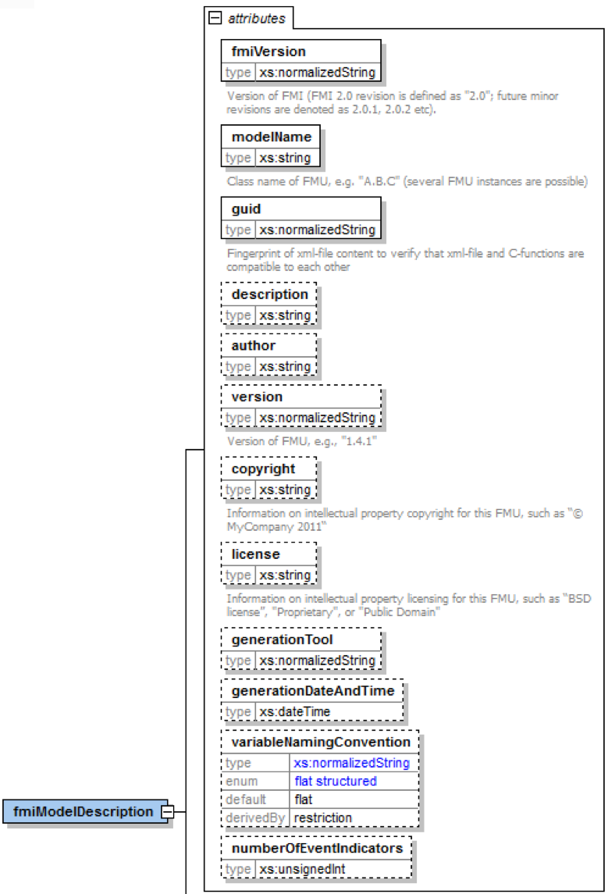
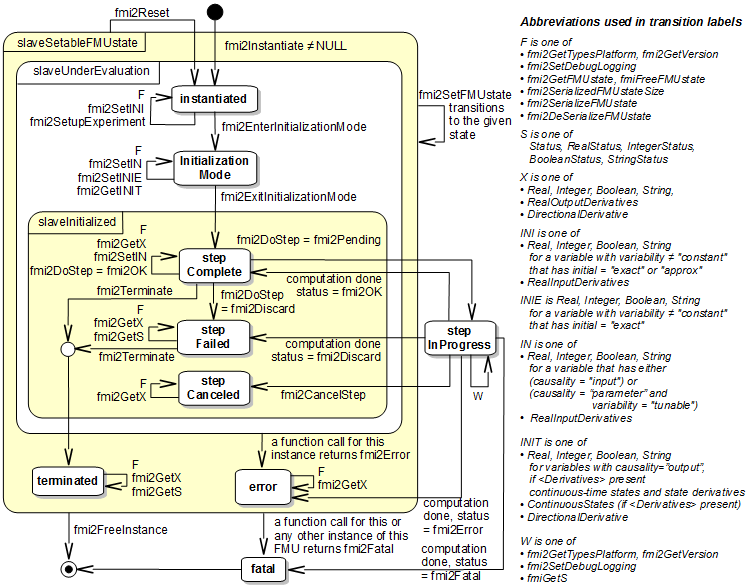

This document defines the Functional Mock-up Interface (FMI), version 2.0. FMI is a tool-independent standard to support both model exchange and co-simulation of dynamic models using a combination of XML files and C code (either compiled in DLL/shared libraries or in source code). The first version, FMI 1.0, was published in 2010. The FMI development was initiated by Daimler AG with the goal to improve the exchange of simulation models between suppliers and OEMs. As of today, development of the standard continues through the participation of 16 companies and research institutes. FMI 1.0 is supported by over 45 tools and is used by automotive and non-automotive organizations throughout Europe, Asia and North America.
The downloads page (https://fmi-standard.org/downloads/) provides, this specification, as well as supporting C header and XML schema files, and an FMI compliance checker. In addition, sample models (exported from different tools in FMI format) are provided to assist tool vendors to ensure compatibility with other tools, as well as a test suite to check whether connected FMUs (Function Mock-up Units) are appropriately handled by a tool.
Contact the FMI development group at contact@fmi-standard.org.
History / Road Map
| Version | Date | Remarks |
|---|---|---|
1.0 |
2010-01-26 |
First version of FMI for Model Exchange |
1.0 |
2010-10-12 |
First version of FMI for Co-Simulation |
2.0 |
2014-07-25 |
Second version of FMI for Model Exchange and Co-Simulation |
Please report issues that you find with this specification to the public FMI issue tracking system: https://github.com/modelica/fmi-standard/issues/
License of this document
- Copyright ©
-
2008-2011 MODELISAR consortium and
2012-2014 Modelica Association Project "FMI"
This document is provided "as is" without any warranty. It is licensed under the CC-BY-SA (Creative Commons Attribution-Sharealike 4.0 International) license, which is the license used by Wikipedia. Human-readable summary of the license text from http://creativecommons.org/licenses/by-sa/4.0/ is as follows:
You are free to Share — copy and redistribute the material in any medium or format Remix — remix, transform, and build upon the material for any purpose, even commercially. The licensor cannot revoke these freedoms as long as you follow the license terms. Under the following terms: Attribution — You must give appropriate credit, provide a link to the license, and indicate if changes were made. You may do so in any reasonable manner, but not in any way that suggests the licensor endorses you or your use. Share Alike — If you remix, transform, or build upon the material, you must distribute your contributions under the same license as the original. |
The legal license text and disclaimer is available at:
- Note
-
Article (3a) of this license requires that modifications of this work must clearly label, demarcate or otherwise identify that changes were made.
The C header and XML schema files that accompany this document are available under the 2-Clause BSD license.
Attention is drawn to the possibility that some of the elements of this document may be the subject of patent rights. Modelica Association shall not be held responsible for identifying such patent rights.
If you have improvement suggestions, please send them to the FMI development group at mailto:contact@fmi-standard.org.
Abstract
This document defines the Functional Mock-up Interface (FMI), version 2.0 to (a) exchange dynamic models between tools and (b) define tool coupling for dynamic system simulation environments.
FMI for Model Exchange (Section 3)
The intention is that a modeling environment can generate a C code representation of a dynamic system model that can be utilized by other modeling and simulation environments. Models are described by differential, algebraic and discrete equations with time-, state- and step-events. If the C code describes a continuous system, this system is solved with the integrators of the environment where it is used. The models to be treated by this interface can be large for usage in offline or online simulation, or they can be used in embedded control systems on micro-processors.
FMI for Co-Simulation (Section 4)
The intention is to provide an interface standard for coupling of simulation tools in a co-simulation environment. The data exchange between subsystems is restricted to discrete communication points. In the time between two communication points, the subsystems are solved independently from each other by their individual solver. Master algorithms control the data exchange between subsystems and the synchronization of all simulation solvers (slaves). Simple master algorithms, as well as more sophisticated ones are both supported. Note that the master algorithm itself is not part of the FMI standard.
FMI Common Concepts (Section 2)
The two interface standards have many parts in common. In particular, it is possible to utilize several instances of a model and/or a co-simulation tool and to connect them together. The interfaces are independent of the target environment because no header files are used that depend on the target environment (with exception of the data types of the target platform). This allows generating one dynamic link library that can be utilized in any environment on the same platform. A model, a cosimulation slave or the coupling part of a tool, is distributed in one ZIP file called FMU (Functional Mockup Unit) that contains several files:
-
An XML file contains the definitions of all exposed variables in the FMU and other static information. It is then possible to run the FMU on a target system without this information, in other words with no unnecessary overhead.
-
All required model equations or the access to co-simulation tools are provided with a small set of easy-to-use C functions. A new caching technique allows a more efficient evaluation of the model equations than in other approaches. These C functions can either be provided in source and/or binary form. Binary forms for different platforms can be included in the same FMU ZIP file.
-
The model equations or the co-simuation tool can be either provided directly in the FMU, or the FMU contains only a generic communication module that communicates with an external tool that evaluates or simulates the model. In the XML file, information about the capabilities of the FMU are present, for example to characterize the ability of a co-simulation slave to support advanced master algorithms such as the usage of variable communication step sizes, higher order signal extrapolation, or others.
-
Further data can be included in the FMU ZIP file, especially a model icon (bitmap file), documentation files, maps and tables needed by the FMU, and/or all object libraries or dynamic link libraries that are utilized.
A growing set of tools supports FMI. The actual list of tools is available at: https://www.fmi-standard.org/tools
About FMI 2.0
This version 2.0 is a major enhancement to FMI 1.0, that merges the FMI 1.0 Model Exchange and Co-Simulation standards and incorporates many improvements, often due to practical experience when using the FMI 1.0 standards. New features are usually optional (need neither be supported by the tool that exports an FMU, nor by the tool that imports an FMU). Details are provided in appendix A.3.1. The appendix of the FMI 1.0 specification has been mostly moved in an extended and improved form to a companion document
"FunctionalMockupInterface-ImplementationHints.pdf"
where practical information for the implementation of the FMI standard is provided.
Conventions used in this Document
-
Non-normative text is given in square brackets in italic font: [Especially examples are defined in this style.]
-
Arrays appear in two forms:
-
In the end-user/logical view, one- and two-dimensional arrays are used. Here the convention of linear algebra, the control community and the most important tools in this area is utilized. In other words the first element along one dimension starts at index one. In all these cases, the starting index is also explicitly mentioned at the respective definition of the array. For example, in the modelDescription.xml file, the set of exposed variables is defined as ordered sets where the first element is referenced with index one (these indices are, for example, used to define the sparseness structure of partial derivative matrices).
-
In the implementation view, one-dimensional C arrays are used. In order to access an array element the C convention is used. For example, the first element of input argument
xfor functionsetContinuousStatesisx[0].
-
1. Overview
The FMI (Functional Mock-up Interface) defines an interface to be implemented by an executable called an FMU (Functional Mock-up Unit). The FMI functions are used (called) by a simulation environment to create one or more instances of the FMU and to simulate them, typically together with other models. An FMU may either have its own solvers (FMI for Co-Simulation, Section 4) or require the simulation environment to perform numerical integration (FMI for Model Exchange, Section 3). The goal of this interface is that the calling of an FMU in a simulation environment is reasonably simple. No provisions are provided in this document for how to generate an FMU from a modeling environment. Hints for implementation can be found in the companion document "FunctionalMockupInterfaceImplementationHints.pdf".
The FMI for Model Exchange interface defines an interface to the model of a dynamic system described by differential, algebraic and discrete-time equations. It provides an interface to evaluate these equations as needed in different simulation environments, as well as in embedded control systems, with explicit or implicit integrators, and fixed or variable step-size. The interface is designed to allow the description of large models.
The FMI for Co-Simulation interface is designed both for the coupling of simulation tools
(simulator coupling, tool coupling),
and coupling with subsystem models,
which have been exported by their
simulators together with its solvers as runnable code.
The goal is to compute the solution of time-dependent
coupled systems consisting of subsystems that are continuous in time (model components
that are described by differential-algebraic equations) or are time-discrete (model components that are
described by difference equations, for example discrete controllers).
In a block representation of the coupled system,
the subsystems are represented by blocks with (internal) state variables x(t) that are
connected to other subsystems (blocks) of the coupled problem
by subsystem inputs u(t) and subsystem outputs y(t).
In case of tool coupling, the modular structure of coupled problems is exploited in all stages of the simulation process beginning with the separate model setup and pre-processing for the individual subsystems in different simulation tools. During time integration, the simulation is again performed independently for all subsystems restricting the data exchange between subsystems to discrete communication points. Finally, the visualization and post-processing of simulation data is done individually for each subsystem in its own native simulation tool.
The two interfaces have large parts in common. These parts are defined in Section 2. In particular:
-
FMI Application Programming Interface (C)
All required equations or tool coupling computations are evaluated by calling standardized C functions. C is used because it is the most portable programming language today and is the only programming language that can be utilized in all embedded control systems. -
FMI Description Schema (XML)
The schema defines the structure and content of an XML file generated by a modeling environment. This XML file contains the definition of all variables of the FMU in a standardized way. It is then possible to run the C code in an embedded system without the overhead of the variable definition (the alternative would be to store this information in the C code and access it via function calls, but this is neither practical for embedded systems nor for large models). Furthermore, the variable definition is a complex data structure and tools should be free to determine how to represent this data structure in their programs. The selected approach allows a tool to store and access the variable definitions (without any memory or efficiency overhead of standardized access functions) in the programming language of the simulation environment, such as C++, C#, Java, or Python. Note that there are many free and commercial libraries in different programming languages to read XML files into an appropriate data structure. See for example http://en.wikipedia.org/wiki/XML#Parsers and especially the efficient open source parser SAX (http://sax.sourceforge.net/, http://en.wikipedia.org/wiki/Simple_API_for_XML).
An FMU (in other words a model without integrators, a runnable model with integrators, or a tool coupling interface) is distributed in one ZIP file. The ZIP file contains (more details are given in Section 2.3):
-
The FMI Description File (in XML format).
-
The C sources of the FMU, including the needed run-time libraries used in the model, and/or binaries for one or several target machines, such as Windows dynamic link libraries (.dll) or Linux shared object libraries (.so). The latter solution is especially used if the FMU provider wants to hide the source code to secure the contained know-how or to allow a fully automatic import of the FMU in another simulation environment. An FMU may contain physical parameters or geometrical dimensions, which should not be open. On the other hand, some functionality requires source code.
-
Additional FMU data (such as tables or maps) in FMU specific file formats.
A schematic view of an FMU is shown in Figure 1:
For details, see Section 3 and Section 4. Blue arrows: Information provided by the FMU. Red arrows: Information provided to the FMU.
Publications for FMI are available from https://fmi-standard.org/literature/, specially Blochwitz et.al. 2011 and 2012.
1.1. Properties and Guiding Ideas
In this section, properties are listed and some principles are defined that guided the low-level design of the FMI. This shall increase self consistency of the interface functions. The listed issues are sorted, starting from high-level properties to low-level implementation issues.
- Expressivity
-
The FMI provides the necessary features that Modelica®, Simulink® and SIMPACK® models [1] can transform to an FMU.
- Stability
-
The FMI is expected to be supported by many simulation tools world-wide. Implementing such support is a major investment for tool vendors. Stability and backwards compatibility of the FMI has therefore high priority. To support this, the FMI defines "capability flags" that will be used by future versions of the FMI to extend and improve the FMI in a backwards compatible way, whenever feasible.
- Implementation
-
FMUs can be written manually or can be generated automatically from a modeling environment. Existing manually coded models can be transformed manually to a model according to the FMI standard.
- Processor independence
-
It is possible to distribute an FMU without knowing the target processor. This allows an FMU to run on a PC, a Hardware-in-the-Loop simulation platform or as part of the controller software of an ECU, for example, as part of an AUTOSAR SWC. Keeping the FMU independent of the target processor increases the usability of the FMU and is even required by the AUTOSAR software component model. Implementation: Using a textual FMU (distribute the C source of the FMU).
- Simulator independence
-
It is possible to compile, link and distribute an FMU without knowing the target simulator. Reason: The standard would be much less attractive otherwise, unnecessarily restricting the later use of an FMU at compile time and forcing users to maintain simulator specific variants of an FMU. Implementation: Using a binary FMU. When generating a binary FMU such as a Windows dynamic link library (.dll) or a Linux shared object library (.so), the target operating system and eventually the target processor must be known. However, no run-time libraries, source files or header files of the target simulator are needed to generate the binary FMU. As a result, the binary FMU can be executed by any simulator running on the target platform (provided the necessary licenses are available, if required from the model or from the used run-time libraries).
- Small run-time overhead
-
Communication between an FMU and a target simulator through the FMI does not introduce significant run-time overhead. This is achieved by a new caching technique (to avoid computing the same variables several times) and by exchanging vectors instead of scalar quantities.
- Small footprint
-
A compiled FMU (the executable) is small. Reason: An FMU may run on an ECU (Electronic Control Unit, for example, a micro-processor), and ECUs have strong memory limitations. This is achieved by storing signal attributes (names, units, etc.) and all other static information not needed for model evaluation in a separate text file (= Model Description File) that is not needed on the micro-processor where the executable might run.
- Hide data structure
-
The FMI for Model Exchange does not prescribe a data structure (a C struct) to represent a model. Reason: the FMI standard shall not unnecessarily restrict or prescribe a certain implementation of FMUs or simulators (whichever contains the model data) to ease implementation by different tool vendors.
- Support many and nested FMUs
-
A simulator may run many FMUs in a single simulation run and/or multiple instances of one FMU. The inputs and outputs of these FMUs can be connected with direct feed-through. Moreover, an FMU may contain nested FMUs.
- Numerical Robustness
-
The FMI standard allows that problems which are numerically critical (for example, time and state events, multiple sample rates, stiff problems) can be treated in a robust way.
- Hide cache
-
A typical FMU will cache computed results for later reuse. To simplify usage and to reduce error possibilities by a simulator, the caching mechanism is hidden from the usage of the FMU. Reason: First, the FMI should not force an FMU to implement a certain caching policy. Second, this helps to keep the FMI simple.
- Implementation
-
The FMI provides explicit methods (called by the FMU environment) for setting properties that invalidate cached data. An FMU that chooses to implement a cache may maintain a set of "dirty" flags, hidden from the simulator. A get method, for example to a state, will then either trigger a computation, or return cached data, depending on the value of these flags.
- Support numerical solvers
-
A typical target simulator will use numerical solvers. These solvers require vectors for states, derivatives and zero-crossing functions. The FMU directly fills the values of such vectors provided by the solvers. Reason: minimize execution time. The exposure of these vectors conflicts somewhat with the "hide data structure" requirement, but the efficiency gain justifies this.
- Explicit signature
-
The intended operations, argument types and return values are made explicit in the signature. For example, an operator (such as
compute_derivatives) is not passed as an int argument but a special function is called for this. Theconstprefix is used for any pointer that should not be changed, includingconst char*instead ofchar*. Reason: the correct use of the FMI can be checked at compile time and allows calling of the C code in a C++ environment (which is much stricter onconstthan C is). This will help to develop FMUs that use the FMI in the intended way. - Few functions
-
The FMI consists of a few, "orthogonal" functions, avoiding redundant functions that could be defined in terms of others. Reason: This leads to a compact, easy-to-use, and hence attractive API with a compact documentation.
- Error handling
-
All FMI methods use a common set of methods to communicate errors.
- Allocator must free
-
All memory (and other resources) allocated by the FMU are freed (released) by the FMU. Likewise, resources allocated by the simulator are released by the simulator. Reason: this helps to prevent memory leaks and run-time errors due to incompatible run-time environments for different components.
- Immutable strings
-
All strings passed as arguments or returned are read-only and must not be modified by the receiver. Reason: This eases the reuse of strings.
- Named list elements
-
All lists defined in the
fmiModelDescription.xsdXML schema file have a String attributenameto a list element. This attribute must be unique with respect to all othernameattributes of the same list.
Use C: The FMI is encoded using C, not C++. Reason: Avoid problems with compiler and linker dependent behavior. Run FMU on embedded target.
This version of the functional mock-up interface does not have the following desirable properties. They might be added in a future version.
-
The FMI for Model Exchange is for ordinary differential equations (ODEs) in state space form. It is not for a general differential-algebraic equation system. However, algebraic equation systems inside the FMU are supported (for example, the FMU can report to the environment to re-run the current step with a smaller step size since a solution could not be found for an algebraic equation system).
-
Special features that might be useful for multibody system programs, like SIMPACK, are not included.
-
The interface is for simulation and for embedded systems. Properties that might be additionally needed for trajectory optimization, for example, derivatives of the model with respect to parameters during continuous integration are not included.
-
No explicit definition of the variable hierarchy in the XML file.
-
The number of states and number of event indicators are fixed for an FMU and cannot be changed.
1.2. Acknowledgements
Until Dec. 2011, this work was carried out within the ITEA2 MODELISAR project (project number: ITEA2-07006, https://itea3.org/project/modelisar.html).
Daimler AG, DLR, ITI GmbH, Martin Luther University Halle-Wittenberg, QTronic GmbH and SIMPACK AG thank BMBF for partial funding of this work within MODELISAR (BMBF Förderkennzeichen: 01lS0800x).
Dassault Systèmes (Sweden) thanks the Swedish funding agency VINNOVA (2008-02291) for partial funding of this work within MODELISAR.
LMS Imagine and IFPEN thank DGCIS for partial funding of this work within MODELISAR.
Since Sept. 2012 until Nov. 2015, this work is partially carried out within the ITEA2 MODRIO project (project number: ITEA 2-11004, https://itea3.org/project/modrio.html).
-
DLR, ITI GmbH, QTronic GmbH and SIMPACK AG thank BMBF for partial funding of this work within MODRIO (BMBF Förderkennzeichen: 01IS12022E).
-
Dassault Systèmes (Sweden), Linköping University and Modelon AB thank the Swedish funding agency VINNOVA (2012—01157) for partial funding of this work within MODRIO.
-
Siemens PLM Software (France) and IFPEN thank DGCIS for partial funding of this work within MODRIO.
2. FMI Common Concepts for Model Exchange and Co-Simulation
The concepts defined in this chapter are defined that are common for "model exchange" and "co-simulation". In both cases, FMI defines an input/output block of a dynamic model where the distribution of the block, the platform dependent header file, several access functions, as well as the schema files are identical. The definitions that are specific to the particular cases are defined in Section 3 and Section 4. .
Below, the term FMU (Functional Mock-up Unit) will be used as common term for a model in the "FMI for model exchange" format, or a co-simulation slave in the "FMI for co-simulation" format. Note that the interface supports several instances of one FMU.
2.1. FMI Application Programming Interface
This section contains the common interface definitions to execute functions of an FMU from a C program.
Note that he following general properties hold for an FMU:
-
FMI functions of one instance do not need to be thread-safe.
[For example, if the functions of one instance of an FMU are accessed from more than one thread; the multi-threaded environment that uses the FMU must guarantee that the calling sequences of functions defined in Section 3.2.3 and Section 4.2.4. are used. The FMU itself does not implement any services to support this.] -
FMI functions must not change global settings which affect other processes/threads. An FMI function may change settings of the process/thread in which it is called (such as floating point control registers), provided these changes are restored before leaving the function or before a callback function is called.
[This property ensures that functions of different FMU instances can be called safely in any order. Additionally, they can be called in parallel provided the functions are called in different process/threads. If an FMI function changes for example the floating point control word of the CPU, it must restore the previous value before return of the function. For x86 CPUs, the floating point control word is set using thefldcwinstruction. This can be used to switch on additional exceptions such as "floating point division by zero". An FMU might temporarily change the floating point control word and get notified on floating point exceptions internally, but has to restore the flag and clear the floating point status word before return of the respective FMI function.]
2.1.1. Header Files and Naming of Functions
Three header files are provided that define the interface of an FMU. In all header files the convention is used that all C function and type definitions start with the prefix "fmi3":
fmi3TypesPlatform.h-
contains the type definitions of the input and output arguments of the functions. This header file must be used both by the FMU and by the target simulator. If the target simulator has different definitions in the header file (for example,
typedef float fmi3Realinstead oftypedef double** fmi3Real), then the FMU needs to be re-compiled with the header file used by the target simulator.
[Example for a definition in this header file:
typedef double fmi3Real;
] fmi3FunctionTypes.h-
contains
typedefdefinitions of all function prototypes of an FMU. When dynamically loading an FMU, these definitions can be used to type-cast the function pointers to the respective function definition. [Example for a definition in this header file:
typedef fmi3Status fmi3SetTimeTYPE(fmi3Component, fmi3Real);] fmi3Functions.h-
contains the function prototypes of an FMU that can be accessed in simulation environments and that are defined in Section 2, Section 3 and Section 4.
This header file includes fmi3TypesPlatform.h and fmi3FunctionTypes.h.
The header file version number for which the model was compiled, can be inquired in the target simulator with fmi3GetVersion (see Section 2.1.4).
[Example for a definition in this header file [2]:
`FMI3_Export fmi3SetTimeTYPE fmi3SetTime;`]
The goal is that both textual and binary representations of FMUs are supported and that several FMUs
might be present at the same time in an executable (for example, FMU A may use an FMU B).
In order for this to be possible,
the names of the functions in different FMUs must be different, or function pointers must be used.
To support the first variant macros are provided in fmi3Functions.h to build the actual
function names by using a function prefix that depends on how the FMU is shipped.
Typically, FMU functions are used as follows:
// FMU is shipped with C source code, or with static link library
#define FMI3_FUNCTION_PREFIX MyModel_
#include "fmi3Functions.h"
< usage of the FMU functions >
// FMU is shipped with DLL/SharedObject
#include "fmi3Functions.h"
< usage of the FMU functions >A function that is defined as fmi3GetReal is changed by the macros to a function name as follows:
-
If the FMU is shipped with C source code or with static link library:
The constructed function name isMyModel_fmi3GetReal. In other words the function name is prefixed with the model name and an_. AsFMI3_FUNCTION_PREFIXthemodelIdentifierattribute defined in<fmiModelDescription><ModelExchange>, or<fmiModelDescription><CoSimulation>is used, together with_at the end (see Section 3.3.1 and Section 4.3.1). A simulation environment can therefore construct the relevant function names by generating code for the actual function call. In case of a static link library, the name of the library is MyModel.lib on Windows and libMyModel.a on Linux; in other words themodelIdentifierattribute is used as library name. -
If the FMU is shipped with DLL/SharedObject:
The constructed function name isfmi3GetReal, in other words, it is not changed. A simulation environment will then dynamically load this library and will explicitly import the function symbols by providing the FMI function names as strings. The name of the library isMyModel.dllon Windows orMyModel.soon Linux; in other words themodelIdentifierattribute is used as library name.
[An FMU can be optionally shipped so that it basically contains only the communication to another tool (needsExecutionTool = true, see Section 4.3.1). This is particularily common for co-simulation tasks. In FMI 1.0, the function names are always prefixed with the model name and therefore a DLL/Shared Object has to be generated for every model. FMI 2.0 improves this situation since model names are no longer used as prefix in case of DLL/Shared Objects: Therefore one DLL/Shared Object can be used for all models in case of tool coupling. If an FMU is imported into a simulation environment, this is usually performed dynamically (based on the FMU name, the corresponding FMU is loaded during execution of the simulation environment) and then it does not matter whether a model name is prefixed or not.]
Since modelIdentifier is used as prefix of a C-function name it must fulfill the restrictions on C-function
names (only letters, digits and/or underscores are allowed).
[For example, if modelName = "A.B.C", then modelIdentifier might be "A_B_C".]
Since modelIdentifier is also used as name in a file system, it must also fulfill the restrictions of the targeted operating system.
Basically, this means that it should be short.
For example, the Windows API only supports full path-names of a file up to 260 characters (see: http://msdn.microsoft.com/en-us/library/aa365247%28VS.85%29.aspx).
2.1.2. Platform Dependent Definitions (fmi3TypesPlatform.h)
To simplify porting, no C types are used in the function interfaces, but the alias types are defined in this section.
All definitions in this section are provided in the header file fmi3TypesPlatform.h.
It is required to use this definition for all binary FMUs.
[Only for source code FMUs, a change might be useful in some cases.]:
typedef void* fmi3Component; /* Pointer to FMU instance */This is a pointer to an FMU specific data structure that contains the information needed to process the model equations or to process the co-simulation of the respective slave. This data structure is implemented by the environment that provides the FMU; in other words, the calling environment does not know its content, and the code to process it must be provided by the FMU generation environment and must be shipped with the FMU.
typedef void* fmi3ComponentEnvironment; /* Pointer to FMU environment */This is a pointer to a data structure in the simulation environment that calls the FMU.
Using this pointer, data from the modelDescription.xml file [for example, mapping of valueReferences to variable names] can be transferred between the simulation environment and the logger function (see Section 2.1.5).
typedef void* fmi3FMUstate; /* Pointer to internal FMU state */This is a pointer to a data structure in the FMU that saves the internal FMU state of the actual or a previous time instant. This allows to restart a simulation from a previous FMU state (see Section 2.1.8).
typedef unsigned int fmi3ValueReference; /* Handle to the value of a variable */This is a handle to a (base type) variable value of the model.
Handle and base type (such as fmi3Real) uniquely identify the value of a variable.
Variables of the same base type that have the same handle, always have identical values, but other parts of the variable definition might be different [for example, min/max attributes].
All structured entities, such as records or arrays, are "flattened" into a set of scalar values of type fmi3Real, fmi3Integer etc.
An fmi3ValueReference references one such scalar.
The coding of fmi3ValueReference is a "secret" of the environment that generated the FMU.
The interface to the equations only provides access to variables via this handle.
Extracting concrete information about a variable is specific to the used environment that reads the Model Description File in which the value handles are defined.
If a function in the following sections is called with a wrong fmi3ValueReference value [for example, setting a constant with a fmi3SetReal function call], then the function has to return with an error ( fmi3Status = fmi3Error, see Section 2.1.3).
typedef float fmi3Float32; /* Single precision floating point (32-bit) */
typedef double fmi3Float64; /* Double precision floating point (64-bit) */
typedef int8_t fmi3Int8; /* 8-bit signed integer */
typedef uint8_t fmi3UInt8; /* 8-bit unsigned integer */
typedef int16_t fmi3Int16; /* 16-bit signed integer */
typedef uint16_t fmi3UInt16; /* 16-bit unsigned integer */
typedef int32_t fmi3Int32; /* 32-bit signed integer */
typedef uint32_t fmi3UInt32; /* 32-bit unsigned integer */
typedef int64_t fmi3Int64; /* 64-bit signed integer */
typedef uint64_t fmi3UInt64; /* 64-bit unsigned integer */
typedef int fmi3Boolean; /* Data type to be used with fmi3True and fmi3False */
typedef char fmi3Char; /* Data type for one character */
typedef const fmi3Char* fmi3String; /* Data type for character strings
('\0' terminated, UTF8 encoded) */
typedef char fmi3Byte; /* Smallest addressable unit of the machine
(typically one byte) */
typedef const fmi3Byte* fmi3Binary; /* Data type for binary data
(out-of-band length terminated) */
/* Values for fmi3Boolean */
#define fmi3True 1
#define fmi3False 0These are the basic data types used in the interfaces of the C functions.
More data types might be included in future versions of the interface.
In order to keep flexibility, especially for embedded systems or for high performance computers, the exact data types or the word length of a number are not standardized.
Instead, the precise definition (in other words, the header file fmi3TypesPlatform.h) is provided by the environment where the FMU shall be used.
In most cases, the definition above will be used.
If the target environment has different definitions and the FMU is distributed in binary format, it must be newly compiled and linked with this target header file.
If an fmi3String or an fmi3Binary variable is passed as input argument to an FMI function and the FMU needs to use the string/binary later,
the FMI function must copy the string/binary before it returns and store it in the internal FMU memory,
because there is no guarantee for the lifetime of the string/binary after the function has returned.
If an fmi3String or an fmi3Binary variable is passed as output argument from an FMI function and the string/binary shall be used in the target environment,
the target environment must copy the whole string/binary (not only the pointer).
The memory of this string/binary may be deallocated by the next call to any of the FMI interface functions (the string/binary memory might also be just a buffer, that is reused).
2.1.3. Status Returned by Functions
This section defines the status flag (an enumeration of type fmi3Status defined in file fmi3FunctionTypes.h ) that is returned by all functions to indicate the success of the function call:
typedef enum {
fmi3OK,
fmi3Warning,
fmi3Discard,
fmi3Error,
fmi3Fatal,
fmi3Pending
} fmi3Status;Status returned by functions. The status has the following meaning
fmi3OK-
all well.
fmi3Warning-
things are not quite right, but the computation can continue. Function
loggerwas called in the model (see below), and it is expected that this function has shown the prepared information message to the user. fmi3Discard-
this return status is only possible if explicitly defined for the corresponding function [3]: (ModelExchange:
fmi3SetReal,fmi3SetInteger,fmi3SetBoolean,fmi3SetString,fmi3SetContinuousStates,fmi3GetReal,fmi3GetDerivatives,fmi3GetContinuousStates,fmi3GetEventIndicators; CoSimulation:fmi3SetReal,fmi3SetInteger,fmi3SetBoolean,fmi3SetString,fmi3DoStep,fmi3GetXXXStatus):
For "model exchange": It is recommended to perform a smaller step size and evaluate the model equations again, for example because an iterative solver in the model did not converge or because a function is outside of its domain [for example,sqrt(<negative number>)]. If this is not possible, the simulation has to be terminated.
For "co-simulation":fmi3Discardis returned also if the slave is not able to return the required status information. The master has to decide if the simulation run can be continued.
In both cases, functionloggerwas called in the FMU (see below), and it is expected that this function has shown the prepared information message to the user if the FMU was called in debug mode (loggingOn = fmi3True). Otherwise,loggershould not show a message. fmi3Error-
the FMU encountered an error. The simulation cannot be continued with this FMU instance. If one of the functions returns
fmi3Error, it can be tried to restart the simulation from a formerly stored FMU state by callingfmi3SetFMUstate. This can be done if the capability flagcanGetAndSetFMUstateis true andfmi3GetFMUstatewas called before in non-erroneous state. If not, the simulation cannot be continued andfmi3FreeInstanceorfmi3Resetmust be called afterwards.[4]
Further processing is possible after this call; especially other FMU instances are not affected. Functionloggerwas called in the FMU (see below), and it is expected that this function has shown the prepared information message to the user. fmi3Fatal-
the model computations are irreparably corrupted for all FMU instances. [For example, due to a run-time exception such as access violation or integer division by zero during the execution of an fmi function]. Function
loggerwas called in the FMU (see below), and it is expected that this function has shown the prepared information message to the user. It is not possible to call any other function for any of the FMU instances. fmi3Pending-
this status is returned only from the co-simulation interface, if the slave executes the function in an asynchronous way. That means the slave starts to compute but returns immediately. The master has to call
fmi3GetDoStepPendingStatusto determine if the slave has finished the computation. Can be returned only byfmi3DoStepandfmi3GetDoStepPendingStatus(see Section 4.2.3).
2.1.4. Inquire Platform and Version Number of Header Files
This section documents functions to inquire information about the header files used to compile its functions.
typedef const char* fmi3GetVersionTYPE(void);Returns the version of the fmi3Functions.h header file which was used to compile the functions of the FMU.
The function returns fmi3Version which is defined in this header file.
The standard header file as documented in this specification has version "3.0" (so this function usually returns "3.0").
2.1.5. Creation, Destruction and Logging of FMU Instances
This section documents functions that deal with instantiation, destruction and logging of FMUs.
typedef fmi3Component fmi3InstantiateTYPE(fmi3String instanceName,
fmi3Type fmuType,
fmi3String fmuGUID,
fmi3String fmuResourceLocation,
const fmi3CallbackFunctions* functions,
fmi3Boolean visible,
fmi3Boolean loggingOn);typedef enum {
fmi3ModelExchange,
fmi3CoSimulation
} fmi3Type;The function returns a new instance of an FMU.
If a null pointer is returned, then instantiation failed.
In that case, functions→logger is called with detailed information about the reason.
An FMU can be instantiated many times (provided capability flag canBeInstantiatedOnlyOncePerProcess = false).
This function must be called successfully before any of the following functions can be called. For co-simulation, this function call has to perform all actions of a slave which are necessary before a simulation run starts (for example, loading the model file, compilation…).
Argument instanceName is a unique identifier for the FMU instance.
It is used to name the instance, for example, in error or information messages generated by one of the fmi3XXX functions.
It is not allowed to provide a null pointer and this string must be non-empty (in other words, must have at least one character that is no white space).
[If only one FMU is simulated, as instanceName attribute modelName or <ModelExchange/CoSimulation modelIdentifier=".."> from the XML schema fmiModelDescription might be used.]
Argument fmuType defines the type of the FMU:
Argument instantiationToken can be used by the FMU to check that the modelDescription.xml file (see Section 2.3) is compatible with the implementation of the FMU.
It is an opaque string generated by the FMU exporter that is stored in the xml file as mandatory attribute instantiationToken (see Section 2.2.1).
It must be passed unchanged to the FMU, this argument must not be null.
Argument fmuResourceLocation is a URI according to the IETF RFC3986 syntax to indicate the location to the resources directory of the unzipped FMU archive.
The following schemes must be understood by the FMU:
-
Mandatory:
filewith absolute path (either including or omitting the authority component) -
Optional:
http,https,ftp -
Reserved:
fmi3for FMI for PLM.
[Example: An FMU is unzipped in directory "C:\temp\MyFMU", then fmuResourceLocation = "file:///C:/temp/MyFMU/resources" or "file:/C:/temp/MyFMU/resources".
Function fmi3Instantiate is then able to read all needed resources from this directory, for example maps or tables used by the FMU.]
Argument functions provides callback functions to be used from the FMU functions to utilize resources from the environment (see type fmi3CallbackFunctions below).
Argument visible = fmi3False defines that the interaction with the user should be reduced to a minimum (no application window, no plotting, no animation, etc.).
In other words, the FMU is executed in batch mode.
If visible = fmi3True, the FMU is executed in interactive mode, and the FMU might require to explicitly acknowledge start of simulation / instantiation / initialization (acknowledgment is non-blocking).
If loggingOn = fmi3True, debug logging is enabled.
If loggingOn = fmi3False, debug logging is disabled.
[The FMU enable/disables LogCategories which are useful for debugging according to this argument.
Which LogCategories the FMU sets is unspecified.]
typedef void (*fmi3CallbackLogger) (fmi3ComponentEnvironment componentEnvironment,
fmi3String instanceName,
fmi3Status status,
fmi3String category,
fmi3String message);
typedef void* (*fmi3CallbackAllocateMemory) (fmi3ComponentEnvironment componentEnvironment,
size_t nobj,
size_t size);
typedef void (*fmi3CallbackFreeMemory) (fmi3ComponentEnvironment componentEnvironment,
void* obj);
typedef void (*fmi3StepFinished) (fmi3ComponentEnvironment componentEnvironment,
fmi3Status status);
typedef struct {
fmi3CallbackLogger logger;
fmi3CallbackAllocateMemory allocateMemory;
fmi3CallbackFreeMemory freeMemory;
fmi3StepFinished stepFinished;
fmi3ComponentEnvironment componentEnvironment;
} fmi3CallbackFunctions;The struct contains pointers to functions provided by the environment to be used by the FMU.
It is not allowed to change these functions between fmi3Instantiate and fmi3Terminate calls.
Additionally, a pointer to the environment is provided (componentEnvironment) that needs to be passed to all of the callback functions, in order that those functions can utilize data from the environment, such as mapping a valueReference to a string, or assigning memory to a certain FMU instance.
In the unlikely case that fmi3Component is also needed in those functions, it has to be passed via argument componentEnvironment. Argument componentEnvironment may be a null pointer.
The componentEnvironment pointer is also passed to the stepFinished function in order that the environment can provide an efficient way to identify the slave that called stepFinished.
In the default fmi3FunctionTypes.h file, typedefs for the function definitions are present to simplify the usage; this is non-normative.
The functions have the following meaning:
- Function
logger -
Pointer to a function that is called in the FMU, usually if an
fmi3XXXfunction does not behave as desired. Ifloggeris called withstatus = fmi3OK, then the message is a pure information message.instanceNameis the instance name of the model that calls this function.categoryis the category of the message. The meaning ofcategoryis defined by the modeling environment that generated the FMU. Depending on this modeling environment, none, some or all allowed values ofcategoryfor this FMU are defined in themodelDescription.xmlfile via element<fmiModelDescription><LogCategories>, see Section 2.2.4. Only messages are provided by functionloggerthat have a category according to a call tofmi3SetDebugLogging(see below). Argumentmessageis a string that contains the message. [Typically, this function prints the message and stores it optionally in a log file.]All string-valued arguments passed by the FMU to the
loggermay be deallocated by the FMU directly after functionloggerreturns. The environment must therefore create copies of these strings if it needs to access these strings later.
Theloggerfunction will append a line break to each message when writing messages after each other to a terminal or a file (the messages may also be shown in other ways, for example, as separate text-boxes in a GUI). The caller may include line-breaks (using "\n") within the message, but should avoid trailing line breaks.
Variables can be referenced in a message with#<ValueReference>#. If the character#shall be included in the message, it has to be prefixed with#, so#is an escape character.[Example:
The message#1365# must be larger than zero (used in IO channel ##4)
might be changed by theloggerfunction to
body.m must be larger than zero (used in IO channel #4)
ifbody.mis the name of the variable with value reference 1365.] - Function
allocateMemory -
Pointer to a function that is called in the FMU if memory needs to be allocated. If attribute
canNotUseMemoryManagementFunctions = "true"in<fmiModelDescription><ModelExchange / CoSimulation>, then functionallocateMemoryis not used in the FMU and a void pointer can be provided. If this attribute has a value offalse(which is the default), the FMU must not usemalloc,callocor other memory allocation functions. One reason is that these functions might not be available for embedded systems on the target machine. Another reason is that the environment may have optimized or specialized memory allocation functions.allocateMemoryreturns a pointer to space for a vector ofnobjobjects, each of sizesizeorNULL, if the request cannot be satisfied. The space is initialized to zero bytes [(a simple implementation is to usecallocfrom the C standard library)]. - Function
freeMemory -
Pointer to a function that must be called in the FMU if memory is freed that has been allocated with
allocateMemory. If a null pointer is provided as input argumentobj, the function shall perform no action [(a simple implementation is to use free from the C standard library; in ANSI C89 and C99, the null pointer handling is identical as defined here)]. If attributecanNotUseMemoryManagementFunctions = "true"in<fmiModelDescription><ModelExchange / CoSimulation>, then functionfreeMemoryis not used in the FMU and a null pointer can be provided. - Function
stepFinished -
Optional call back function to signal if the computation of a communication step of a co- simulation slave is finished. A null pointer can be provided. In this case the master must use
fmi3GetDoStepPendingStatusto query the status offmi3DoStep. If a pointer to a function is provided, it must be called by the FMU after a completed communication step.
typedef void fmi3FreeInstanceTYPE(fmi3Component c);Disposes the given instance, unloads the loaded model, and frees all the allocated memory and other resources that have been allocated by the functions of the FMU interface.
If a null pointer is provided for c, the function call is ignored (does not have an effect).
typedef fmi3Status fmi3SetDebugLoggingTYPE(fmi3Component c,
fmi3Boolean loggingOn,
size_t nCategories,
const fmi3String categories[]);If loggingOn=fmi3True, debug logging is enabled, otherwise it is switched off.
If loggingOn=fmi3True and nCategories > 0, then only debug messages according to the categories argument shall be printed via the logger function.
Vector categories has nCategories elements.
The allowed values of categories are defined by the modeling environment that generated the FMU.
Depending on the generating modeling environment, none, some or all allowed values for categories for this FMU are defined in the modelDescription.xml file via element fmiModelDescription.LogCategories, see Section 2.2.4.
2.1.6. Initialization, Termination, and Resetting an FMU
This section documents functions that deal with initialization, termination, and resetting of an FMU.
typedef fmi3Status fmi3SetupExperimentTYPE(fmi3Component c,
fmi3Boolean toleranceDefined,
fmi3Float64 tolerance,
fmi3Float64 startTime,
fmi3Boolean stopTimeDefined,
fmi3Float64 stopTime);Informs the FMU to setup the experiment.
This function can be called after fmi3Instantiate and before fmi3EnterInitializationMode is called.
Arguments toleranceDefined and tolerance depend on the FMU type:
fmuType = fmi3ModelExchange-
If
toleranceDefined = fmi3True, then the model is called with a numerical integration scheme where the step size is controlled by usingtolerancefor error estimation (usually as relative 'tolerance'). In such a case all numerical algorithms used inside the model (for example, to solve non-linear algebraic equations) should also operate with an error estimation of an appropriate smaller relative tolerance. fmuType = fmi3CoSimulation-
If
toleranceDefined = fmi3True, then the communication interval of the slave is controlled by error estimation. In case the slave utilizes a numerical integrator with variable step size and error estimation, it is suggested to usetolerancefor the error estimation of the internal integrator (usually as relative tolerance).
An FMU for Co-Simulation might ignore this argument.
The arguments startTime and stopTime can be used to check whether the model is valid within the given boundaries or to allocate memory which is necessary for storing results.
Argument startTime is the fixed initial value of the independent variable [5] value [if the independent variable is time, startTime is the starting time of initializaton].
If stopTimeDefined = fmi3True, then stopTime is the defined final value of the independent variable [if the independent variable is time, stopTime is the stop time of the simulation] and if the environment tries to compute past stopTime the FMU has to return fmi3Status = fmi3Error.
If stopTimeDefined = fmi3False, then no final value of the independent variable is defined and argument stopTime is meaningless.
typedef fmi3Status fmi3EnterInitializationModeTYPE(fmi3Component c);Informs the FMU to enter Initialization Mode.
Before calling this function, all variables with attribute <ScalarVariable initial = "exact" or "approx"> can be set with the fmi3SetXXX functions (the ScalarVariable attributes are defined in the Model Description File, see Section 2.2.7).
Setting other variables is not allowed.
Furthermore, fmi3SetupExperiment must be called at least once before calling fmi3EnterInitializationMode, in order that startTime is defined.
typedef fmi3Status fmi3ExitInitializationModeTYPE(fmi3Component c);Informs the FMU to exit Initialization Mode.
For fmuType = fmi3ModelExchange, this function switches off all initialization equations, and the FMU enters Event Mode implicitly; that is, all continuous-time and active discrete-time equations are available.
typedef fmi3Status fmi3TerminateTYPE(fmi3Component c);Informs the FMU that the simulation run is terminated.
After calling this function,
the final values of all variables can be inquired with the fmi3GetXXX functions.
It is not allowed to call this function after one of the functions returned with a status flag of fmi3Error or fmi3Fatal.
typedef fmi3Status fmi3ResetTYPE(fmi3Component c);Is called by the environment to reset the FMU after a simulation run.
The FMU goes into the same state as if fmi3Instantiate would have been called.
All variables have their default values.
Before starting a new run, fmi3SetupExperiment and fmi3EnterInitializationMode have to be called.
2.1.7. Getting and Setting Variable Values
All variable values of an FMU are identified with a variable handle called "value reference".
The handle is defined in the modelDescription.xml file (as attribute valueReference in element Variable).
Element valueReference shall be unique for all variables.
Variables can be scalar or array variables. When getting or setting the values of array variables, the serialization of array variable values used in C-API function calls, as well as in the XML start attributes is defined as row major - i.e. dimension order from left→right for the C-API (e.g. array[dim1][dim2]…[dimN]), and document order in the XML attributes.
[Example: A 2D matrix
is serialized as follows:
A[0][0]=a11 |
memory address: A |
|
A[0][1]=a12 |
memory address: A+1 |
|
A[1][0]=a21 |
memory address: A+2 |
|
A[1][1]=a22 |
memory address: A+3 |
|
A[2][0]=a31 |
memory address: A+4 |
|
A[2][1]=a32 |
memory address: A+5 |
]
The actual values of the variables that are defined in the modelDescription.xml file can be inquired after calling fmi3EnterInitializationMode with the following functions:
typedef fmi3Status fmi3GetFloat32TYPE(fmi3Component c,
const fmi3ValueReference vr[], size_t nvr,
fmi3Float32 value[], size_t nValues);
typedef fmi3Status fmi3GetFloat64TYPE(fmi3Component c,
const fmi3ValueReference vr[], size_t nvr,
fmi3Float64 value[], size_t nValues);
typedef fmi3Status fmi3GetInt8TYPE (fmi3Component c,
const fmi3ValueReference vr[], size_t nvr,
fmi3Int8 value[], size_t nValues);
typedef fmi3Status fmi3GetUInt8TYPE (fmi3Component c,
const fmi3ValueReference vr[], size_t nvr,
fmi3UInt8 value[], size_t nValues);
typedef fmi3Status fmi3GetInt16TYPE (fmi3Component c,
const fmi3ValueReference vr[], size_t nvr,
fmi3Int16 value[], size_t nValues);
typedef fmi3Status fmi3GetUInt16TYPE (fmi3Component c,
const fmi3ValueReference vr[], size_t nvr,
fmi3UInt16 value[], size_t nValues);
typedef fmi3Status fmi3GetInt32TYPE (fmi3Component c,
const fmi3ValueReference vr[], size_t nvr,
fmi3Int32 value[], size_t nValues);
typedef fmi3Status fmi3GetUInt32TYPE (fmi3Component c,
const fmi3ValueReference vr[], size_t nvr,
fmi3UInt32 value[], size_t nValues);
typedef fmi3Status fmi3GetInt64TYPE (fmi3Component c,
const fmi3ValueReference vr[], size_t nvr,
fmi3Int64 value[], size_t nValues);
typedef fmi3Status fmi3GetUInt64TYPE (fmi3Component c,
const fmi3ValueReference vr[], size_t nvr,
fmi3UInt64 value[], size_t nValues);
typedef fmi3Status fmi3GetBooleanTYPE(fmi3Component c,
const fmi3ValueReference vr[], size_t nvr,
fmi3Boolean value[], size_t nValues);
typedef fmi3Status fmi3GetStringTYPE (fmi3Component c,
const fmi3ValueReference vr[], size_t nvr,
fmi3String value[], size_t nValues);
typedef fmi3Status fmi3GetBinaryTYPE (fmi3Component c,
const fmi3ValueReference vr[], size_t nvr,
size_t size[], fmi3Binary value[], size_t nValues);Get actual values of variables by providing their variable references.
[These functions are especially used to get the actual values of output variables if a model is connected with other models.
Since state derivatives are also Variables, it is possible to get the value of a state derivative.
This is useful when connecting FMUs together.
Furthermore, the actual value of every variable defined in the modelDescription.xml file can be determined at the actually defined time instant (see Section 2.2.7).]
-
Argument
vris a vector ofnvrvalue handles that define the variables that shall be inquired. -
Argument
valueis a vector with the actual values of these variables. -
Argument
sizeis a vector with the actual sizes of the values for binary variables. -
Argument
nValuesprovides the number of values in thevaluevector (andsizevector, where applicable) which is only equal tonvrif allvalueReferences point to scalar variables. -
The strings returned by
fmi3GetString, as well as the binary values returned byfmi3GetBinary, must be copied in the target environment because the allocated memory for these strings might be deallocated by the next call to any of the fmi3 interface functions or it might be an internal string buffer that is reused. -
For ModelExchange:
fmi3Status = fmi3Discardis possible forfmi3GetRealonly, but not forfmi3GetInteger,fmi3GetBoolean,fmi3GetString,fmi3GetBinary, because these are discrete-time variables and their values can only change at an event instant wherefmi3Discarddoes not make sense.
It is also possible to set the values of certain variables at particular instants in time using the following functions:
typedef fmi3Status fmi3SetFloat32TYPE(fmi3Component c,
const fmi3ValueReference vr[], size_t nvr,
const fmi3Float32 value[], size_t nValues);
typedef fmi3Status fmi3SetFloat64TYPE(fmi3Component c,
const fmi3ValueReference vr[], size_t nvr,
const fmi3Float64 value[], size_t nValues);
typedef fmi3Status fmi3SetInt8TYPE (fmi3Component c,
const fmi3ValueReference vr[], size_t nvr,
const fmi3Int8 value[], size_t nValues);
typedef fmi3Status fmi3SetUInt8TYPE (fmi3Component c,
const fmi3ValueReference vr[], size_t nvr,
const fmi3UInt8 value[], size_t nValues);
typedef fmi3Status fmi3SetInt16TYPE (fmi3Component c,
const fmi3ValueReference vr[], size_t nvr,
const fmi3Int16 value[], size_t nValues);
typedef fmi3Status fmi3SetUInt16TYPE (fmi3Component c,
const fmi3ValueReference vr[], size_t nvr,
const fmi3UInt16 value[], size_t nValues);
typedef fmi3Status fmi3SetInt32TYPE (fmi3Component c,
const fmi3ValueReference vr[], size_t nvr,
const fmi3Int32 value[], size_t nValues);
typedef fmi3Status fmi3SetUInt32TYPE (fmi3Component c,
const fmi3ValueReference vr[], size_t nvr,
const fmi3UInt32 value[], size_t nValues);
typedef fmi3Status fmi3SetInt64TYPE (fmi3Component c,
const fmi3ValueReference vr[], size_t nvr,
const fmi3Int64 value[], size_t nValues);
typedef fmi3Status fmi3SetUInt64TYPE (fmi3Component c,
const fmi3ValueReference vr[], size_t nvr,
const fmi3UInt64 value[], size_t nValues);
typedef fmi3Status fmi3SetBooleanTYPE(fmi3Component c,
const fmi3ValueReference vr[], size_t nvr,
const fmi3Boolean value[], size_t nValues);
typedef fmi3Status fmi3SetStringTYPE (fmi3Component c,
const fmi3ValueReference vr[], size_t nvr,
const fmi3String value[], size_t nValues);
typedef fmi3Status fmi3SetBinaryTYPE (fmi3Component c,
const fmi3ValueReference vr[], size_t nvr,
const size_t size[], const fmi3Binary value[], size_t nValues);Set parameters, inputs, and start values, and re-initialize caching of variables that depend on these variables (see Section 2.2.7 for the exact rules on which type of variables fmi3SetXXX can be called, as well as Section 3.2.3 in case of ModelExchange and Section 4.2.4 in case of CoSimulation).
-
Argument
vris a vector ofnvrvalue handles that define the variables that shall be set. -
Argument
valueis a vector with the actual values of these variables. -
Argument
sizeis a vector with the actual sizes of the values of binary variables. -
Argument
nValuesprovides the number of values in thevaluevector which is only equal tonvrif allvalueReferences point to scalar variables. -
All strings passed as arguments to
fmi3SetString, as well as all binary values passed as arguments tofmi3SetBinary, must be copied inside these functions, because there is no guarantee of the lifetime of strings or binary values, when these functions return. -
Note,
fmi3Status = fmi3Discardis possible for thefmi3SetXXXfunctions.
For co-simulation FMUs, additional functions are defined in Section 4.2.1 to set and inquire derivatives of variables with respect to time in order to allow interpolation.
2.1.8. Getting and Setting the Complete FMU State
The FMU has an internal state consisting of all values that are needed to continue a simulation. This internal state consists especially of the values of the continuous-time states, iteration variables, parameter values, input values, delay buffers, file identifiers, and FMU internal status information. With the functions of this section, the internal FMU state can be copied and the pointer to this copy is returned to the environment. The FMU state copy can be set as actual FMU state, in order to continue the simulation from it.
[Examples for using this feature:
For variable step-size control of co-simulation master algorithms (get the FMU state for every accepted communication step; if the follow-up step is not accepted, restart co-simulation from this FMU state).
For nonlinear Kalman filters (get the FMU state just before initialization; in every sample period, set new continuous states from the Kalman filter algorithm based on measured values; integrate to the next sample instant and inquire the predicted continuous states that are used in the Kalman filter algorithm as basis to set new continuous states).
For nonlinear model predictive control (get the FMU state just before initialization; in every sample period, set new continuous states from an observer, initialize and get the FMU state after initialization. From this state, perform many simulations that are restarted after the initialization with new input signals proposed by the optimizer).]
Furthermore, the FMU state can be serialized and copied in a byte vector: [This can be, for example, used to perform an expensive steady-state initialization, copy the received FMU state in a byte vector and store this vector on file. Whenever needed, the byte vector can be loaded from file and deserialized, and the simulation can be restarted from this FMU state, in other words, from the steady-state initialization.]
typedef fmi3Status fmi3GetFMUstateTYPE (fmi3Component c, fmi3FMUstate* FMUstate);
typedef fmi3Status fmi3SetFMUstateTYPE (fmi3Component c, fmi3FMUstate FMUstate);
typedef fmi3Status fmi3FreeFMUstateTYPE(fmi3Component c, fmi3FMUstate* FMUstate);fmi3GetFMUstate makes a copy of the internal FMU state and returns a pointer to this copy (FMUstate).
If on entry *FMUstate == NULL, a new allocation is required.
If *FMUstate != NULL, then *FMUstate points to a previously returned FMUstate that has not been modified since.
In particular, fmi3FreeFMUstate had not been called with this FMUstate as an argument.
[Function fmi3GetFMUstate typically reuses the memory of this FMUstate
in this case and returns the same pointer to it, but with the actual FMUstate.]
fmi3SetFMUstate copies the content of the previously copied FMUstate back and uses it as actual new FMU state.
The FMUstate copy still exists.
fmi3FreeFMUstate frees all memory and other resources allocated with the fmi3GetFMUstate call for this FMUstate.
The input argument to this function is the FMUstate to be freed.
If a null pointer is provided, the call is ignored.
The function returns a null pointer in argument FMUstate.
These functions are only supported by the FMU,
if the optional capability flag canGetAndSetFMUstate in <fmiModelDescription> <ModelExchange / CoSimulation> in the XML file is explicitly set to true (see Section 3.3.1 and Section 4.3.1).
typedef fmi3Status fmi3SerializedFMUstateSizeTYPE(fmi3Component c,
fmi3FMUstate FMUstate,
size_t* size);
typedef fmi3Status fmi3SerializeFMUstateTYPE (fmi3Component c,
fmi3FMUstate FMUstate,
fmi3Byte serializedState[],
size_t size);
typedef fmi3Status fmi3DeSerializeFMUstateTYPE (fmi3Component c,
const fmi3Byte serializedState[],
size_t size,
fmi3FMUstate* FMUstate);fmi3SerializedFMUstateSize returns the size of the byte vector, in order that FMUstate can be stored in it.
With this information, the environment has to allocate an fmi3Byte vector of the required length size.
fmi3SerializeFMUstate serializes the data which is referenced by pointer FMUstate and copies this data in to the byte vector serializedState of length size, that must be provided by the environment.
fmi3DeSerializeFMUstate deserializes the byte vector serializedState of length size, constructs a copy of the FMU state and returns FMUstate, the pointer to this copy.
[The simulation is restarted at this state, when calling fmi3SetFMUState with FMUstate.]
These functions are only supported by the FMU,
if the optional capability flags canGetAndSetFMUstate and canSerializeFMUstate in
<fmiModelDescription><ModelExchange / CoSimulation> in the XML file are explicitly set to true (see Section 3.3.1 and Section 4.3.1).
2.1.9. Getting Partial Derivatives
It is optionally possible to provide evaluation of partial derivatives for an FMU. For Model Exchange, this means computing the partial derivatives at a particular time instant. For Co-Simulation, this means to compute the partial derivatives at a particular communication point. One function is provided to compute directional derivatives. This function can be used to construct the desired partial derivative matrices.
typedef fmi3Status fmi3GetDirectionalDerivativeTYPE(fmi3Component c,
const fmi3ValueReference vrUnknown[],
size_t nUnknown,
const fmi3ValueReference vrKnown[],
size_t nKnown,
const fmi3Float64 dvKnown[],
size_t nDvKnown,
fmi3Float64 dvUnknown[],
size_t nDvUnknown);This function computes the directional derivatives of an FMU.
-
Argument
vrUnknowncontains thevalueReferences of the unknown variables. The number ofvalueReferences is given by the argumentnUnknown. -
Argument
vrKnowncontains thevalueReferences of the known variables. The number ofvalueReferences is given by the argumentnKnown. -
Arguments
dvKnownanddvUnknowncontain the serialized values of the referenced Variables (serializiation of values as defined in Section 2.1.7). -
Argument
nDvKnownprovides the number of values indvKnownwhich is only equal tonKnownif allvalueReferences ofvrKnownpoint to scalar variables. -
Argument
nDvUnknownprovides the number of values indvUnknownwhich is only equal tonUnknownif allvalueReferences ofvrUnknownpoint to scalar variables.
An FMU has different Modes and in every Mode an FMU might be described by different equations and different unknowns. The precise definitions are given in the mathematical descriptions of Model Exchange (Section 3.1) and Co-Simulation (Section 4.1). In every Mode, the general form of the FMU equations are:
where
-
\(\color{blue}{\mathbf{v}_{unknown}}\) is the vector of unknown Real variables computed in the actual Mode:
-
Initialization Mode: The exposed unknowns listed under
<ModelStructure><InitialUnknowns>that have type Real. -
Continuous-Time Mode (ModelExchange): The continuous-time outputs and state derivatives (= the variables listed under
<ModelStructure><Outputs>with type Real andvariability = "continuous"and the variables listed as state derivatives under<ModelStructure><Derivatives>). -
Event Mode (ModelExchange): The same variables as in the Continuous-Time Mode and additionally variables under
<ModelStructure><Outputs>with type Real andvariability = "discrete". -
Step Mode (CoSimulation): The variables listed under
<ModelStructure><Outputs>with type Real andvariability = "continuous"or"discrete". If<ModelStructure><Derivatives>is present, also the variables listed here as state derivatives.
-
-
\(\color{blue}{\mathbf{v}_{known}}\) is the vector of Real input variables of function h that changes its value in the actual Mode. Details are described in the description of element
dependenciesin Section 2.2.8. [For example continuous-time inputs in Continuous-Time Mode. If a variable withcausality = "independent"is explicitly defined underScalarVariables, a directional derivative with respect to this variable can be computed. If such a variable is not defined, the directional derivative with respect to the independent variable cannot be calculated]. -
\(\color{blue}{\mathbf{v}_{rest}}\) is the set of input variables of function h that either changes its value in the actual Mode but are non-Real variables, or do not change their values in this Mode, but change their values in other Modes [for example, discrete-time inputs in Continuous-Time Mode].
If the capability attribute providesDirectionalDerivative is true, fmi3GetDirectionalDerivative computes a linear combination of the partial derivatives of h with respect to the selected input variables \(\color{blue}{\mathbf{v}_{known}}\):
Accordingly, it computes the directional derivative vector
\(\color{blue}{\Delta \mathbf{v}_{unknown}}\) (dvUnknown) from the seed vector
\(\color{blue}{\Delta \mathbf{v}_{known}}\) (dvKnown)
[The variable relationships are different in different modes. For example, during Continuous-Time Mode, a continuous-time output y does not depend on discrete-time inputs (because they are held constant between events). However, at Event Mode, y depends on discrete-time inputs.] + The function may compute the directional derivatives by numerical differentiation taking into account the sparseness of the equation system, or (preferred) by analytic derivatives.
Example:
Assume an FMU has the output equations
and this FMU is connected, so that \(\color{blue}{y_1, u_1, u_3}\) appear in an algebraic loop. Then the nonlinear solver needs a Jacobian and this Jacobian can be computed (without numerical differentiation) provided the partial derivative of \(\color{blue}{y_1}\) with respect to \(\color{blue}{u_1}\) and \(\color{blue}{u_3}\) is available. Depending on the environment where the FMUs are connected, these derivatives can be provided
(a) with one wrapper function around function fmi3GetDirectionalDerivative to compute the directional derivatives with respect to these two variables (in other words, \(\color{blue}{v_{unknown} = y_1}\), \(\color{blue}{v_{known} = \left \{ u_1, u_3 \right \}}\)), and then the environment calls this wrapper function with \(\color{blue}{\Delta v_{known} = \left \{ 1, 0 \right \}}\) to compute the partial derivative with respect to \(\color{blue}{u_1}\) and \(\color{blue}{\Delta v_{known} = \left \{ 0, 1 \right \}}\) to compute the partial derivative with respect to \(\color{blue}{u_3}\), or
(b) with two direct function calls of fmi3GetDirectionalDerivative (in other words, \(\color{blue}{v_{unknown} = y_1, v_{known} = u_1, \Delta v_{known} = 1}\); and \(\color{blue}{v_{unknown} = y_1, v_{known} = u_3, \Delta v_{known} = 1}\)).
Note that a direct implementation of this function with analytic derivatives:
(a) Provides the directional derivative for all input variables; so in the above example: \(\color{blue}{\Delta y_1 = \frac{\delta g_1}{\delta x} \cdot \Delta x + \frac{\delta g_1}{\delta u_1} \cdot \Delta u_1 + \frac{\delta g_1}{\delta u_3} \cdot \Delta u_3 + \frac{\delta g_1}{\delta u_4} \cdot \Delta u_4}\)
(b) Initializes all seed-values to zero; so in the above example: \(\color{blue}{\Delta x = \Delta u_1 = \Delta u_3 = \Delta u_4 = 0}\)
(c) Computes the directional derivative with the seed-values provided in the function arguments; so in the above example: \(\color{blue}{\Delta v_{unknown} = \Delta y_1 (\Delta x = 0, \Delta u_1 = 1, \Delta u_3 = 1, \Delta u_4 = 0)}\)]
[Note, function fmi3GetDirectionalDerivative can be utilized for the following purposes:
-
Numerical integrators of stiff methods need matrix \(\color{blue}{\frac{\delta \mathbf{f}}{\delta \mathbf{x}}}\).
-
If the FMU is connected with other FMUs, the partial derivatives of the state derivatives and outputs with respect to the continuous states and the inputs are needed in order to compute the Jacobian for the system of the connected FMUs.
-
If the FMU shall be linearized, the same derivatives as in the previous item are needed.
-
If the FMU is used as the model for an extended Kalman filter, \(\color{blue}{\frac{\delta \mathbf{f}}{\delta \mathbf{x}}}\) and \(\color{blue}{\frac{\delta \mathbf{g}}{\delta \mathbf{x}}}\) are needed.
If a dense matrix shall be computed, the columns of the matrix can be easily constructed by successive calls of fmi3GetDirectionalDerivative. For example, constructing the system Jacobian \(\color{blue}{\mathbf{A} = \frac{\delta \mathbf{f}}{\delta \mathbf{x}}}\) as dense matrix can be performed in the following way (in pseudo-code notation):
m = M_fmi3Instantiate("m", ...) // "m" is the instance name
// "M_" is the MODEL_IDENTIFIER
// from XML file
nx = ... // number of states
x_ref [..] = ... // vector of value references of cont.-time states
xd_ref[..] = ... // vector of value references of state derivatives
...
// If required at this step, compute the Jacobian as dense matrix
// Set time, states and inputs
M_fmi3SetTime(m, time)
M_fmi3SetContinuousStates(m, x, nx)
M_fmi3SetReal/Integer/Boolean/String(m, ...)
// Construct the Jacobian elements J[:,:] columnwise
for i in 1:nx loop
M_fmi3GetDirectionalDerivative(m, x_ref[i], 1, xd_ref, nx, 1.0, ci);
J[:,i] = ci; // ci is an auxiliary vector of nx elements
// (it holds the i-th column of the Jacobian)
end for;If the sparsity of a matrix shall be taken into account, then the matrix can be constructed in the following way:
-
The incidence information of the matrix (whether an element is zero or not zero) is extracted from the XML file from element <ModelStructure>.
-
A so-called graph coloring algorithm is employed to determine the columns of the matrix that can be computed by one call of fmi3GetDirectionalDerivative. Efficient graph coloring algorithms are freely available, such as library ColPack (https://cscapes.cs.purdue.edu/coloringpage/) written in C/C++ (LGPL), or the routines by Coleman, Garbow, Moré: "Software for estimating sparse Jacobian matrices", ACM Transactions on Mathematical Software - TOMS, vol. 10, no. 3, pp. 346-347, 1984. See e.g. http://www.netlib.org/toms/618.
-
For the columns determined in (2), one call to fmi3DirectionalDerivative is made. After each such call, the elements of the resulting directional derivative vector are copied into their correct locations of the partial derivative matrix.
More details and implementational notes are available from (Akesson et.al. 2012).]
2.1.10. Getting Number of Event Indicators
The number of event indicators can change during simulation if it depends on one or more tunable structural parameters and can be retrieved after instantiating the FMU by calling:
typedef fmi3Status fmi3GetNumberOfEventIndicatorsTYPE(fmi3Component c, size_t* nz);This function returns the number of event indicators. The dependency of the number of event indicators on structural parameters must be specified in the ModelStructure in the element NumberOfEventIndicators. This element is optional but necessary if the number of event indicators depends on structural parameters. If the NumberOfEventIndicators element is not present or its dependencies list is empty, the number of event indicators does not depend on structural parameters, i.e. it is constant.
The numberOfEventIndicators attribute of the fmiModelDescription element holds the number of event indicators if all structural parameters are unchanged, i.e. set to their start value.
-
Argument
nzpoints to thesize_tvariable that will receive the number of event indicators.
2.1.11. Getting Number of States
The number of states can change during simulation if it depends on one or more tunable structural parameters and can be retrieved after instantiating the FMU by calling:
typedef fmi3Status fmi3GetNumberOfContinuousStatesTYPE(fmi3Component c, size_t* nx);This function returns the number of states.
-
Argument
nzpoints to thesize_tvariable that will receive the number of states.
2.1.12. Getting Number of Variable Dependencies and Variable Dependencies
The sparseness information within arrays is not given in the xml description. The sparseness muss be retrieved during run-time using the C-API functions. Zeros in the Jacobian are not necessarily due to the structure of the model. Zero in the Jacobian might be due to the current operating point (current state, current inputs) and not due to a structural independence.
The variable dependency information in the XML description does not resolve to dependencies of individual array elements, nor does it take into account changing dependencies due to resizing of arrays via structural parameters. An FMU can indicate via the providesPerElementDependencies capability flag that it is able to provide detailed dependency information at runtime through the following C-API. Note that these functions are only defined if the providesPerElementDependencies capability flag is true.
The number of dependencies of a given variable, which may change if structural parameters are changed, can be retrieved by calling the following function:
typedef fmi3Status fmi3GetNumberOfVariableDependenciesTYPE(fmi3Component c,
fmi3ValueReference vr,
size_t* nDependencies);This function returns the number of dependencies for a given variable.
-
Argument
vrspecifies thevalueReferenceof the variable for which the number of dependencies should be returned. -
Argument
nDependenciespoints to thesize_tvariable that will receive the number of dependencies.
The actual dependencies (of type fmi3DependencyKind) can be retrieved by calling the function fmi3GetVariableDependencies:
typedef enum {
/* fmi3Independent = 0, not needed but reserved for future use */
fmi3Constant = 1,
fmi3Fixed = 2,
fmi3Tunable = 3,
fmi3Discrete = 4,
fmi3Dependent = 5
} fmi3DependencyKind;
typedef fmi3Status fmi3GetVariableDependenciesTYPE(fmi3Component c,
fmi3ValueReference vrDependent,
size_t elementIndexDependent[],
fmi3ValueReference vrIndependent[],
size_t elementIndexIndependent[],
fmi3DependencyKind dependencyType[],
size_t nDependencies);This function returns the dependency information for a single variable.
-
Argument
vrDependentspecifies thevalueReferenceof the variable for which the dependencies should be returned. -
Argument
nDependenciesspecifies the number of dependencies that the calling environment allocated space for in the result buffers, and should correspond to the returned by callingfmi3GetNumberOfVariableDependencies. -
Argument
elementIndexDependentmust point to a buffer ofsize_tvalues of sizenDependenciesallocated by the calling environment. It is filled in by this function with the element index of the dependent variable that dependency information is provided for. The element indices start with 1. Using the element index 0 means all elements of the variable. (Note: If an array has more than one dimension the indices are serialized in the same order as defined for values). -
Argument
vrIndependentmust point to a buffer offmi3ValueReferencevalues of sizenDependenciesallocated by the calling environment. It is filled in by this function with the value reference of the independent variable that this dependency entry is dependent upon. -
Argument
elementIndexIndependentmust point to a buffer ofsize_tvalues of sizenDependenciesallocated by the calling environment. It is filled in by this function with the element index of the independent variable that this dependency entry is dependent upon. The element indices start with 1. Using the element index 0 means all elements of the variable. (Note: If an array has more than one dimension the indices are serialized in the same order as defined for values). -
Argument
dependencyTypemust point to a buffer offmi3DependencyKindvalues of sizenDependenciesallocated by the calling environment. It is filled in by this function with the enumeration value describing the dependency of this dependency entry.
If this function is called before the fmi3ExitInitializationMode() call, it returns the initial dependencies.
If this function is called after the fmi3ExitInitializationMode() call, it returns the run-time dependencies.
The retrieved dependency information of one variable becomes invalid as soon as a structural parameter linked to the variable or to any of its depending variables are set. As a consequence, if you change structural parameters affecting B or A, the dependency of B becomes invalid. The dependency information must change only if structural parameters are changed.
2.2. FMI Description Schema
All static information related to an FMU is stored in the text file modelDescription.xml
in XML format.
Especially, the FMU variables and their attributes such as name, unit, default initial value, etc. are stored in this file.
The structure of this XML file is defined with the schema file fmiModelDescription.xsd.
This schema file utilizes the following helper schema files:
-
fmi3Annotation.xsd -
fmi3AttributeGroups.xsd -
fmi3ScalarVariable.xsd -
fmi3Type.xsd -
fmi3VariableDependency.xsd -
fmi3Unit.xsd
In this section these schema files are discussed. The normative definition are the above mentioned schema files [6]. Below, optional elements are marked with a "dashed" box. The required data types (like: xs:normalizedString) are defined in the XML-schema standard: http://www.w3.org/TR/XMLschema-2/. The types used in the fmi3 schema files are:
XML |
Description (http://www.w3.org/TR/XMLschema-2/) |
Mapping to C |
xs:double |
IEEE double-precision 64-bit floating point type [In order to not loose precision,
a number of this type should be stored on an XML file with at least 16 significant digits; for example, 2/3 should be stored as |
double |
xs:int |
Integer number with maximum value 2147483647 and minimum value -2147483648 (32 bit Integer) |
int |
xs:unsignedInt |
Integer number with maximum value 4294967295 and minimum value 0 (unsigned 32 bit Integer) |
unsigned int |
xs:boolean |
Boolean number. Legal literals: false, true, 0, 1 |
char |
xs:string |
Any number of characters |
char* |
xs:normalizedString |
String without carriage return, line feed, and tab characters |
char* |
xs:hexBinary |
Arbitrary hex-encoded binary data |
char* |
xs:dateTime |
Date, time and time zone (for details see the link above). Example: 2002-10-23T12:00:00Z (noon on October 23, 2002, Greenwich Mean Time) |
tool specific |
The first line of an XML file, such as modelDescription.xml, must contain the encoding scheme of the XML file.
It is required that the encoding scheme is always UTF-8:
<?xml version="1.0" encoding="UTF-8"?>The FMI schema files (*.xsd) are also stored in "UTF-8".
[Note that the definition of an encoding scheme is a prerequisite in order for the XML file to contain letters outside of the 7 bit ANSI ASCII character set, such as German umlauts, or Asian characters. Furthermore, note the FMI calling interface requires that strings are encoded in UTF-8.
Since the XML files are also required to be encoded in UTF-8, string variables need not to be transformed when reading from the XML files in to C string variables.].
The special values NAN, +INF, -INF for variables values are not allowed in the FMI XML files.
ordered lists according to document order, whereas attribute information items are unordered sets (see http://www.w3.org/TR/XML-infoset/#infoitem.element).
The FMI schema is based on ordered lists in a sequence and therefore parsing must preserve this order.
For example, the information stored in ModelVariables.Derivatives is only correct if this property is fulfilled.]
2.2.1. Definition of an FMU (fmiModelDescription)
This is the root-level schema file and contains the following definition (the figure below contains all elements in the schema file. Data is defined by attributes to these elements):

On the top level, the schema consists of the following elements (see figure above [7]):
| Element-Name | Description |
|---|---|
|
If present, the FMU is based on "FMI for Model Exchange" [(in other words, the FMU includes the model or the communication to a tool that provides the model, and the environment provides the simulation engine)]. |
|
If present, the FMU is based on "FMI for Co-Simulation" and the simulation engine, or a communication to a tool that provides the model and the simulation engine, and the environment provides the master algorithm to run coupled FMU co-simulation slaves together)]. |
|
A global list of unit and display unit definitions [for example, to convert display units into the units used in the model equations].
These definitions are used in the XML element |
|
A global list of type definitions that are utilized in |
|
A global list of log categories that can be set to define the log information that is supported from the FMU. |
|
Providing default settings for the integrator, such as stop time and relative tolerance. |
|
Additional data that a vendor might want to store and that other vendors might ignore. |
|
The central FMU data structure defining all variables of the FMU that are visible/accessible via the FMU functions. |
|
Defines the structure of the model. Especially, the ordered lists of outputs, continuous-time states and initial unknowns (the unknowns during Initialization Mode) are defined here. Furthermore, the dependency of the unkowns from the knowns can be optionally defined. [This information can be, for example, used to compute efficiently a sparse Jacobian for simulation, or to utilize the input/output dependency in order to detect that in some cases there are actually no algebraic loops when connecting FMUs together]. |
At least one element of ModelExchange or CoSimulation must be present to identify the type of the FMU.
If both elements are defined, different types of models are included in the FMU.
The details of these elements are defined in Section 3.3.1 and Section 4.3.1.
The XML attributes of fmiModelDescription are:

| Attribute-Name | Description |
|---|---|
|
Version of "FMI for Model Exchange or Co-Simulation" that was used to generate the XML file. The value for this version is "2.0". Future minor revisions are denoted as "2.0.1", "2.0.2", … |
|
The name of the model as used in the modeling environment that generated the XML file, such as "Modelica.Mechanics.Rotational.Examples.CoupledClutches". |
|
The instantiationToken is a string that can be used by the FMU to check that the XML file is compatible with the implementation of the FMU. For this purpose the importing tool must pass the instantiationToken from the modelDescription.xml to the fmi3Instantiate function call. |
|
Optional string with a brief description of the model. |
|
Optional string with the name and organization of the model author. |
|
Optional version of the model, for example, "1.0". |
|
Optional information on the intellectual property copyright for this FMU. |
|
Optional information on the intellectual property licensing
for this FMU. |
|
Optional name of the tool that generated the XML file. |
|
Optional date and time when the XML file was generated.
The format is a subset of "xs:dateTime" and should be: "YYYY-MM-DDThh:mm:ssZ" (with one "T" between date and time; "Z" characterizes the Zulu time zone, in other words, Greenwich meantime). |
|
Defines whether the variable names in - - |
|
The (fixed) number of event indicators for an FMU based on FMI for Model Exchange. |
[The attribute numberOfContinuousStates available in FMI 1.0 has been removed for FMI 2.0,
since this information can be deduced from the remaining data in the XML file.]
2.2.2. Definition of Units (UnitDefinitions)
[In this section, the units of the variables are (optionally) defined. Unit support is important for technical systems since otherwise it is very easy for errors to occur. Unit handling is a difficult topic, and there seems to be no method available that is really satisfactory for all applications, such as unit check, unit conversion, unit propagation or dimensional analysis. In FMI, a pragmatic approach is used that takes into account that every software system supporting units has potentially its own specific technique to describe and utilize units. The approach used here is slightly different than FMI 1.0 to reduce the need for standardized string representations.]
Element "UnitDefinitions" of fmiModelDescription is defined as:
It consists of zero or more Unit definitions [8].
A Unit is defined by its name attribute such as "N.m" or "N*m" or "Nm", which must be unique with respect to all other defined elements of the UnitDefinitions list.
If a variable is associated with a Unit, then the value of the variable has to be provided with the fmi3SetXXX functions or else is returned by the fmi3GetXXX functions with respect to this Unit.
[The purpose of the name is to uniquely identify a unit and, for example, use it to display the unit in menus or in plots.
Since there is no standard to represent units in strings, and there are different ways how this is performed in different tools, no specific string representation of the unit is required.]
Optionally, a value given in unit Unit can be converted to a value with respect to unit BaseUnit utilizing the conversion factor and offset attributes:

Besides factor and offset, the BaseUnit definition consists of the exponents of the 7 SI base units "kg", "m", "s", "A", "K", "mol", "cd", and of the exponent of the SI derived unit "rad".
[Depending on the analysis/operation carried out, the SI derived unit "rad" is or is not utilized, see discussion below.
The additional "rad" base unit helps to handle the often occurring quantities in technical systems that depend on an angle.]
A value with respect to Unit (abbreviated as "Unit_value") is converted with respect to BaseUnit (abbreviated as "BaseUnit_value") by the equation:
BaseUnit_value = factor* Unit_value + offset
[For example, if \(\color{blue}{p_{bar}}\) is a pressure value in unit "bar", and \(\color{blue}{p_{Pa}}\) is the pressure value in BaseUnit, then
\(\color{blue}{p_{Pa} = 10^5 p_{bar}}\)
and therefore, factor = 1.0e5 and offset = 0.0.
[In the following table several unit examples are given (Note that if in column exponents the definition "\(\color{blue}{kgm^2 / s^2}\)" is present, then the attributes of BaseUnit are: kg=1, m=2, s=-2):
Quantity |
Unit.name |
Unit.BaseUnit |
||
exponents |
factor |
offset |
||
Torque |
|
\(\color{blue}{kg \cdot m^2 / s^2}\) |
|
|
Energy |
|
\(\color{blue}{kg \cdot m^2 / s^2}\) |
|
|
Pressure |
|
\(\color{blue}{\frac{kg}{m \cdot s^2}}\) |
|
|
Angle |
|
|
|
|
Angular velocity |
|
|
|
|
Angular velocity |
|
|
|
|
Frequency |
|
|
|
|
Temperature |
|
|
|
|
Per cent by length |
|
|
|
|
Parts per million |
|
|
|
|
Length |
|
|
|
|
Length |
|
|
|
|
Note that "Hz" is typically used as Unit.name for a frequency quantity, but it can also be used as DisplayUnit for an angular velocity quantity (since revolution/s).]
The BaseUnit definitions can be utilized for different purposes (the following application examples are optional and a tool may also completely ignore the Unit definitions):
- Signal connection check
-
When two signals v1 and v2 are connected together, and on at least one of the signals no
BaseUnitelement is defined, then the connection equation "v2 = v1" holds (if v1 is an output of an FMU and v2 is an input of another FMU,withfmi3GetXXXthe value of v1 is inquired and used as value for v2 by callingfmi3SetXXX).When two signals v1 and v2 are connected together, and for both of them
BaseUnitelements are defined, then they must have identical exponents of theirBaseUnit. Iffactorandoffsetare also identical, again the connection equation "v2 = v1" holds. Iffactorandoffsetare not identical, the tool may either trigger an error or, if supported, perform a conversion; in other words, use the connection equation (in this case therelativeQuantityof theTypeDefinition, see below, has to be taken into account in order to determine whetheroffsetshall or shall not be utilized):factor(v1)*v1 + offset(v1) = factor(v2)*v2 + offset(v2)_As a result, wrong connections can be detected (for example, connecting a force with an angle signal would trigger an error) and conversions between, say, US and SI units can be either automatically performed or, if not supported, an error is triggered as well.
[Note that this approach is not satisfactory for variables belonging to different quantities that have, however, the same
BaseUnit, such as quantities "Energy" and "Torque", or "AngularVelocity" and "Frequency". To handle such cases, quantity definitions have to be taken into account (seeTypeDefinitions) and quantity names need to be standardized.]This approach allows a general treatment of units, without being forced to standardize the grammar and allowed values for units (for example, in FMI 1.0, a unit could be defined as "N.m" in one FMU and as "N*m" in another FMU, and a tool would have to reject a connection, since the units are not identical. In FMI 2.0, the connection would be accepted, provided both elements have the same
BaseUnitdefinition). - Dimensional analysis of equations
-
In order to check the validity of equations in a modeling language, the defined units can be used for dimensional analysis, by using the
BaseUnitdefinition of the respective unit. For this purpose, theBaseUnit"rad" has to be treated as "1". Example:J*α = τ → [kg.m2]*[rad/s2] = [kg.m2/s2]). // o.k. ("rad" is treated as "1") J*α = f → [kg.m2]*[rad/s2] = [kg.m/s2]). // error, since dimensions do not agree - Unit propagation
-
If unit definitions are missing for signals, they might be deduced from the equations where the signals are used. If no unit computation is needed, "rad" is propagated. If a unit computation is needed and one of the involved units has "rad" as a
BaseUnit, then unit propagation is not possible. Examples:-
a = b + c, and
Unitof c is provided, but notUnitof a and b:
The Unit definition of c (in other words,Unit.name,BaseUnit,DisplayUnit) is also used for a and b. For example, if BaseUnit(c) = "rad/s", then BaseUnit(a) = BaseUnit(b) = "rad/s". -
a = b*c, and
Unitof a and of c is provided, but notUnitof b:
If "rad" is either part of theBaseUnitof "a" and/or of "c", then theBaseUnitof b cannot be deduced (otherwise it can be deduced). Example: If BaseUnit(a)="kg.m/s2" and BaseUnit(c)="m/s2", then the BaseUnit(b) can be deduced to be "kg". In such a caseUnit.nameof b cannot be deduced from theUnit.nameof a and c, and a tool would typically construct theUnit.nameof b from the deducedBaseUnit.]
-
Additionally to the unit definition, optionally a set of display units can be defined that can be utilized for input/output of a value:

A DisplayUnit is defined by name, factor and offset.
The attribute name must be unique with respect to all other names of the DisplayUnit definitions of the same Unit [(different Unit elements may have the same DisplayUnit names)].
A value with respect to Unit (abbreviated as "Unit_value") is converted with respect to DisplayUnit (abbreviated as "DisplayUnit_value") by the equation:
DisplayUnit_value = factor * Unit_value + offset
["offset" is, for example, needed for temperature units.]
[For example, if \(\color{blue}{T_K}\) is the temperature value of Unit.name (in "K") and \(\color{blue}{T_F}\) is the temperature value of DisplayUnit (in "°F"),
then
and therefore, factor = 1.8 (=9/5) and offset = -459.67 (= 32 - 273.15*9/5).
Both the DisplayUnit.name definitions as well as the Unit.name definitions are used in the ScalarVariable elements.
Example for a definition:
<Unit name="rad/s">
<BaseUnit s="-1" rad="1"/>
<DisplayUnit name="deg/s" factor= "57.29577951308232"/>
<DisplayUnit name="rev/min" factor= "9.549296585513721"/>
</Unit>
<Unit name="bar">
<BaseUnit kg="1", m="-1", s="-2", factor="1.0e5", offset="0"/>
</Unit>
<Unit name="Re">
<BaseUnit/> // unit = "1"
//(dimensionless, all exponents of BaseUnit are zero)
</Unit>
<Unit name="Euro/PersonYear"/> // no mapping to BaseUnit defined]
The schema definition is present in a separate file fmi3Unit.xsd.
2.2.3. Definition of Types (TypeDefinitions)
Element "TypeDefinitions" of fmiModelDescription is defined as:
This element consists of a set of SimpleType definitions according to schema fmi3SimpleType in file fmi3Type.xsd.
One SimpleType has a type name and description as attributes.
Attribute "name" must be unique with respect to all other elements of the TypeDefinitions list.
Furthermore,
name of a SimpleType must be different to all name attributes of ScalarVariables [if the same names would be used, then this would nearly always give problems when importing the FMU in an environment such as Modelica, where a type name cannot be used as instance name].
Additionally, one of the elements Real, Integer, Boolean, String, Binary, or Enumeration must be present.
They have the following definitions:

[The attributes of "Real" and "Integer" are collected in the attribute groups "fmi3RealAttributes" and "fmi3IntegerAttributes" in file "fmi3AttributeGroups.xsd", since these attributes are reused in the ScalarVariable element definitions below.]
These definitions are used as default values in element ScalarVariables [in order that, say, the definition of a "Torque" type does not have to be repeated over and over again].
The attributes and elements have the following meaning:
| Name | Description |
|---|---|
quantity |
Physical quantity of the variable. [For example, "Angle", or "Energy". The quantity names are not standardized] |
unit |
Unit of the variable defined with |
displayUnit |
Default display unit. The conversion to the |
mimeType |
Indicates the type of data passed as a binary.
Defaults to |
relativeQuantity |
If this attribute is |
min |
Minimum value of variable (variable value ≥ |
max |
Maximum value of variable (variable value ≤ |
nominal |
Nominal value of variable.
If not defined and no other information about the nominal value is available, then nominal = 1 is assumed. |
unbounded |
If true, indicates that during time integration, the variable gets a value much larger than its nominal value |
Item |
Items of an enumeration has a sequence of |
[Attributes min and max can be set for variables of type Real, Integer or Enumeration.
The question is how fmi3SetReal, fmi3SetInteger, fmi3GetReal,
fmi3GetInteger shall utilize this definition.
There are several conflicting requirements:
Avoiding forbidden regions (for example, if "u" is an input and "sqrt(u)" is computed in the FMU, min=0 on "u" shall guarantee that only values of "u" in the allowed regions are provided).
Numerical algorithms (ODE-solver, optimizers. nonlinear solvers) do not guarantee constraints.
If a variable is outside of the bounds, the solver tries to bring it back into the bounds.
As a consequence, calling fmi3GetReal during an iteration of such a solver might return values that are not in the defined min/max region.
After the iteration is finalized, it is only guaranteed that a value is within its bounds up to a certain numerical precision.
In debug mode checks on min/max should be performed.
For maximum performance on a real-time system the checks might not be performed.
The approach in FMI is therefore that min/max definitions are an information from the FMU to the environment defining the region in which the FMU is designed to operate.
The environment is free to utilize this information (typically, in debug mode of the environment the min/max is checked in the cases as stated above).
In any case, it is expected that the FMU handles variables appropriately where the region definition is critical.
For example, dividing by an input (so the input should not be in a small range of zero) or taking the square root of an input (so the input should not be negative) may either result in fmi3Error, or the FMU is able to handle this situation in other ways.
If the FMU is generated so that min/max shall be checked whenever meaningful (for example, for debug purposes), then the following strategy should be used:
If fmi3SetReal or fmi3SetInteger is called violating the min/max attribute settings of the corresponding variable, the following actions are performed:
-
On a fixed or tunable parameter
fmi3Status = fmi3Discardis returned. -
On an input, the FMU decides what to return (If no computation is possible, it could return
fmi3Status = fmi3Discard, in other situations it may returnfmi3Warningorfmi3Error, orfmi3OK, if it is uncritical).
If an FMU defines min/max values for Integer and Enumerations (local and output variables), then the expected behavior of the FMU is that fmi3GetInteger returns values in the defined range.
If an FMU defines min/max values for Reals, then the expected behavior of the FMU is that fmi3GetReal returns values at the solution (accepted steps of the integrators) in the defined range with a certain uncertainty related to the tolerances of the numerical algorithms.]
2.2.4. Definition of Log Categories (LogCategories)
Element LogCategories of fmiModelDescription is defined as:
LogCategories defines an unordered set of category strings that can be utilized to define the log output via function logger, see Section 2.1.5.
A tool is free to use any normalizedString for a category value.
The name attribute of Category must be unique with respect to all other elements of the LogCategories list.
There are the following standardized names for Category and these names should be used if a tool supports the corresponding log category.
If a tool supports one of these log categories and wants to expose it, then an element Category with this name should be added to LogCategories [To be clear, only the Category names listed under LogCategories in the XML file are known to the environment in which the FMU is called.]
| Category name | Description |
|---|---|
|
Log all events (during initialization and simulation). |
|
Log the solution of linear systems of equations if the solution is singular (and the tool picked one solution of the infinitely many solutions). |
|
Log the solution of nonlinear systems of equations. |
|
Log the dynamic selection of states. |
|
Log messages when returning fmi3Warning status from any function. |
|
Log messages when returning fmi3Discard status from any function. |
|
Log messages when returning fmi3Error status from any function. |
|
Log messages when returning fmi3Fatal status from any function. |
|
Log messages when returning fmi3Pending status from any function. |
logAll |
Log all messages. |
The optional attribute description shall contain a description of the respective log category.
[Typically, this string can be shown by a tool if more details for a log category shall be presented.]
[This approach to define LogCategories has the following advantages:
-
A simulation environment can present the possible log categories in a menu and the user can select the desired one (in the FMI 1.0 approach, there was no easy way for a user to figure out from a given FMU what log categories could be provided).
[Note that since element <LogCategories> is optional, an FMU does not need to expose its log categories.]
-
The log output is drastically reduced, because via
fmi3SetDebugLoggingexactly the categories are set that shall be logged and therefore the FMU only has to print the messages with the corresponding categories to theloggerfunction. In FMI 1.0, it was necessary to provide all log output of the FMU to theloggerand then a filter in theloggercould select what to show to the end-user. The approach introduced in FMI 2.0 is therefore much more efficient.]
2.2.5. Definition of a Default Experiment (DefaultExperiment)
Element DefaultExperiment of fmiModelDescription is defined as:
DefaultExperiment consists of the optional default start time, stop time, relative tolerance, and step size for the first simulation run.
A tool may ignore this information.
However, it is convenient for a user that startTime, stopTime, tolerance and stepSize have already a meaningful default value for the model at hand.
Furthermore, for CoSimulation the stepSize defines the preferred communicationStepSize.
2.2.6. Definition of Vendor Annotations (VendorAnnotations)
Element VendorAnnotations of fmiModelDescription is defined as:

VendorAnnotations consist of an ordered set of annotations that are identified by the name of the tool that can interpret the any element.
The any element can be an arbitrary XML data structure defined by the tool.
Attribute name must be unique with respect to all other elements of the VendorAnnotation list.
2.2.7. Definition of Model Variables (ModelVariables)
The ModelVariables element of fmiModelDescription is the central part of the model description.
It provides the static information of all exposed variables and is defined as:
The ModelVariables element consists of an ordered set of ScalarVariable elements (see figure above).
The first element has index = 1,
the second index=2, etc.
This ScalarVariable index is used in element ModelStructure to uniquely and efficiently refer to ScalarVariable definitions.
A ScalarVariable represents a variable of primitive type, like a real or integer variable.
For simplicity,
only scalar variables are supported in the schema file in this version and structured entities (like arrays or records) have to be mapped to scalars.
The schema definition is present in a separate file fmi3ScalarVariable.xsd.
The attributes of ScalarVariable are:

| Attribute-Name | Description |
|---|---|
|
The full, unique name of the variable.
Every variable is uniquely identified within an FMU instance by this name or by its |
|
A handle of the variable to efficiently identify the variable value in the model interface.
This handle is a secret of the tool that generated the C functions.
It is not required to be unique.
The only guarantee is that valueReference is sufficient to identify the respective variable value in the call of the C functions.
This implies that it is unique for a particular base data type ( |
|
An optional description string describing the meaning of the variable. |
|
Enumeration that defines the causality of the variable. Allowed values of this enumeration: - - - - - - The default of causality is [ |
|
Enumeration that defines the time dependency of the variable, in other words, it defines the time instants when a variable can change its value.
[The purpose of this attribute is to define when a result value needs to be inquired and to be stored.
For example, discrete variables change their values only at event instants (ModelExchange) or at a communication point (CoSimulation) and it is therefore only necessary to inquire them with - - - - - The default is [Note that the information about continuous states is defined with element |
|
Enumeration that defines how the variable is initialized.
It is not allowed to provide a value for - = - = - = If [The environment decides when to use the start value of a variable with If |
|
|
Only for ModelExchange (if only CoSimulation FMU, this attribute must not be present.
If both ModelExchange and CoSimulation FMU, this attribute is ignored for CoSimulation): |
|
fmi3SetXXX can be called on any variable with variability ≠ "constant" before initialization (before calling fmi3EnterInitializationMode)
-
if
initial = "exact"or"approx"[in order to set the correspondingstartvalue.]
fmi3SetXXX can be called on any variable with variability ≠ "constant" during initialization (after calling fmi3EnterInitializationMode and before fmi3ExitInitializationMode is called)
-
if
initial = "exact"[in order to set the correspondingstartvalue], or -
if
causality = "input"[in order to provide new values for inputs],
fmi3SetXXX can be called on any variable for ModelExchange at an event instant (after calling fmi3EnterEventMode and before fmi3EnterContinuousTimeMode is called), and for Co-Simulation at every communication point,
-
if
causality = "parameter"andvariability = "tunable"[in order to change the value of the tunable parameter at an event instant or at a communication point], or -
if causality = "input" [in order to provide new values for inputs]
fmi3SetXXX can be called on any variable for ModelExchange in Continuous-Time Mode
-
if
causality = "input"andvariability = "continuous"
[in order to provide new values for inputs during continuous integration]
If initial is not present, its value is defined by the following tables based on the values of causality and variability:
causality |
||||||||
parameter |
calculated parameter |
input |
output |
local |
independent |
|||
variability |
data |
constant |
-- |
-- |
-- |
(A) |
(A) |
-- |
fixed |
(A) |
(B) |
-- |
-- |
(B) |
-- |
||
tunable |
(A) |
(B) |
-- |
-- |
(B) |
-- |
||
signals |
discrete |
-- |
-- |
(D) |
(C) |
(C) |
-- |
|
continuous |
-- |
-- |
(D) |
(C) |
(C) |
(E) |
||
with
initial |
||
default |
possible values |
|
(A) |
exact |
exact |
(B) |
calculated |
approx, |
(C) |
calculated |
exact, |
(D) |
--- |
--- |
(E) |
--- |
--- |
[Note: (1) If causality = "independent", it is neither allowed to define a value for initial nor a value for start.
(2) If causality = "input", it is not allowed to define a value for initial and a value for start must be defined.
(3) If (C) and initial = "exact", then the variable is explicitly defined by its start value in Initialization Mode (so directly after calling fmi3ExitInitializationMode, the value of the variable is either the start value stored in element <ScalarVariable><XXX start=YYY/> or the value provided by fmi3SetXXX, if this function was called on this variable).]
The following combinations of variability/causality settings are allowed:
causality |
||||||||
parameter |
calculated parameter |
input |
output |
local |
independent |
|||
variability |
data |
constant |
-- (a) |
-- (a) |
-- (a) |
(7) |
(10) |
-- (c) |
fixed |
(1) |
(3) |
-- (d) |
-- (e) |
(11) |
-- (c) |
||
tunable |
(2) |
(4) |
-- (d) |
-- (e) |
(12) |
-- (c) |
||
signals |
discrete |
-- (b) |
-- (b) |
(5) |
(8) |
(13) |
--(c) |
|
continuous |
-- (b) |
-- (b) |
(6) |
(9) |
(14) |
(15) |
||
Discussion of the combinations that are not allowed:
Explanation why this combination is not allowed |
|
(a) |
The combinations |
(b) |
The combinations |
(c) |
For an |
(d) |
A |
(e) |
A |
Discussion of the combinations that are allowed:
| Setting | Example | |
|---|---|---|
(1) |
fixed parameter |
Non-tunable independent parameter |
(2) |
tunable parameter |
Tunable independent parameter (changing such a parameter triggers an external event (ModelExchange) or takes effect at the next Communication Point (CoSimulation), and tunable calculatedParameter/output/local variables might change their values). |
(3) |
fixed dependent parameter |
Non-tunable dependent parameter (variable that is computed directly or indirectly from constants or parameters). |
(4) |
tunable dependent parameter |
Tunable dependent parameter (changing an independent parameter triggers an external event (ModelExchange) or takes effect at the next Communication Point (CoSimulation), and tunable dependent parameters and tunable local variables might change their values). |
(5) |
discrete input |
Discrete input variable from another model. |
(6) |
continuous input |
Continuous input variable from another model. |
(7) |
constant output |
Variable where the value never changes and that can be used in another model. |
(8) |
discrete output |
Discrete variable that is computed in the FMU. Can be used in another model. |
(9) |
continuous output |
Continuous variable that is computed in the FMU and can be used in another model. |
(10) |
constant local |
Variable where the value never changes. Cannot be used in another model. |
(11) |
fixed local |
Local variable that depends on fixed parameters only and is computed in the FMU. Cannot be used in another model. After initialization, the value of this local variable cannot change. |
(12) |
tunable local |
Local variable that depends on tunable parameters only and is computed in the FMU. Cannot be used in another model. The value of this local variable can only change during initialization and at event instants, provided a tunable parameter was changed. |
(13) |
discrete local |
Discrete variable that is computed in the FMU and cannot be used in another model. |
(14) |
continuous local |
Continuous variable that is computed in the FMU and cannot be used in another model. |
(15) |
continuous independent |
All variables are a function of the continuous-time variable marked as |
How to treat tunable variables:
A parameter p is a variable that does not change its value during simulation, in other words, dp/dt = 0. If the parameter "p" is changing, then Dirac impulses are introduced since dp/dt of a discontinuous constant variable "p" is a Dirac impulse. Even if this Dirac impulse would be modeled correctly by the modeling environment, it would introduce unwanted "vibrations". Furthermore, in many cases the model equations are derived under the assumption of a constant value (like mass or capacity), and the model equations would be different if "p" would be time varying.
FMI for Model Exchange:
Therefore, "tuning a parameter" during simulation does not mean to "change the parameter online" during simulation.
Instead, this is a short hand notation for:
-
Stop the simulation at an event instant (usually, a step event, in other words, after a successful integration step).
-
Change the values of the tunable parameters.
-
Compute all parameters that depend on the tunable parameters.
-
Newly start the simulation using as initial values the current values of all previous variables and the new values of the parameters.
Basically this means that a new simulation run is started from the previous FMU state with changed parameter values. With this interpretation, changing parameters online is "clean", as long as these changes appear at an event instant.
FMI for Co-Simulation:
Changing of tunable parameters is allowed before an fmi3DoStep call (so, whenever an input can be set with fmi3SetXXX) and before fmi3ExitInitializationMode is called (that is before and during Initialization Mode).
The FMU internally carries out event handling if necessary.]
Variables of the same base type (like fmi3Real) that have identical valueReference definitions are called "alias" variables.
The main purpose of "alias" variables is to enhance efficiency.
If two variables a and b are alias variables, then this is only allowed if the behavior of the FMU would be exactly the same if a and b were not treated as alias variables (that is, had different valueReferences).
This requirement leads naturally to the following restrictions:
-
Variables
aandbthat can both be set withfmi3SetXXX, or variableathat can be set withfmi3SetXXXand variablebthat is defined withcausality = "independent", cannot be alias variables [since these variables are"independent"variables and alias means that there is a constraint equation between variables (= the values are the same), these variables are no longer"independent".
For example, if variablesaandbhavecausality = "parameter", then the value references ofaandbmust be different. However, if variable a hascausality = "parameter"andbhascausality = "calculatedParameter"andb := a, thenaandbcan have the same value reference.]. -
At most one variable of the same alias set of variables with
variability = "constant"can have a start attribute. -
A variable with
variability = "constant"can only be aliased to another variable withvariability = "constant". It is then required that the start values of all aliased (constant) variables are identical. -
All variables of the same alias set must all have either no
<Unit>element defined, or all of them must have the same<Unit name>and the same<Unit><BaseUnit>definitions.
The aliasing of variables only means that the value of the variables is always identical.
However, aliased variables may have different attributes, such as min/max/nominal values or description texts.
[For example, if v1, v2 are two alias variables with v1=v2 and v1.max=10 and v2.max=5, then the FMU will trigger an error if either v1 or v2 becomes larger than 5.]
[The dependency definition in fmiModelDescription.ModelStructure is completely unrelated to the alias definition.
In particular, the "direct dependency" definition can be a superset of the "real" direct dependency definition, even if the "alias" information shows that this is too conservative.
For example, if it is stated that the output y1 depends on input u1 and the output y2 depends on input u2, and y1 is an alias to y2, then this definition is fine, although it can be deduced that in reality neither y1 nor y2 depend on any input.].
Type specific properties are defined in the required choice element, where exactly one of Real, Integer, Boolean, String, Enumeration must be present in the XML file:


The attributes are defined in Section 2.2.3 (TypeDefinitions), except:
| Attribute-Name | Description |
|---|---|
|
If present, name of type defined with |
|
Initial or guess value of variable.
This value is also stored in the C functions.
[Therefore, calling [The standard approach is to set the start value before If If Variables with - If - If - If - If |
|
If present, this variable is the derivative of variable with The state derivatives of an FMU are listed under element |
|
Only for ModelExchange (if only CoSimulation FMU, this attribute must not be present.
If both ModelExchange and CoSimulation FMU, this attribute is ignored for CoSimulation): |
|
The optional attributes |
With element Annotations additional, tool specific data can be defined:

With Tool.name the name of the tool is defined that can interpret the any element.
The any element can be an arbitrary XML data structure defined by the tool.
[Typically, additional data is defined here how to build up the menu for the variable, including the graphical layout and enabling/disabling an input field based on the values of other parameters.]
2.2.8. Definition of the Model Structure (ModelStructure)
The structure of the model is defined in element ModelStructure within fmiModelDescription.
This structure is with respect to the underlying model equations, independently how these model equations are solved.
[For example, when exporting a model both in Model Exchange and Co-Simulation format; then the model structure is identical in both cases.
The Co-Simulation FMU has either an integrator included that solves the model equations, or the discretization formula of the integrator and the model equations are solved together ("inline integration").
In both cases the model has the same continuous-time states.
In the second case the internal implementation is a discrete-time system, but from the outside this is still a continuous-time model that is solved with an integration method.]
The required part defines an ordering of the outputs and of the (exposed) derivatives, and defines the unknowns that are available during Initialization [Therefore, when linearizing an FMU, every tool will use the same ordering for the outputs, states, and derivatives for the linearized model.
The ordering of the inputs should be performed in this case according to the ordering in ModelVariables.]
A ModelExchange FMU must expose all derivatives of its continuous-time states in element Derivatives.
A Co- Simulation FMU does not need to expose these state derivatives.
[If a Co-Simulation FMU exposes its state derivatives, they are usually not utilized for the co-simulation, but, for example, to linearize the FMU at a communication point.]
The optional part defines in which way derivatives and outputs depend on inputs, and continuous-time states at the current super dense time instant (ModelExchange) or at the current Communication Point (CoSimulation). [A simulation environment can utilize this information to improve the efficiency, for example, when connecting FMUs together, or when computing the partial derivative of the derivatives with respect to the states in the simulation engine.].
ModelStructure has the following definition:
fmi3VariableDependency is defined as:
Elements of the InitialUnknowns list:

Note that attribute dependenciesKind for element InitialUnknowns has less enumeration values as dependenciesKind in the other lists.
ModelStructure consists of the following elements (see also figures above; the symbols of the mathematical equations describing the dependency are defined in Section 3.1):
| Element-Name | Description |
|---|---|
|
Ordered list of all outputs,
in other words, a list of |
|
Ordered list of all state derivatives, in other words, a list of |
|
Ordered list of all exposed 1. 2. 3. all continuous-time states and all state derivatives (defined with element The resulting list is not allowed to have duplicates (for example, if a state is also an output, it is included only once in the list).
The \(\color{blue}{\dot{\mathbf{v}}_{initialUnknowns} := \mathbf{f}_{init}(\mathbf{u}_c, \mathbf{u}_d, t_0, \mathbf{v}_{initial = exact})}\) Since, outputs, continuous-time states and state derivatives are either present as [Example: Assume an FMU is defined in the following way: \(\color{blue}{(\mathbf{y}_{c+d}, \dot{\mathbf{x}}_c) := \mathbf{f}_{init}(\mathbf{x}_c, \mathbf{u}_{c+d}, t_0, \mathbf{p})}\) \(\color{blue}{(\mathbf{y}_{c+d}, \dot{\mathbf{x}}_c) := \mathbf{f}_{sim}(\mathbf{x}_c, \mathbf{u}_{c+d}, t_i, \mathbf{p})}\) Therefore, the initial state \(\color{blue}{\mathbf{x}_c(t_0)}\) has |
|
An element of one of the lists above defining the unknown with a reference to the corresponding \(\color{blue}{v_{unknown} = h(\mathbf{v}_{known}, \mathbf{v}_{freeze})}\) where - \(\color{blue}{v_{unknown}}\) is the unknown variable defined with this element [for example, an output or a state derivative]. - \(\color{blue}{\mathbf{v}_{known}}\) is the vector of input arguments of function h that changes its value in the actual Mode [for example, continuous-time inputs in Continuous-Time Mode]. - \(\color{blue}{\mathbf{v}_{freeze}}\) is the set of input arguments of function h that do not change their values in this Mode, but change their values in other Modes [for example, fixed parameters in Continuous-Time Mode]. Attribute |
Element Unknown in Outputs, Derivatives and InitialUnknowns has the following attributes:
| Attribute-Name | Description |
|---|---|
|
The |
|
Optional attribute defining the dependencies of the unknown \(\color{blue}{v_{\text{unknown}}}\) (directly or indirectly via auxiliary variables) with respect to \(\color{blue}{\mathbf{v}_{\text{known}}}\).
If not present, it must be assumed that the - inputs (variables with - continuous-time states - independent variable (usually time;
- inputs (variables with - variables with - independent variable (usually time; For Co-Simulation, |
|
If not present, it must be assumed that the If
Only for Real unknowns \(\color{blue}{v_{\text{unknown}}}\):
Only for Real unknowns \(\color{blue}{v_{\text{unknown}}}\) in Event and Continuous-Time Mode (ModelExchange) and at Communication Points (CoSimulation), and not for
If |
[Example 1:
An FMU is defined by the following equations:
where \(\color{blue}{u_{1}}\) is a continuous-time input (variability="continuous"), \(\color{blue}{u_{2}}\) is any type of input, \(\color{blue}{u_{3}}\) is a Real discrete-time input (variability="discrete"), and \(\color{blue}{p}\) is a fixed parameter (variability="fixed").
The initialization is defined by:
and therefore, the initialization equations are:
This equation system can be defined as:
<ModelVariables>
<ScalarVariable name="p" , ...> … </ScalarVariable> <!—index="1" -->
<ScalarVariable name="u1" , ...> … </ScalarVariable> <!—index="2" -->
<ScalarVariable name="u2" , ...> … </ScalarVariable> <!—index="3" -->
<ScalarVariable name="u3" , ...> … </ScalarVariable> <!—index="4" -->
<ScalarVariable name="x1" , ...> … </ScalarVariable> <!—index="5" -->
<ScalarVariable name="x2" , ...> … </ScalarVariable> <!—index="6" -->
<ScalarVariable name="x3" , ...> … </ScalarVariable> <!—index="7" -->
<ScalarVariable name="der(x1)", ...> … </ScalarVariable> <!—index="8" -->
<ScalarVariable name="der(x2)", ...> … </ScalarVariable> <!—index="9" -->
<ScalarVariable name="der(x3)", ...> … </ScalarVariable> <!—index="10" -->
<ScalarVariable name="y" , ...> … </ScalarVariable> <!—index="11" -->
</ModelVariables>
<ModelStructure>
<Outputs>
<Unknown index="11" dependencies="6 7" />
</Outputs>
<Derivatives>
<Unknown index="8" dependencies="6" />
<Unknown index="9" dependencies="2 4 5 6"
dependenciesKind="constant constant dependent fixed"/>
<Unknown index="10" dependencies="2 3 4 5 6" />
</Derivatives>
<InitialUnknowns>
<Unknown index="6" dependencies="2 4 5" />
<Unknown index="7" dependencies="2 4 5 11" />
<Unknown index="8" ... />
<Unknown index="10" ... />
</InitialUnknowns>
</ModelStructure>Example 2:
where \(\color{blue}{u}\) is a continuous-time input with index="1" and \(\color{blue}{y}\) is a continuous-time output with index="2". The definition of the model structure is then:
<ModelStructure>
<Outputs>
<Unknown index="2" dependencies="1" dependenciesKind="discrete"/>
</Outputs>
</ModelStructure>[Note that \(\color{blue}{y = d \cdot u}\) where \(\color{blue}{d}\) changes only during Event Mode (\(\color{blue}{d = 2 \cdot u}\) or \(\color{blue}{3 \cdot u\ }\) depending on relation \(\color{blue}{u > 0}\) that changes only at Event Mode). Therefore dependenciesKind="discrete".]
Example 3:
where \(\color{blue}{u}\) is a continuous-time input with index="1" and \(\color{blue}{y}\) is a continuous-time output with index="2". The definition of the model structure is then:
<ModelStructure>
<Outputs>
<Unknown index="2" dependencies="1" dependenciesKind="dependent"/>
</Outputs>
</ModelStructure>[Note that \(\color{blue}{y = c}\) where \(\color{blue}{c}\) changes only during Event Mode (\(\color{blue}{c = 2}\) or \(\color{blue}{3\ }\)depending on relation \(\color{blue}{u > 0}\) that changes only at Event Mode).
Therefore dependenciesKind="dependent" because it is not a linear relationship on \(\color{blue}{u}\).]_
Defining FMU features with the dependencies list:
[Note that via the dependencies list the supported features of the FMU can be defined.
Examples:
-
If a state derivative
der_xis a function of a parameter p (so of a start value of a variable withcausality = "parameter"andvariability = "fixed"), and the FMU does not support an iteration overpduringInitializationMode(for example, to iterate over p such that the state derivativeder_xis zero), then the dependencies list ofder_xshould not includep. If an FMU is imported in an environment and such an iteration is set up, then the tool can figure out that the resulting algebraic system of equations is structurally singular and therefore can reject such a definition. -
For standard Co-Simulation FMUs, it is common that no algebraic loops over the input/output variables nor over start-values is supported. In such a case, all
dependencieslists for output variables under theInitialUnknownselement should be defined as empty lists defining that the setting of inputs and/or of start values does not influence the outputs. As a result, it is not possible to formulate algebraic loops of connected FMUs during InitializationMode.]
2.2.9. Variable Naming Conventions (variableNamingConvention)
With attribute variableNamingConvention of element fmiModelDescription, the convention is defined how the ScalarVariable.names have been constructed.
If this information is known, the environment may be able to represent the names in a better way (for example, as a tree and not as a linear list).
In the following definitions, the EBNF is used:
= production rule
[ ] optional
{ } repeat zero or more times
| or
The following conventions for scalar names are defined:
variableNamingConvention = "flat"
name = Unicode-char { Unicode-char } // identical to xs:normalizedString
Unicode-char = any Unicode character without carriage return (#xD),
line feed (#xA) nor tab (#x9)
The names must be unique, non-empty strings.
[It is recommended that the names are visually clearly different from each other; but it is not required.]
variableNamingConvention = "structured"
Structured names are hierarchical using "." as a separator between hierarchies.
A name consists of "_", letters and digits or may consist of any characters enclosed in single apostrophes.
A name may identify an array element on every hierarchical level using "[…]" to identify the respective array index.
A derivative of a variable is defined with der(name) for the first time derivative and der(name,N) for the N-th derivative.
Examples:
vehicle.engine.speed resistor12.u v_min robot.axis.'motor #234' der(pipe[3,4].T[14],2) // second time derivative of pipe[3,4].T[14]
The precise syntax is [9]:
name = identifier | "der(" identifier ["," unsignedInteger ] ")"
identifier = B-name [ arrayIndices ] {"." B-name [ arrayIndices ] }
B-name = nondigit { digit | nondigit } | Q-name
nondigit = "pass:[_]" | letters "a" to "z" | letters "A" to "Z"
digit = "0" | "1" | "2" | "3" | "4" | "5" | "6" | "7" | "8" | "9"
Q-name = "’" ( Q-char | escape ) { Q-char | escape } "’"
Q-char = nondigit | digit | "!" | "#" | "$" | "%" | "&" | "(" | ")" |
"*" | "+" | "," | "-" | "." | "/" | ":" |
";" | "<" | ">" | "=" | "?" | "@" | "[" |
"]" | "^" | "{" | "}" | "|" | "~" | " "
escape = "\’" | "\"" | "\?" | "\\" | "\a" | "\b" |
"\f" | "\n" | "\r" | "\t" | "\v"
arrayIndices = "[" unsignedInteger {"," unsignedInteger} "]"
unsignedInteger = digit { digit }
The tree of names is mapped to an ordered list of ScalarVariable.names in depth-first order.
Example:
vehicle
transmission
ratio
outputSpeed
engine
inputSpeed
temperature
is mapped to the following list of ScalarVariable.names:
vehicle.transmission.ratio vehicle.transmission.outputSpeed vehicle.engine.inputSpeed vehicle.engine.temperature
All array elements are given in a consecutive sequence of ScalarVariables.
Elements of multi-dimensional arrays are ordered according to "row major" order that is elements of the last index are given in sequence.
[For example, the vector "centerOfMass" in body "arm1" is mapped to the following ScalarVariables:
robot.arm1.centerOfMass[1] robot.arm1.centerOfMass[2] robot.arm1.centerOfMass[3]
For example,
a table T[4,3,2] (first dimension 4 entries, second dimension 3 entries,
third dimension 2 entries) is mapped to the following ScalarVariables:
T[1,1,1] T[1,1,2] T[1,2,1] T[1,2,2] T[1,3,1] T[1,3,2] T[2,1,1] T[2,1,2] T[2,3,1] …
]
It might be that not all elements of an array are present. If they are present, they are given in consecutive order in the XML file.
2.3. FMU Distribution
An FMU description consists of several files. An FMU implementation may be distributed in source code and/or in binary format. All relevant files are stored in a ZIP file with a pre-defined structure. The implementation must either implement all the functions of FMI for Model Exchange or all the functions of FMI for Co-Simulation or both. Specifically it is required that all functions specified for Model Exchange and/or Co-Simulation are present, even if they are only needed for capabilities that the FMU does not support. The behavior of those functions is unspecified, so while calling environments can rely on the functions being present, they cannot rely on any particular behavior for functions only needed for capabilities the FMU does not support. The extension of the ZIP file must be ".fmu", for example, "HybridVehicle.fmu". The compression method used for the ZIP file must be "deflate" [(most free tools, such as zlib, offer only the common compression method "deflate")].
Every FMU is distributed with its own ZIP file. This ZIP file has the following structure:
// Structure of ZIP file of an FMU
modelDescription.xml // description of FMU (required file)
model.png // image file of FMU icon (optional)
documentation // directory containing the documentation (optional)
index.html // entry point of the documentation
<other documentation files>
sources // directory containing the C sources (optional)
// all needed C sources and C header files to compile and link the FMU
// with exception of: fmi3TypesPlatform.h, fmi3FunctionTypes.h and fmi3Functions.h
// The files to be compiled (but not the files included from these files)
// have to be reported in the XML file under the structure
// <ModelExchange><SourceFiles> ... and <CoSimulation><SourceFiles>
binaries // directory containing the binaries (optional)
x86_64-windows // binaries for Windows on Intel 64-bit
<modelIdentifier>.dll // shared library of the FMI implementation
<other DLLs> // the DLL can include other DLLs
x86_64-windows-msvc140mt // static libraries for 64-bit Windows generated with
<modelIdentifier>.lib // Visual Studio 2015 with /MT flag
i686-linux // binaries for Linux on Intel 32-bit
<modelIdentifier>.so // shared library of the FMI implementation
aarch32-linux // binaries for Linux on ARM 32-bit
<modelIdentifier>.so // shared library of the FMI implementation
x86_64-darwin // binaries for macOS
<modelIdentifier>.dylib // shared library of the FMI implementation
resources // resources needed by the FMU (optional)
// data in FMU specific files which will be read during initialization;
// also more folders can be added under resources (tool/model specific).
// In order for the FMU to access these resource files, the resource directory
// must be available in unzipped form and the absolute path to this directory
// must be reported via argument "fmuResourceLocation" via fmi3Instantiate.
An FMU has to implement all common functions (according to tables in Section 3.2.3 and Section 4.2.4). ModelExchange FMUs have to provide additionally the respective Model Exchange function, CoSimulation FMUs the Co-Simulation functions.
The FMU must be distributed with at least one implementation, in other words, either sources or one of the binaries for a particular machine.
It is also possible to provide the sources and binaries for different target machines together in one ZIP file.
The names of the binary directories are standardized by the "platform tuple".
Further names can be introduced by vendors.
Dynamic link libraries must include all referenced resources that are not available on a standard target machine [for example, DLLs on Windows machines must be built with option "MT" to include the run-time environment of VisualStudio in the DLL, and not use the option "MD" where this is not the case].
When compiling a shared object on Linux, RPATH="$ORIGIN" has to be set when generating the shared object in order that shared objects used from it, can be dynamically loaded.
The binaries must be placed in the respective <platformTuple> directory with the general format <arch>-<sys>{-<abi>{<abi_ver>}{<abi_sub>}}.
- Architecture
<arch> -
Name Description aarch32
ARM 32-bit Architecture
aarch64
ARM 64-bit Architecture
i386
Intel 3rd generation x86 32-bit
i586
Intel 5th generation x86 32-bit w/o SSE
i686
Intel 6th generation x86 32-bit with SSE2
x86_64
Intel/AMD x86 64-bit
- Operating system
<sys> -
Name Description darwin
Darwin (macOS, iOS, watchOS, tvOS, audioOS)
linux
Linux
windows
Microsoft Windows
- Application Binary Interface (ABI)
<abi> -
Name Description elf
ELF file format
gnu
GNU
android
Android
macho
Mach object file format
msvc
Microsoft Visual C
- ABI version
<abi_ver> -
Name Description 80
Visual Studio 2005 (MSVC++ 8.0)
90
Visual Studio 2008 (MSVC++ 9.0)
100
Visual Studio 2010 (MSVC++ 10.0)
110
Visual Studio 2012 (MSVC++ 11.0)
120
Visual Studio 2013 (MSVC++ 12.0)
140
Visual Studio 2015 (MSVC++ 14.0)
141
Visual Studio 2017 (MSVC++ 15.0)
- Sub-ABI
<abi_sub> -
Name Description md
Visual Studio with /MD
mt
Visual Studio with /MT
mdd
Visual Studio with /MDd
mtd
Visual Studio with /MTd
Typical scenarios are to provide binaries only for one machine type (for example, on the machine where the target simulator is running and for which licenses of run-time libraries are available) or to provide only sources (for example, for translation and download for a particular micro-processor). If run-time libraries cannot be shipped due to licensing, special handling is needed, for example, by providing the run-time libraries at appropriate places by the receiver.
FMI provides the means for two kinds of implementation: needsExecutionTool = "true" and needsExecutionTool = "false".
In the first case a tool specific wrapper DLL/SharedObject has to be provided as the binary, in the second a compiled or source code version of the model with its solver is stored (see Section 4.3.1 for details).
In an FMU both a version for ModelExchange and for CoSimulation might be present.
If in both cases the executable part is provided as a shared library, then two different or only one library can be provided.
The library names are defined in the modelIdentifier attribute of elements fmiModelDescription.ModelExchange and fmiModelDescription.CoSimulation:
[Example for different libraries:
binaries
x86_64-windows
MyModel_ModelExchange.dll // ModelExchange.modelIdentifier =
// "MyModel_ModelExchange"
MyModel_CoSimulation.dll // CoSimulation.modelIdentifier =
// "MyModel_CoSimulation"
]
The usual distribution of an FMU will be with DLLs/SharedObjects because then further automatic processing [(for example, importing into another tool)] is possible.
If run-time libraries are needed by the FMU that have to be present on the target machine, then automatic processing is likely impossible.
The requirements and the expected processing should be documented in the documentation directory in this case.
A source-based distribution might require manual interaction in order that it can be utilized.
The intention is to support platforms that are not known in advance (such as HIL-platforms or micro-controllers).
Typically, in such a case the complete source code in ANSI-C is provided (for example, one C source file that includes all other needed C files with the #include directive).
All C source file names that need to be defined in a compiler directive have to be defined in the XML file under structure <ModelExchange><SourceFiles> and <CoSimulation><SourceFiles>.
These files may include other files.
#include directive with "" should be used for header-filers distributed in the FMU instead of using <…>.
If default options of the compiler are sufficient, it might then be possible to automatically process such source code FMUs.
An exporting tool should give documentation on how to build an executable, either via a documentation file and/or via a template makefile for a particular platform, from which a user can construct the makefile for his/her target platform.
This documentation should be stored in the documentation directory, possibly with a link to the template makefile (stored in the sources directory).
[As template makefile, CMake (http://www.cmake.org), a cross- platform, open-source build system might be used.]
In directory resources, additional data can be provided in FMU specific formats, typically for tables and maps used in the FMU.
This data must be read into the model at the latest during initialization (that is, before fmi3ExitInitializationMode is called).
The actual file names in the ZIP file to access the data files can either be hard-coded in the generated FMU functions, or the file names can be provided as string parameters via the fmi3SetString function.
[Note that the absolute file name of the resource directory is provided by the initialization functions].
In the case of a co-simulation implementation of needsExecutionTool = "true" type, the resources directory can contain the model file in the tool specific file format.
[Note that the header files fmi3TypesPlatform.h and fmi3FunctionTypes.h/fmi3Functions.h are not included in the FMU due to the following reasons:
fmi3TypesPlatform.h makes no sense in the sources directory, because if sources are provided, then the target simulator defines this header file and not the FMU.
This header file is not included in the binaries directory, because it is implicitly defined by the platform directory (for example, i686-windows for a 32-bit machine or x86_64-linux for a 64-bit machine).
fmi3FunctionTypes.h / fmi3Functions.h are not needed in the sources directory, because they are implicitly defined by attribute fmiVersion in file modelDescription.xml.
Furthermore, in order that the C compiler can check for consistent function arguments, the header file from the target simulator should be used when compiling the C sources.
It would therefore be counter-productive (unsafe) if this header file was present.
These header files are not included in the binaries directory, since they are already utilized to build the target simulator executable.
The version number of the header file used to construct the FMU can be deduced via attribute fmiVersion in file modelDescription.xml or via function call fmi3GetVersion.]
3. FMI for Model Exchange
This chapter contains the interface description to access the equations of a dynamic system from a C program. A schematic view of a model in "FMI for Model Exchange" format is shown in Figure 2:

Blue arrows: Information provided by the FMU.
Red arrows : Information provided to the FMU.
\(\mathbf{v}_{start}\), \(\mathbf{u}\), \(\mathbf{y}\), \(\mathbf{w}\), \(\mathbf{x}_d\) are of type Real, Integer, Boolean, String;
\(\mathbf{t}\), \(\mathbf{x}_c\), \(\mathbf{z}\) are of type Real.
3.1. Mathematical description
The goal of the Model Exchange interface is to numerically solve a system of differential, algebraic and discrete-time equations. In this version of the interface, ordinary differential equations in state-space form with events are handled (abbreviated as "hybrid ODE"). Algebraic equation systems might be contained inside the FMU. Also, the FMU might consist of discrete-time equations only, for example, describing a sampled-data controller.
The independent variable time \(t \in \mathbb{T}\) is a tuple \(t = (t_R,t_I)\), where \(t_R \in \mathbb{R},\ t_{I} \in \mathbb{N} = \{0, 1, 2, \ldots\}\). The real part \(t_R\) of this tuple is the independent variable of the FMU for describing the continuous-time behavior of the model between events. In this phase \(t_I = 0\). The integer part \(t_I\) of this tuple is a counter to enumerate (and therefore distinguish) the events at the same continuous-time instant \(t_R\). This time definition is also called "super dense time" in literature, see, for example, (Lee and Zheng 2007). An ordering is defined on \(\mathbb{\text{T}}\) leading to the following notation [10]:
Operation |
Mathematical meaning |
Description |
\(t_1 < t_2\) |
\((t_{R1},t_{I1}) < (t_{R2}, t_{I2})\ \Leftrightarrow \ t_{R1} < t_{R2}\ \textbf{or} \ t_{R1}= t_{R2} \ \textbf{and} \ t_{I1} < t_{I2}\) |
\(t_1\) is before \(t_2\) |
\(t_1 = t_2\) |
\((t_{R1},t_{I1}) = (t_{R2},t_{I2}) \ \Leftrightarrow t_{R1}= t_{R2}\ \textbf{and} \ t_{I1} = t_{I2}\) |
\(t_1\) is identical to \(t_2\) |
\(t^{+}\) |
\({{(t}_{R},t_{I})}^{+} \Leftrightarrow (\lim_{\epsilon \rightarrow 0}{\left(t_{R} + \varepsilon \right),t_{Imax})}\) |
right limit at \(t\). \(t_{Imax}\) is the largest occurring Integer index of super dense time |
\(^-t\) |
\(^{-}{{(t}_{R},t_{I})} \Leftrightarrow (\lim_{\epsilon \rightarrow 0}{\left( t_{R} - \varepsilon \right),0)}\) |
left limit at \(t\) |
\(^{\bullet}t\) |
\(^{\bullet}{\left( t_{R},t_{I} \right)\ } \Leftrightarrow \left\{ \begin{matrix} ^-t \ & \mathbf{if} \ t_I = 0 \\ (t_R, t_I - 1) \ & \mathbf{if} \ t_I > 0 \\ \end{matrix} \right.\) |
previous time instant (= either left limit or previous event instant). |
\(v^+\) |
\(v(t^+)\) |
value at the right limit of \(t\) |
\(^{-}v\) |
\(v(^-t)\) |
value at the left limit of \(t\) |
\(^{\bullet}v\) |
\(v(^{\bullet}t)\) |
previous value (= either left limit or value from the previous event) |
[Assume that an FMU has an event at \(t_R=2.1s\) and here a signal changes discontinuously. If no event iteration occurs, the time instant when the event occurs is defined as (2.1, 0), and the time instant whenthe integration is restarted is defined as (2.1, 1).]
The hybrid ODEs supported by FMI are described as piecewise continuous-time systems. Discontinuities can occur at time instants \(t_0, t_1, \ldots, t_n\) where \(t_i < t_{i+1}\). These time instants are called "events". Events can be known before hand (= time event), or are defined implicitly (= state and step events), see below. Between events, variables are either continuous or do not change their value. A variable is called discrete-time, if it changes its value only at an event instant. Otherwise the variable is called continuoustime. Only real variables can be continuous-time. The following variable indices are used to describe the timing behavior of the corresponding variable (for example, 𝑣𝑑 is a discrete-time variable).
Index |
Description |
c |
A continuous-time variable, that is, a variable that is a continuous function of time inside each interval \(t_i^+ < \ ^-t_{i+1}\) |
d |
A discrete-time variable, that is, a variable that changes its value only at an event instant \(t_i\). |
c+d |
A set of continuous-time and discrete-time variables |
At every event instant \(t_i\), variables might be discontinuous (see Figure 3).

An event instant \(t_i\) is defined by one of the following conditions that give the smallest time instant:
-
The environment of the FMU triggers an event at the current time instant because at least one discrete-time input changes its value, a continuous-time input has a discontinuous change, or a tunable parameter changes its value. Such an event is called external event. [Note that if an FMU A is connected to an FMU B, and an event is triggered for A, then potentially all outputs of A will be discontinuous at this time instant. It is therefore adviceable to trigger an external event for B at this time instant too, if an output of A is connected to B. This means to call
fmi3EnterEventModeon B.]
All the following events are internal events. -
At a predefined time instant \(t_i=(T_{next}(t_{i-1}, 0)\) that was defined at the previous event instant ti-1 by the FMU. Such an event is called time event.
-
At a time instant, where an event indicator \(z_j(t)\) changes its domain from \(z_j > 0\) to \(z_j \leq 0\) or from \(z_j \leq 0\) to \(z_j > 0\) (see Figure 4 below). More precisely: An event \(t = t_i\) occurs at the smallest time instant "min t" with \(t>t_{i-1}\) where "\((z_j(t)>0) \ne (z_j(t_{i-1}) >0)\)". Such an event is called state event [11]. All event indicators are piecewise continuous and are collected together in one vector of real numbers \(\mathbf{z(t)}\).

-
At every completed step of an integrator,
fmi3CompletedIntegratorStepmust be called (provided the capability flagModelDescription.completedIntegratorStepNotNeeded = false). An event occurs at this time instant, if indicated by the return argumententerEventMode = fmi3True. Such an event is called step event. [Step events are, for example, used to dynamically change the (continuous) states of a model internally in the FMU, because the previous states are no longer suited numerically.]
An FMI Model-Exchange model is described by the following variables:
Variable |
Description |
\(t\) |
Independent variable time \(\in \mathbb{T}\).
(Variable defined with |
\(v\) |
A vector of all exposed variables (all variables defined in element |
\(\mathbf{p}\) |
Parameters that are constant during simulation.
The symbol without a subscript references independent parameters (variables with |
\(\mathbf{u}(t)\) |
Input variables.
The values of these variables are defined outside of the model.
Variables of this type are defined with attribute |
\(\mathbf{y}(t)\) |
Output variables.
The values of these variables are computed in the FMU and they are designed to be used in a model connection.
For instance, output variables might be used in the environment as input values to other FMUs or other submodels.
Variables of this type are defined with attribute |
\(\mathbf{w}(t)\) |
Local variables of the FMU that cannot be used for FMU connections.
Variables of this type are defined with attribute |
\(\mathbf{z}(t)\) |
A vector of real continuous-time variables utilized to define state events, see below. |
\(\mathbf{x}_c(t)\) |
A vector of real continuous-time variables representing the continuous-time states. For notational convenience, a continuous-time state is conceptually treated as a different type of variable as an output or a local variable for the mathematical description below. In reality, a continuous-time state is however part of the outputs \(\mathbf{y}\) or the local variables \(\mathbf{w}\) of an FMU. |
\(\mathbf{x}_d(t)\) |
\(\mathbf{x}_d(t)\) is a vector of (internal) discrete-time variables (of any type) representing the discrete states. |
\(T_{next}(t_{i})\) |
At initialization or at an event insant, an FMU can define the next time instant \(T_{next}\), at which the next event occurs (see also the definition of events above). Every event removes automatically a previous definition of \(T_{next}\), and it must be explicitly defined again, if a previously defined \(T_{next}\) was not triggered at the current event instant. |
\(\mathbf{r}(t_i)\) |
A vector of Boolean variables with \(r_{i} := z_{i} > 0\). When entering Continuous-Time Mode all relations reported via the event indicators \(\mathbf{z}\) are fixed and during this Mode these relations are replaced by \(\mathbf{r}\). Only during Initialization or Event Mode the domains \(z_{i} > 0\) can be changed. For notational convenience, \(\mathbf{r} := \mathbf{z} > 0\)is an abbreviation for \(\mathbf{r}:=\{z_1>0, z_2>0, \ldots \}\). [For more details, see "Remark 3" below.] |
Computing the solution of an FMI model means to split the solution process in different phases, and in every phase different equations and solution methods are utilized. The phases can be categorized according to the following modes:
- Initialization Mode
-
This mode is used to compute at the start time stem[t_0] initial values for continuous-time states, \(\mathbf{x}_c(t_0)\), and for the previous (internal) discrete-time states, \(\mathbf{x}_d(t_0)\), by utilizing extra equations not present in the other modes (for example, equations to define the start value for a state or for the derivative of a state).
- Continuous-Time Mode
-
This mode is used to compute the values of all (real) continuous-time variables between events by numerically solving ordinary differential and algebraic equations. All discrete-time variables are fixed during this phase and the corresponding discrete-time equations are not evaluated.
- Event Mode
-
This mode is used to compute new values for all continuous-time variables, as well as for all discrete-time variables that are activated at the current event instant \(t\), given the values of the variables from the previous instant \({}^{\bullet}t\). This is performed by solving algebraic equations consisting of all continuous-time and all active discrete-time equations. In FMI 2.0 there is no mechanism that the FMU can provide the information whether a discrete-time variable is active or is not active (is not computed) at an event instant. Therefore, the environment has to assume that at an event instant always all discrete-time variables are computed, although internally in the FMU only a subset might be newly computed.
When connecting FMUs together, loop structures can occur that lead to particular difficulties because linear or non-linear algebraic systems of equations in Real variables but also in Boolean or Integer variables might be present.
In order to solve such systems of equations over FMUs efficiently, the dependency information is needed stating, for example, which outputs depend directly on inputs.
This data is optionally provided in the XML file under element <ModelStructure>.
If this data is not provided, the worst case must be assumed (for example, all output variables depend algebraically on all input variables).
[Example: In Figure 5 two different types of connected FMUs are shown (the "dotted lines" characterize the dependency information):

In the upper diagram, FMU1 and FMU2 are connected in such a way that by an appropriate sequence of fmi3SetXXX and fmi3GetXXX calls, the FMU variables can be computed.
In the lower diagram, FMU3 and FMU4 are connected in such a way that a "real" algebraic loop is present.
This loop might be solved iteratively with a Newton method.
In every iteration the iteration variable \(u_4\) is provided by the solver, and via the shown sequence of fmi3SetXXX and fmi3GetXXX calls, the residue is computed and is provided back to the solver.
Based on the residue a new value of \(u_4\) is provided.
The iteration is terminated when the residue is close to zero.
These types of artifical or real algebraic loops can occur in all the different modes, such as Initialization Mode, Event Mode, and Continuous-Time Mode.
Since different variables are computed in every Mode and the causality of variable computation can be different in Initialization Mode as with respect to the other two Modes, it might be necessary to solve different kinds of loops in the different Modes.]
In Table 1 the equations are defined that can be evaluated in the respective Mode. The following color coding is used in the table:
-
grey: If a variable in an argument list is marked in grey, then this variable is not changing in this mode and just the last calculated value from the previous mode is internally used. For an input argument, it is not allowed to call
fmi3SetXXX. For an output argument, callingfmi3GetXXXon such a variable returns always the same value in this mode. -
green: Functions marked in green are special functions to enter or leave a mode.
-
blue: Equations and functions marked in blue define the actual computations to be performed in the respective mode.
Function fmi3SetXXX is an abbreviation for functions fmi3SetReal, fmi3SetBoolean, fmi3SetInteger and fmi3SetString respectively.
Function fmi3GetXXX is an abbreviation for functions fmi3GetReal, fmi3GetBoolean, fmi3GetInteger and fmi3GetString respectively.
[In the following table the setting of the super dense time, (\(t_R\), \(t_I\)), is precisely described. Tools will usually not have such a representation of time. However, super-dense time defines precisely when a new "model evaluation" starts and therefore which variable values belong to the same "model evaluation" at the same (super dense) time instant and should be stored together.]
Equations |
FMI functions |
Equations before Initialization Mode |
|
Set independent variable time \(T_{R0}\) and define \(t_0 := (t_{R0},0)\) |
|
Set variables \(\mathbf{v}_{initial=exact}\) and \(\mathbf{v}_{initial=approx}\) that have a start value ( |
|
Equations during Initialization Mode |
|
Enter Initialization Mode at \(t=t_0\) (activate initialization, discrete-time and continuous-time equations) |
|
Set variables \(\mathbf{v}_{initial=exact}\) that have a start value with
|
|
Set continuous-time and discrete-time inputs \(\mathbf{u}(\color{grey}t_{\color{grey} 0})\) |
|
\(\mathbf{v}_{initialUnknowns}:=f_{init}(\mathbf{u_c}, \mathbf{u_d}, \color{grey}t_{\color{grey} 0}, \mathbf{v}_{initial=exact}\)) |
|
Exit Initialization Mode (de-activate initialization equations) |
|
Equations during Event Mode |
|
Enter Event Mode at \(t = t_{i}\) with \({t_{i}\ : = (t}_{R},t_{I} + 1)\) if externalEvent or nextMode \(\equiv\) EventMode or \(t_i=(T_{next}(t_{i-1}), 0)\) or \(\min_{t>t_{i-1}} t:\left\lbrack z_{j}\left( t \right) > 0\ \neq \ z_{j}\left( t_{i - 1} \right) > 0 \right\rbrack\) |
|
Set independent tunable parameters \(\mathbf{p}_{tune}\) |
|
Set continuous-time and discrete-time inputs \(\mathbf{u}(t_i)\) |
|
Set continuous-time states \(\mathbf{x}_c(t_i)\) |
|
\((\mathbf{y}_{c+d}, \mathbf{\dot{x}}_c, \mathbf{w}_{c+d}, \mathbf{z}, \mathbf{x}_{c, reinit})=\mathbf{f}_{sim}(\mathbf{x_c}, \mathbf{u_{c+d}}, \color{grey}t_{\color{grey} i}, \mathbf{p}_{tune}, \color{grey}{\mathbf{p}_{other})}\) |
|
Increment super dense time and define with
|
|
Set independent variable time \(t_i := (T_{next},0)\) |
|
Equations during Continuous-Time Mode |
|
Enter Continuous-Time Mode: |
|
Set independent variable time \(t(>t_{enter mode}): t:=(t_R, 0)\) |
|
Set continuous-time inputs \(\mathbf{u}_{c}(t)\) |
|
Set continuous-time states \(\mathbf{x}_{c}(t)\) |
|
\((\mathbf{y}_{c}\mathbf{,} \color{grey}{\mathbf{y}_{d}}\mathbf{,\ }{\dot{\mathbf{x}}}_{c}\mathbf{,}_{}\mathbf{w}_{c}\mathbf{,}\color{grey}{\mathbf{w}_{d}}\mathbf{,z,}\color{grey}{\mathbf{x}_{c,reinit}}):=\mathbf{f}_{sim}(\mathbf{x}_{c},\ \mathbf{u}_{c}\mathbf{,} \color{grey}{\mathbf{\ u}_{d}}, t,\color{grey}{\mathbf{p}_{tune},\mathbf{p}_{other}})\) |
|
Complete integrator step and return enterEventMode |
|
Data types |
|
\(t \in \mathbb{R}, \mathbf{p} \in \mathbb{P}^{np}, \mathbf{u}(t) \in \mathbb{P}^{nu},\mathbf{y}(t) \in \mathbb{P}^{ny}, \mathbf{x}_c(t) \in \mathbb{R}^{nxc}, \mathbf{x}_d(t) \in \mathbb{P}^{nxd}, \mathbf{w}(t) \in \mathbb{P}^{nw}, \mathbf{z}(t) \in \mathbb{R}^{nz}\) |
|
[Remark 1 - Calling Sequences:
In the table above, for notational convenience in every Mode one function call is defined to compute all output arguments from all inputs arguments.
In reality, every scalar output argument is computed by one fmi3GetXXX function call.
Additionally, the output argument need not be a function of all input arguments, but of only a subset from it, as defined in the XML file under <ModelStructure>.
This is essential when FMUs are connected in a loop, as shown in Figure 5. For example, since \(y_{2a}\) depends only on
\(u_{1a}\) , but not on \(u_{1b}\), it is possible to call fmi3SetXXX to set \(u_{1a}\) , and then inquire \(y_{2a}\) with fmi3GetXXX without setting \(u_{1b}\) beforehand.
It is non-trivial to provide code for fmi3SetXXX, fmi3GetXXX, if the environment can call fmi3SetXXX on the inputs in quite different orders.
A simple remedy is to provide the dependency information, not according to the "real" functional dependency, but according to the sorted equations in the generated code.
Example:
Assume an FMU is described by the following equations (u1, u2 are inputs, y1, y2 are outputs,w1, w2 are internal variables):
w1 = w2 + u1 w2 = u2 y1 = w1 y2 = w2
Sorting of the equations might result in (this ordering is not unique):
w2 := u2 y2 := w2 w1 := w2 + u1 y1 := w1
With this ordering, the dependency should be defined as y2 = f(u2), y1 = f(u1,u2).
When y2 is called first with fmi3GetXXX, then only u2 must be set first (since y2 = f(u2)), and the first two equations are evaluated.
If later y1 is inquired as well, then the first two equations are not evaluated again and only the last two equations are evaluated.
On the other hand, if y1 is inquired first, then u1 and u2 must be set first (since y1 = f(u1,u2)) and then all equations are computed.
When y2 is inquired afterwards, the cached value is returned.
If sorting of the equations in this example would instead result in the following code:
w2 := u2 w1 := w2 + u1 y1 := w1 y2 := w2
then the dependency should be defined as y2 = f(u1,u2), y1 = f(u1,u2), because u1 and u2 must be first set, before y2 can be inquired with fmi3GetXXX when executing this code.
Remark 2 - Mathematical Model of Discrete-Time FMUs:
There are many different ways discrete-time systems are described. For FMI, the following basic mathematical model for discrete-time systems is used (other description forms must be mapped, as sketched below):

At an event instant, the discrete system is described by algebraic equations as function of the previous (internal) discrete-time states \(_{}^{\bullet}\mathbf{x}_{d}\) and the discrete-time inputs \(\mathbf{u}_{d}\). If FMUs are connected in a loop, these algebraic equations are called iteratively, until the solution is found. If the actual discrete-time states \(\mathbf{x}_{d}\) and the previous discrete-time states \(_{}^{\bullet}\mathbf{x}_{d}\) are not identical, the discrete-time states are updated, the Integer part of the time is incremented and a new event iteration is performed. Other discrete-time models must be mapped to this description form. Examples:
- Synchronous systems
-
A synchronous system, such as Lucid Synchrone (Pouzet 2006) or Modelica 3.3 (Modelica 2012), is called periodically, and at every sample instant the discrete-time equations are evaluated exactly once. An FMU of this type can be implemented by activating the model equations only at the first event iteration and returning always
newDiscreteStatesNeeded = falsefromfmi3NewDiscreteStates. Furthermore, the discrete-time states are not updated byfmi3NewDiscreteStates, but as first action before the discrete-time equations are evaluated, in order that \(^{\bullet}\mathbf{x}_d\) (= value at the previous clock tick) and \(\mathbf{x}_d\) (value at the latest clock tick) have reasonable values between clock ticks. - State machines with one memory location for a state
-
In such a system there is only one memory location for a discrete-time state and not two, and therefore a discrete-time state is updated in the statement where it is assigned (and not in
fmi3NewDiscreteStates). As a result,fmi3NewDiscreteStatesis basically just used to start a new (super dense) time instant. This is unproblematic, as long as no algebraic loops occur. FMUs of this type can therefore not be used in "real" algebraic loops if the involved variables depend on a discrete-time state. This restriction is communicated to the environment of the FMU by theScalarVariabledefinition of the corresponding input with flagcanHandleMultipleSetPerTimeInstant = false(so an input with this flag is not allowed to be called in an algebraic loop).
Remark 3 - Event Indicators / Freezing Relations:
In the above table, vector r is used to collect all relations together that are utilized in the event indicators z . In Continuous-Time Mode all these relations are "frozen" and do not change during the evaluations in the respective Mode. This is indicated in the table above by computing_ r when entering the Continuous-Time Mode and providing r as (internal) input argument to the evaluation functions. Example:
An equation of the form
y = if x1 > x2 or x1 < x3 then +1 else -1;
can be implemented in the FMU as:
z1 := x1 - x2; z2 := x3 - x1; if InitializationMode or EventMode then r1 := z1 > 0; r2 := z2 > 0; end if; y = if r1 or r2 then +1 else -1
Therefore, the original if-clause is evaluated in this form only during Initialization and Event Mode. In Continuous-Time Mode this equation is evaluated as:
z1 = x1 - x2; z2 = x3 - x1 y = if r1 or r2 then +1 else -1;
and when entering Continuous-Time Mode r1 and r2 are computed as
r1 = z1 > 0 r2 = z2 > 0
When z1 changes from z1 > 0 to z1 ⇐ 0 or vice versa, or z2 correspondingly, the integration is halted, and the environment must call fmi3EnterEventMode.
An actual implementation will pack the code in an impure function, say Greater(…), resulting in:
y = if Greater(x1-x2,...) or Greater(x3-x1,...) then +1 else -1;
Furthermore, a hysteresis should be added for the event indicators. For more details see the companion document FunctionalMockupInterface-ImplementationHints.docx.
Remark 4 - Pure Discrete-Time FMUs:
If an FMU has only discrete-time equations (and no variables with variability = "continuous"),
then the environment need not to call fmi3EnterContinuousTimeMode but can directly call
fmi3SetTime to set the value of the next event instant,
before fmi3EnterEventMode is called.]
An FMU is initialized in Initialization Mode with \(\mathbf{f}_{init}(\ldots)\).
The input arguments to this function consist of the input variables (= variables with causality = "input"), of the independent variable (= variable with causality = "independent"; usually the default value "time"), and of all variables that have a start value with (explicitly or implicitly) initial = "exact" in order to compute the continuous-time states and the output variables at the initial time \(t_0\).
In the above table, the variables with initial = "exact" are collected together in variable \(\mathbf{v}_{initial=exact}\).
For example, initialization might be defined by providing initial start values for the states, \(\mathbf{x}_{c0}\), or by stating that the state derivatives are zero (\(\dot{\mathbf{x}}_{c} = \mathbf{0}\)).
Initialization is a difficult topic by itself, and it is required that an FMU solves a well-defined initialization problem inside the FMU in Initialization Mode.
After calling fmi3ExitInitializationMode, the FMU is implicitly in Event Mode, and all discrete-time and continuous-time variables at the initial time instant \((t_R, 0)\) can be calculated.
If these variables are present in an algebraic loop, iteration can be used to compute them.
Once finalized, fmi3NewDiscreteStates must be called, and depending on the value of the return argument, the FMU either continues the event iteration at the initial time instant or switches to Continuous-Time Mode.
After switching to Continuous-Time Mode, the integration is started.
Basically, in this phase the derivatives of the continuous states are computed.
If FMUs and/or submodels are connected together, then the inputs of these models are the outputs of other models, and therefore, the corresponding FMU outputs must be computed.
Whenever result values shall be stored, usually at output points defined before the start of the simulation, the fmi3GetXXX function with respect to the desired variables must be called.
Continuous integration is stopped at an event instant.
An event instant is determined by a time, state or step event, or by an external event triggered by the environment.
In order to determine a state event, the event indicators z have to be inquired at every completed integrator step.
Once the event indicators signal a change of their domain, an iteration over time is performed between the previous and the actual completed integrator step, in order to determine the time instant of the domain change up to a certain precision.
After an event is triggered, the FMU needs to be switched to Event Mode.
In this mode, systems of equations over connected FMUs might be solved (similarily as in Continuous-Time Mode).
Once convergence is reached, fmi3NewDiscreteStates must be called to increment super dense time (and conceptually update the discrete-time states defined internally in the FMU by \(^{\bullet}\mathbf{x}_d := \mathbf{x}_d\)).
Depending on the discrete-time model, a new event iteration might be needed (for example, because the FMU describes internally a state machine
and transitions are still able to fire, but new inputs shall be taken into account).
The function calls in the table above describe precisely which input arguments are needed to compute the desired output argument(s).
There is no 1:1 mapping of these mathematical functions to C functions.
Instead, all input arguments are set with fmi3SetXXX C function calls, and then the result argument(s) can be determined with the C functions defined in the right column of the above table.
This technique is discussed in detail in Section 3.2.1.
one (internal) C function.
With the C functions described in the next sections, input arguments are copied into the internal model data structure only when their value has changed in the environment.
With the C functions in the right column of the table above, the internal function is called in such a way that only the minimum needed equations are evaluated.
Hereby, variable values calculated from previous calls can be reused.
This technique is called "caching" and can significantly enhance the simulation efficiency of real-world models.]
3.2. FMI Application Programming Interface
This section contains the interface description to evaluate different model parts from a C program.
3.2.1. Providing Independent Variables and Re-initialization of Caching
Depending on the situation, different variables need to be computed.
In order to be efficient, it is important that the interface requires only the computation of variables that are needed in the present context.
For example, during the iteration of an integrator step, only the state derivatives need to be computed, provided the output of a model is not connected.
It might be that at the same time instant other variables are needed.
For example, if an integrator step is completed, the event indicator functions need to be computed as well.
If the state derivatives have already been computed at the present time instant, then it is important for efficiency that they are not newly computed in the call to compute the event indicator functions.
This means, the state derivatives shall be reused from the previous call.
This feature is called "caching of variables" in the sequel.
Caching requires that the model evaluation can detect when the input arguments, like time or states, have changed.
This is achieved by setting them explicitly with a function call, since every such function call signals precisely a change of the corresponding variables.
For this reason, this section contains functions to set the input arguments of the equation evaluation functions.
This is unproblematic for time and states, but is more involved for parameters and inputs, since the latter may have different data types.
typedef fmi3Status fmi3SetTimeTYPE(fmi3Component c, fmi3Float64 time);Set a new time instant and re-initialize caching of variables that depend on time, provided the newly provided time value is different to the previously set time value (variables that depend solely on constants or parameters need not to be newly computed in the sequel, but the previously computed values can be reused).
typedef fmi3Status fmi3SetContinuousStatesTYPE(fmi3Component c,
const fmi3Float64 x[],
size_t nx);Set a new (continuous) state vector and re-initialize caching of variables that depend on the states.
Argument nx is the length of vector x and is provided for checking purposes (variables that depend solely on constants, parameters, time, and inputs do not need to be newly computed in the sequel, but the previously computed values can be reused).
Note that the continuous states might also be changed in Event Mode.
Note that fmi3Status = fmi3Discard is possible.
fmi3Status fmi3SetXXX(..);Set new values for (independent) parameters, start values and inputs and re-initialize caching of variables that depend on these variables. The details of these functions are defined in Section 2.1.7.
[The functions above have the slight drawback that values must always be copied.
For example, a call to fmi3SetContinuousStates will provide the actual states in a vector, and this function has to copy the values in to the internal model data structure " c " so that subsequent evaluation calls can utilize these values.
If this turns out to be an efficiency issue, a future release of FMI might provide additional functions to provide the address of a memory area where the variable values are present.]
3.2.2. Evaluation of Model Equations
This section contains the core functions to evaluate the model equations. Before one of these functions can be called, the appropriate functions from the previous section have to be used, to set the input arguments to the current model evaluation.
typedef fmi3Status fmi3EnterEventModeTYPE(fmi3Component c);The model enters Event Mode from the Continuous-Time Mode and discrete-time equations may become active (and relations are not "frozen").
typedef fmi3Status fmi3NewDiscreteStatesTYPE(fmi3Component c,
fmi3EventInfo* fmi3eventInfo);
typedef struct {
fmi3Boolean newDiscreteStatesNeeded;
fmi3Boolean terminateSimulation;
fmi3Boolean nominalsOfContinuousStatesChanged;
fmi3Boolean valuesOfContinuousStatesChanged;
fmi3Boolean nextEventTimeDefined;
fmi3Float64 nextEventTime; /* next event if nextEventTimeDefined=fmi3True */
} fmi3EventInfo;The FMU is in Event Mode and the super dense time is incremented by this call.
If the super dense time before a call to fmi3NewDiscreteStates was \((t_R,t_I)\), then the time instant after the call is \((t_R,t_I)\).
If return argument fmi3eventInfo->newDiscreteStatesNeeded = fmi3True, the FMU should stay in Event Mode, and the FMU requires to set new inputs to the FMU (fmi3SetXXX on inputs) to compute and get the outputs (fmi3GetXXX on outputs) and to call fmi3NewDiscreteStates again.
Depending on the connection with other FMUs, the environment shall
-
call
fmi3Terminate, ifterminateSimulation=fmi3Trueis returned by at least one FMU, -
call
fmi3EnterContinuousTimeModeif all FMUs returnnewDiscreteStatesNeeded=fmi3False, and -
stay in Event Mode otherwise.
When the FMU is terminated, it is assumed that an appropriate message is printed by the logger function (see Section 2.1.5) to explain the reason for the termination.
If nominalsOfContinuousStatesChanged = fmi3True, then the nominal values of the states have changed due to the function call and can be inquired with fmi3GetNominalsOfContinuousStates.
If valuesOfContinuousStatesChanged = fmi3True, then at least one element of the continuous state vector has changed its value due to the function call.
The new values of the states can be inquired with fmi3GetContinuousStates.
If no element of the continuous state vector has changed its value, valuesOfContinuousStatesChanged must return fmi3False.
[If fmi3True would be returned in this case, an infinite event loop may occur.]
If nextEventTimeDefined = fmi3True, then the simulation shall integrate at most until time = nextEventTime, and shall call fmi3EnterEventMode at this time instant.
If integration is stopped before nextEventTime, for example, due to a state event, the definition of nextEventTime becomes obsolete.
typedef fmi3Status fmi3EnterContinuousTimeModeTYPE(fmi3Component c);The model enters Continuous-Time Mode and all discrete-time equations become inactive and all relations are "frozen".
This function has to be called when changing from Event Mode (after the global event iteration in Event Mode over all involved FMUs and other models has converged) into Continuous-Time Mode.
[This function might be used for the following purposes:
-
If the FMU stores results internally on file, then the results after the initialization and/or the event has been processed can be stored.
-
If the FMU contains dynamically changing states, then a new state selection might be performed with this function.]
typedef fmi3Status fmi3CompletedIntegratorStepTYPE(fmi3Component c,
fmi3Boolean noSetFMUStatePriorToCurrentPoint,
fmi3Boolean* enterEventMode,
fmi3Boolean* terminateSimulation);This function must be called by the environment after every completed step of the integrator provided the capability flag completedIntegratorStepNotNeeded = false.
Argument noSetFMUStatePriorToCurrentPoint is fmi3True if fmi3SetFMUState will no longer be called for time instants prior to current time in this simulation run [the FMU can use this flag to flush a result buffer].
The function returns enterEventMode to signal to the environment if the FMU shall call fmi3EnterEventMode, and it returns terminateSimulation to signal if the simulation shall be terminated.
If enterEventMode = fmi3False and terminateSimulation = fmi3False the FMU stays in Continuous-Time Mode without calling fmi3EnterContinuousTimeMode again.
When the integrator step is completed and the states are modified by the integrator afterwards (for example, correction by a BDF method),
then fmi3SetContinuousStates has to be called with the updated states before fmi3CompletedIntegratorStep is called.
When the integrator step is completed and one or more event indicators change sign (with respect to the previously completed integrator step),
then the integrator or the environment has to determine the time instant of the sign change that is closest to the previous completed step up to a certain precision (usually a small multiple of the machine epsilon).
This is usually performed by an iteration where time is varied and state variables needed during the iteration are determined by interpolation.
Function fmi3CompletedIntegratorStep must be called after this state event location procedure and not after the successful computation of the time step by the integration algorithm.
The intended purpose of the function call is to indicate to the FMU that at this stage all inputs and state variables have valid (accepted) values.
After fmi3CompletedIntegratorStep is called, it is still allowed to go back in time (calling fmi3SetTime) and inquire values of variables at previous time instants with fmi3GetXXX [for example, to determine values of non-state variables at output points].
However, it is not allowed to go back in time over the previous fmi3CompletedIntegratorStep or the previous fmi3EnterEventMode call.
[This function might be used, for example, for the following purposes:
-
Delays:
All variables that are used in a "delay(..)" operator are stored in an appropriate buffer and the function returns withenterEventMode=fmi3False, andterminateSimulation=fmi3False. -
Dynamic state selection:
It is checked whether the dynamically selected states are still numerically appropriate. If yes, the function returns withenterEventMode=fmi3Falseotherwise withenterEventMode=fmi3True. In the latter case,fmi3EnterEventModehas to be called and the states are dynamically changed by a subsequentfmi3NewDiscreteStates.
Note that this function is not used to detect time or state events, for example, by comparing event indicators of the previous with the current call of fmi3CompletedIntegratorStep.
These types of events are detected in the environment, and the environment has to call fmi3EnterEventMode independently in these cases,
whether the return argument enterEventMode of fmi3CompletedIntegratorStep is fmi3True or fmi3False.]
typedef fmi3Status fmi3GetDerivativesTYPE(fmi3Component c,
fmi3Float64 derivatives[],
size_t nx);
typedef fmi3Status fmi3GetEventIndicatorsTYPE(fmi3Component c,
fmi3Float64 eventIndicators[],
size_t ni);Compute state derivatives and event indicators at the current time instant and for the current states.
The derivatives are returned as a vector with nx elements.
A state event is triggered when the domain of an event indicator changes from \(z_j > 0\) to \(z_j \leq 0\) or vice versa.
The FMU must guarantee that at an event restart \(z_j \neq 0\), for example, by shifting \(z_j\) with a small value.
Furthermore, \(z_j\) should be scaled in the FMU with its nominal value (so all elements of the returned vector eventIndicators should be in the order of "one").
The event indicators are returned as a vector with ni elements.
The ordering of the elements of the derivatives vector is identical to the ordering of the state vector (for example, derivatives[2] is the derivative of x[2]).
Event indicators are not necessarily related to variables on the Model Description File.
Note that fmi3Status = fmi3Discard is possible for both functions.
typedef fmi3Status fmi3GetContinuousStatesTYPE(fmi3Component c, fmi3Float64 x[], size_t nx);Return the new (continuous) state vector x.
This function has to be called directly after calling function fmi3EnterContinuousTimeMode if it returns with eventInfo→valuesOfContinuousStatesChanged = fmi3True (indicating that the (continuous-time) state vector has changed).
typedef fmi3Status fmi3GetNominalsOfContinuousStatesTYPE(fmi3Component c,
fmi3Float64 x_nominal[],
size_t nx);Return the nominal values of the continuous states.
This function should always be called after calling function fmi3NewDiscreteStates if it returns with eventInfo→nominalsOfContinuousStatesChanged = fmi3True, since then the nominal values of the continuous states have changed [for example, because the association of the continuous states to variables has changed due to internal dynamic state selection].
If the FMU does not have information about the nominal value of a continuous state i, a nominal value x_nominal[i] = 1.0 should be returned.
Note that it is required that x_nominal[i] > 0.0.
[Typically, the nominal values of the continuous states are used to compute the absolute tolerance required by the integrator.
Example:
absoluteTolerance[i] = 0.01*tolerance*x_nominal[i];]
3.2.3. State Machine of Calling Sequence
Every implementation of the FMI must support calling sequences of the functions according to the following state chart:
The objective of the start chart is to define the allowed calling sequences for functions of the FMI: Calling sequences not accepted by the state chart are not supported by the FMI.
The behavior of an FMU is undefined for such a calling sequence.
For example, the state chart indicates that when an FMU for Model Exchange is in state Continuous-Time Mode, a call to fmi3SetReal for a discrete input is not supported.
The state chart is given here as UML 2.0 state machine.
If a transition is labelled with one or more function names (for example, fmi3GetReal, fmi3GetInteger), this means that the transition is taken if any of these functions is successfully called.
Note that the FMU can always determine in which state it is since every state is entered by a particular function call (such as fmi3EnterEventMode), or a particular return value (such as fmi3Fatal).
The transition conditions external event, time event, and state event are defined in Section 3.1.
Each state of the state machine corresponds to a certain phase of a simulation as follows:
- instantiated
-
In this state, start and guess values (= variables that have
initial = "exact"or"approx") can be set. - Initialization Mode
-
In this state, equations are active to determine all continuous-time states, as well as all outputs (and optionally other variables exposed by the exporting tool). The variables that can be retrieved by
fmi3GetXXXcalls are (1) defined in the XML file under<ModelStructure><InitialUnknowns>and (2) variables withcausality="output". Variables withinitial="exact", as well as variables withvariability="input"can be set. - Continuous-Time Mode
-
In this state, the continuous-time model equations are active and integrator steps are performed. The event time of a state event may be determined if a domain change of at least one event indicator is detected at the end of a completed integrator step.
- Event Mode
-
If an event is triggered in Continuous-Time Mode, then Event Mode is entered by calling
fmi3EnterEventMode. In this mode all continuous-time and discrete-time equations are active and the unknowns at an event can be computed and retrieved. After an event is completely processed,fmi3NewDiscreteStatesmust be called and depending on the return argument,newDiscreteStatesNeeded, the state chart stays in Event Mode or switches to Continuous-Time Mode. When the Initialization Mode is terminated withfmi3ExitInitializationMode, then Event Mode is directly entered, and the continuous-time and discrete-time variables at the initial time are computed based on the initial continuous-time states determined in the Initialization Mode. - terminated
-
In this state, the solution at the final time of a simulation can be retrieved.
Note that simulation backward in time is only allowed over continuous time intervals.
As soon as an event occurred (fmi3EnterEventMode was called), going back in time is forbidden, because fmi3EnterEventMode / fmi3NewDiscreteStates can only compute the next discrete state, not the previous one.
Note that during Initialization, Event, and Continuous-Time Mode input variables can be set with fmi3SetXXX and output variables can be retrieved with fmi3GetXXX interchangeably according to the model structure defined under element <ModelStructure> in the XML file.
[For example, if one output y1 depends on two inputs u1, u2, then these two inputs must be set, before y1 can be retrieved.
If additionally an output y2 depends on an input u3, then u3 can be set and y2 can be retrieved afterwards.
As a result, artificial or "real" algebraic loops over connected FMUs in any of these three modes can be handled by using appropriate numerical algorithms.]
The allowed function calls in the respective states are summarized in the following table (functions marked in "yellow" are only available for "Model Exchange", the other functions are available both for "Model Exchange" and "Co-Simulation"):
Function |
FMI 2.0 for Model Exchange |
|||||||
start, end |
instantiated |
Initialization Mode |
Event Mode |
Continuous-Time Mode |
terminated |
error |
fatal |
|
fmi3GetVersion |
x |
x |
x |
x |
x |
x |
x |
|
fmi3SetDebugLogging |
x |
x |
x |
x |
x |
x |
||
fmi3Instantiate |
x |
|||||||
fmi3FreeInstance |
x |
x |
x |
x |
x |
x |
||
fmi3SetupExperiment |
x |
|||||||
fmi3EnterInitializationMode |
x |
|||||||
fmi3ExitInitializationMode |
x |
|||||||
fmi3Terminate |
x |
x |
||||||
fmi3Reset |
x |
x |
x |
x |
x |
x |
||
fmi3GetReal |
2 |
x |
x |
x |
7 |
|||
fmi3GetInteger |
2 |
x |
x |
x |
7 |
|||
fmi3GetBoolean |
2 |
x |
x |
x |
7 |
|||
fmi3GetString |
2 |
x |
x |
x |
7 |
|||
fmi3SetReal |
1 |
3 |
4 |
5 |
||||
fmi3SetInteger |
1 |
3 |
4 |
|||||
fmi3SetBoolean |
1 |
3 |
4 |
|||||
fmi3SetString |
1 |
3 |
4 |
|||||
fmi3GetFMUstate |
x |
x |
x |
x |
x |
7 |
||
fmi3SetFMUstate |
x |
x |
x |
x |
x |
x |
||
fmi3FreeFMUstate |
x |
x |
x |
x |
x |
x |
||
fmi3SerializedFMUstateSize |
x |
x |
x |
x |
x |
x |
||
fmi3SerializeFMUstate |
x |
x |
x |
x |
x |
x |
||
fmi3DeSerializeFMUstate |
x |
x |
x |
x |
x |
x |
||
fmi3GetDirectionalDerivative |
x |
x |
x |
x |
7 |
|||
fmi3EnterEventMode |
x |
x |
||||||
fmi3NewDiscreteStates |
x |
|||||||
fmi3EnterContinuousTimeMode |
x |
|||||||
fmi3CompletedIntegratorStep |
x |
|||||||
fmi3SetTime |
x |
x |
||||||
fmi3SetContinuousStates |
x |
|||||||
fmi3GetEventIndicators |
x |
x |
x |
x |
7 |
|||
fmi3GetContinuousStates |
x |
x |
x |
x |
7 |
|||
fmi3GetDerivatives |
x |
x |
x |
x |
7 |
|||
fmi3GetNominalsOfContinuousStates |
x |
x |
x |
x |
7 |
|||
x means: call is allowed in the corresponding state
number means: call is allowed if the indicated condition holds:
1 for a variable with variability \(\neq\) "constant" that has initial =
"exact" or "approx"
2 for a variable with causality = "output", or continuous-time states or state derivatives
3 for a variable with variability \(\neq\) "constant" that has initial = "exact",
or causality = "input"
4 for a variable with causality = "input",
or (causality = "parameter" and variability = "tunable")
5 for a variable with causality = "input" and variability = "continuous"
7 always, but retrieved values are usable for debugging only
3.2.4. Pseudo-code Example
In the following example, the usage of the fmi3XXX functions is sketched in order to clarify the typical calling sequence of the functions in a simulation environment.
The example is given in a mix of pseudo-code and C, in order to keep it small and understandable.
Furthermore, it is assumed that one FMU is directly integrated in a simulation environment.
If the FMU would be used inside another model, additional code is needed, especially initialization and event iteration has to be adapted.
m = M_fmi3Instantiate("m", ...) // "m" is the instance name
// "M_" is the MODEL_IDENTIFIER
nx = ... // number of states, from XML file
nz = ... // number of event indicators, from XML file
Tstart = 0 // could also be retrieved from XML file
Tend = 10 // could also be retrieved from XML file
dt = 0.01 // fixed step size of 10 milli-seconds
// set the start time
Tnext = Tend
time = Tstart
M_fmi3SetTime(m, time)
// set all variable start values (of "ScalarVariable / <type> / start") and
// set the input values at time = Tstart
M_fmi3SetReal/Integer/Boolean/String(m, ...)
// initialize
// determine continuous and discrete states
M_fmi3SetupExperiment(m,fmi3False,0.0, Tstart, fmi3True,Tend)
M_fmi3EnterInitializationMode(m)
M_fmi3ExitInitializationMode(m)
// event iteration
eventInfo.newDiscreteStatesNeeded = true;
while eventInfo.newDiscreteStatesNeeded loop
// update discrete states
M_fmi3NewDiscreteStates(m, &eventInfo)
if eventInfo.terminateSimulation then goto TERMINATE_MODEL
end while
// enter Continuous-Time Mode
M_fmi3EnterContinuousTimeMode(m)
// retrieve initial state x and
// nominal values of x (if absolute tolerance is needed)
M_fmi3GetContinuousStates(m, x, nx)
M_fmi3GetNominalsOfContinuousStates(m, x_nominal, nx)
// retrieve solution at t=Tstart, for example, for outputs
M_fmi3GetReal/Integer/Boolean/String(m, ...)
while time < Tend loop
// compute derivatives
M_fmi3GetDerivatives(m, der_x, nx)
// advance time
h = min(dt, Tnext-time)
time = time + h
M_fmi3SetTime(m, time)
// set inputs at t = time
M_fmi3SetReal/Integer/Boolean/String(m, ...)
// set states at t = time and perform one step
x = x + h*der_x // forward Euler method
M_fmi3SetContinuousStates(m, x, nx)
// get event indicators at t = time
M_fmi3GetEventIndicators(m, z, nz)
// detect events, if any
time_event = abs(time - Tnext) <= eps
state_event = ... // compare sign of z with previous z
// inform the model about an accepted step
M_fmi3CompletedIntegratorStep(m, fmi3True, &enterEventMode, &terminateSimulation)
if terminateSimulation then goto TERMINATE_MODEL
// handle events
if entertEventMode or time_event or state_event then
M_fmi3EnterEventMode(m)
// event iteration
eventInfo.newDiscreteStatesNeeded = true;
while eventInfo.newDiscreteStatesNeeded loop
// update discrete states
M_fmi3NewDiscreteStates(m, &eventInfo)
if eventInfo.terminateSimulation then goto TERMINATE_MODEL
end while
// enter Continuous-Time Mode
M_fmi3EnterContinuousTimeMode(m)
// retrieve solution at simulation restart
M_fmi3GetReal/Integer/Boolean/String(m, ...)
if eventInfo.valuesOfContinuousStatesChanged == fmi3True then
//the model signals a value change of states, retrieve them
M_fmi3GetContinuousStates(m, x, nx)
end if
if eventInfo.nominalsOfContinuousStatesChanged = fmi3True then
//the meaning of states has changed; retrieve new nominal values
M_fmi3GetNominalsOfContinuousStates(m, x_nominal, nx)
end if
if eventInfo.nextEventTimeDefined then
Tnext = min(eventInfo.nextEventTime, Tend)
else
Tnext = Tend
end if
end if
end while
// terminate simulation and retrieve final values
TERMINATE_MODEL:
M_fmi3Terminate(m)
M_fmi3GetReal/Integer/Boolean/String(m, ...)
// cleanup
M_fmi3FreeInstance(m)In the code above, errors are not handled. Typically, fmi3XXX function calls are performed in the following way:
status = M_fmi3GetDerivatives(m, der_x, nx);
switch ( status ) { case fmi3Discard: ....; break; // reduce step size and try again
case fmi3Error : ....; break; // cleanup and stop simulation
case fmi3Fatal : ....; } // stop using the modelThe switch statement could also be stored in a macro to simplify the code.
3.3. FMI Description Schema
This is defined in 2.2. Additionally, the Model Exchange-specific element "ModelExchange" is defined in the next section.
3.3.1. Model Exchange FMU (ModelExchange)
If the XML file defines an FMU for Model Exchange, element "ModelExchange" must be present. It is defined as:

The following attributes are defined (all of them are optional, with exception of modelIdentifier):
| Attribute Name | Description |
|---|---|
|
Short class name according to C syntax, for example, "A_B_C".
Used as prefix for FMI functions if the functions are provided in C source code or in static libraries, but not if the functions are provided by a DLL/SharedObject.
|
|
If |
|
If |
|
This flag indicates cases (especially for embedded code), where only one instance per FMU is possible (multiple instantiation is default = |
|
If |
|
If |
|
If |
|
If |
The flags have the following default values.
boolean: false
unsignedInt: 0
3.3.2. Example XML Description File
When generating an FMU from the hypothetical model "MyLibrary.SpringMassDamper", the XML file may have the following content:
<?xml version="1.0" encoding="UTF8"?>
<fmiModelDescription
fmiVersion="3.0-dev"
modelName="MyLibrary.SpringMassDamper"
instantiationToken="{8c4e810f-3df3-4a00-8276-176fa3c9f9e0}"
description="Rotational Spring Mass Damper System"
version="1.0"
generationDateAndTime="2011-09-23T16:57:33Z"
variableNamingConvention="structured">
<CoSimulation
modelIdentifier="MyLibrary_SpringMassDamper"
canHandleVariableCommunicationStepSize="true"
canInterpolateInputs="true"/>
<UnitDefinitions>
<Unit name="rad">
<BaseUnit rad="1"/>
<DisplayUnit name="deg" factor="57.2957795130823"/>
</Unit>
<Unit name="rad/s">
<BaseUnit s="-1" rad="1"/>
</Unit>
<Unit name="kg.m2">
<BaseUnit kg="1" m="2"/>
</Unit>
</UnitDefinitions>
<TypeDefinitions>
<SimpleType name="Modelica.SIunits.Inertia">
<Float64 quantity="MomentOfInertia" unit="kg.m2" min="0.0"/>
</SimpleType>
<SimpleType name="Modelica.SIunits.Torque">
<Float64 quantity="Torque" unit="N.m"/>
</SimpleType>
<SimpleType name="Modelica.SIunits.AngularVelocity">
<Float64 quantity="AngularVelocity" unit="rad/s"/>
</SimpleType>
<SimpleType name="Modelica.SIunits.Angle">
<Float64 quantity="Angle" unit="rad"/>
</SimpleType>
</TypeDefinitions>
<DefaultExperiment startTime="0.0" stopTime="3.0" tolerance="0.0001"/>
<ModelVariables>
<Float64 name="inertia1.J" valueReference="1073741824"
description="Moment of load inertia" causality="parameter" variability="fixed"
declaredType="Modelica.SIunits.Inertia" start="1"/>
<Float64 name="torque.tau" valueReference="536870912"
description="Accelerating torque acting at flange (= -flange.tau)" causality="input"
declaredType="Modelica.SIunits.Torque" start="0"/>
<Float64 name="inertia1.phi" valueReference="805306368"
description="Absolute rotation angle of component" causality="output"
declaredType="Modelica.SIunits.Angle"/>
<Float64 name="inertia1.w" valueReference="805306369"
description="Absolute angular velocity of component (= der(phi))" causality="output"
declaredType="Modelica.SIunits.AngularVelocity"/>
</ModelVariables>
<ModelStructure>
<Outputs>
<Unknown valueReference="805306368"/>
<Unknown valueReference="805306369"/>
</Outputs>
<InitialUnknowns>
<Unknown valueReference="805306368"/>
<Unknown valueReference="805306369"/>
</InitialUnknowns>
</ModelStructure>
</fmiModelDescription>4. FMI for Co‑Simulation
This chapter defines the Functional Mock-up Interface (FMI) for the coupling of two or more simulation models in a co-simulation environment (FMI for Co-Simulation). Co-simulation is a rather general approach to the simulation of coupled technical systems and coupled physical phenomena in engineering with focus on instationary (time-dependent) problems.
FMI for Co-Simulation is designed both for coupling with subsystem models, which have been exported by their simulators together with its solvers as runnable code (Figure 7), and for coupling of simulation tools (simulator coupling, tool coupling (Figure 8 Figure 7)).
In the tool coupling case the FMU implementation wraps the FMI function calls to API calls which are provided by the simulation tool (for example, a COM or CORBA API). Additionally to the FMU the simulation tool is needed to run a co-simulation.
In its most general form, a tool coupling based co-simulation is implemented on distributed hardware with subsystems being handled by different computers with different OS (cluster computer, computer farm, computers at different locations). The data exchange and communication between the subsystems is typically done using one of the network communication technologies (for example, MPI, TCP/IP). The definition of this communication layer is not part of the FMI standard. However, distributed co-simulation scenarios can be implemented using FMI as shown in Figure 9.
The master has to implement the communication layer. Additional parameters for establishing the network communication (for example, identification of the remote computer, port numbers, user account) are to be set via the GUI of the master. These data are not transferred via the FMI API.
4.1. Mathematical Description
4.1.1. Basics
Co-simulation exploits the modular structure of coupled problems in all stages of the simulation process beginning with the separate model setup and preprocessing for the individual subsystems in different simulation tools (which can be powerful simulators as well as simple C programs). During time integration, the simulation is again performed independently for all subsystems restricting the data exchange between subsystems to discrete communication points \(tc_i\). For simulator coupling, also the visualization and post-processing of simulation data is done individually for each subsystem in its own native simulation tool. In different contexts, the communication points \(tc_i\), the communication steps \(tc_i \rightarrow tc_{i+1}\) and the communication step sizes \(hc_i := tc_{i+1} - tc_i\) are also known as sampling points (synchronization points), macro steps and sampling rates, respectively. The term "communication point" in FMI for Co-Simulation refers to the communication between subsystems in a co-simulation environment and should not be mixed with the output points for saving simulation results to file.
FMI for Co-Simulation provides an interface standard for the solution of time dependent coupled systems consisting of subsystems that are continuous in time (model components that are described by instationary differential equations) or time-discrete (model components that are described by difference equations such as discrete controllers). In a block representation of the coupled system, the subsystems are represented by blocks with (internal) state variables \(x(t)\) that are connected to other subsystems (blocks) of the coupled problem by subsystem inputs \(u(t)\) and subsystem outputs \(y(t)\). In this framework, the physical connections between subsystems are represented by mathematical coupling conditions between the inputs \(u(t)\) and the outputs \(y(t)\) of all subsystems, Kübler and Schiehlen (2000).

For co-simulation two basic groups of functions have to be realized:
-
functions for the data exchange between subsystems
-
functions for algorithmic issues to synchronize the simulation of all subsystems and to proceed in communication steps \(tc_i \rightarrow tc_{i+1}\) from initial time \(tc_0 := t_{start}\) to end time \(tc_N := t_{stop}\)
In FMI for Co-Simulation, both functions are implemented in one software component, the co-simulation master. The data exchange between the subsystems (slaves) is handled via the master only. There is no direct communication between the slaves. The master functionality can be implemented by a special software tool (a separate simulation backplane) or by one of the involved simulation tools. In its most general form, the coupled system may be simulated in nested co-simulation environments and FMI for Co-Simulation applies to each level of the hierarchy.
FMI for Co-Simulation defines interface routines for the communication between the master and all slaves (subsystems) in a co-simulation environment. The most common master algorithm stops at each communication point \(tc_i\) the simulation (time integration) of all slaves, collects the outputs \(y(tc_i)\) from all subsystems, evaluates the subsystem inputs \(u(tc_i)\), distributes these subsystem inputs to the slaves and continues the (co-)simulation with the next communication step \(tc_i \rightarrow tc_{i+1} = tc_i + hc\) with fixed communication step size \(hc\). In each slave, an appropriate solver is used to integrate one of the subsystems for a given communication step \(tc_i \rightarrow tc_{i+1}\). The most simple co-simulation algorithms approximate the (unknown) subsystem inputs \(u(t), (t > tc_i))\) by frozen data \(u(tc_i)\) for \(tc_i \leq t < tc_{i+1}\). FMI for Co-Simulation supports this classical brute force approach as well as more sophisticated master algorithms. FMI for Co-Simulation is designed to support a very general class of master algorithms but it does not define the master algorithm itself.
The ability of slaves to support more sophisticated master algorithms is characterized by a set of capability flags inside the XML description of the slave (see Section 4.3.1). Typical examples are:
-
the ability to handle variable communication step sizes \(hc_i\),
-
the ability to repeat a rejected communication step \(tc_i \rightarrow tc_{i+1}\) with reduced communication step size,
-
the ability to provide derivatives w.r.t. time of outputs to allow interpolation (Section 4.2.1),
-
or the ability to provide Jacobians.
FMI for Co-Simulation is restricted to slaves with the following properties:
-
All calculated values are time dependent functions within an a priori defined time interval \(t_{start} \leq t \leq t_{stop}\) (provided
stopTimeDefined = fmi3Truewhen callingfmi3SetupExperiment). -
All calculations (simulations) are carried out with increasing time in general. The current time \(t\) is running step by step from \(t_{start}\) to \(t_{stop}\). The algorithm of the slave may have the property to be able to repeat the simulation of parts of \([t_{start}, t_{stop}\)] or the whole time interval \([t_{start}, t_{stop}\)].
-
The slave can be given a time value \(tc_i, t_{start} \leq tc_i \leq t_{stop}\).
-
The slave is able to interrupt the simulation when \(tc_i\) is reached.
-
During the interrupted simulation the slave (and its individual solver) can receive values for inputs \(u(tc_i)\) and send values of outputs \(y(tc_i)\).
-
Whenever the simulation in a slave is interrupted, a new time value \(tc_{i+1}, tc_i \leq tc_{i+1} \leq t_{stop}\), can be given to simulate the time subinterval \(tc_i < t \leq tc_{i+1}\)
-
The subinterval length \(hc_i\) is the communication step size of the \(i^{th}\) communication step, \(hc_i = tc_{i+1} - tc_i\).
The communication step size has to be greater than zero.
FMI for Co-Simulation allows a co-simulation flow which starts with instantiation and initialization (all slaves are prepared for computation, the communication links are established), followed by simulation (the slaves are forced to simulate a communication step), and finishes with shutdown. The details of the flow are given in the state machine of the calling sequences from master to slave (see Section 4.2.4).
4.1.2. Mathematical Model
This section contains a formal mathematical model of a Co-Simulation FMU. The following fundamental assumptions are made:
The slave simulators are seen by the master simulator as purely sampled-data systems. Such a sampled-data system can be:
-
A "real" sampled-data system (so a sampled discrete controller; the inputs and outputs can be of type Real, Integer, Boolean, String, or enumeration. Variables of this type are defined with
variability = "discrete"; the smallest sample period as accessible by the outside of the FMU is defined by attributestepSizein elementDefaultExperiment). -
A hybrid ODE that is integrated between communication points (known as "sampled access to time continuous systems") where internal events may occur and be handled, but events are not visible from the outside of the FMU. It is assumed here that all inputs and all outputs of this hybrid ODE are Real signals (defined with
variability = "continuous"), -
A combination of the systems above.
The communication between the master and a slave takes only place at a discrete set of time instants, called communication points.
An FMI Co-Simulation model is described by the following variables:
| Variable | Description |
|---|---|
\(t\) |
Independent variable time \(\in \mathbb{R}\).
(Variable defined with |
\(\mathbf{v}\) |
A vector of all exposed variables (all variables defined in element |
\(\mathbf{p}\) |
Parameters that are constant during simulation.
The symbol without a subscript references independent parameters (variables with |
\(\mathbf{u}(tc_i)\) |
Input variables.
The values of these variables are defined outside of the model.
Variables of this type are defined with attribute |
\(\mathbf{y}(tc_i)\) |
Output variables.
The values of these variables are computed in the FMU and they are designed to be used in a model connection.
So output variables might be used in the environment as input values to other FMUs or other submodels.
Variables of this type are defined with attribute |
\(\mathbf{w}(tc_i)\) |
Local variables of the FMU that cannot be used for FMU connections.
Variables of this type are defined with attribute |
\(\mathbf{x}_c(t)\) |
A vector of real continuous-time variables representing the continuous-time states. For notational convenience, a continuous-time state is conceptually treated as a different type of variable as an output or a local variable for the mathematical description below. However, at a communication point, a continuous-time state is part of the outputs or the local variables \(\mathbf{w}\) of an FMU. |
\(\mathbf{x}_d(t)\) |
\(\mathbf{x}_d(t)\) is a vector of (internal) discrete-time variables (of any type) representing the (internal) discrete states. |
When the transient simulation of the coupled system through co-simulation is completed, the sequence of evaluations is the following (here \(\mathbf{x} = {\lbrack \mathbf{x}_c; \mathbf{x}_d \rbrack}^T\) is the combined vector of continuous-time and discrete-time states, and \(\mathbf{y} = {\lbrack \mathbf{y}_c; \mathbf{y}_d \rbrack}^T\)) is the combined vector of continuous-time and discrete-time outputs):
where \(\mathbf{\Phi}_i\) and \(\mathbf{\Gamma}_i\) define the system behavior for the time interval \(tc_i \leq t < tc_{i+1}\), with \(tc_i = tc_0 + \sum_{k=0}^{i-1}hc_k\).
[For the part of the co-simulation slave that is based on an ODE, a differential equation is solved between communication points:
In this case, the following relationship should hold (note the use of \(\mathbf{x}_{i+1}\) here):
This relation is in practice inexact due to using finite precision on machines and stopping iterations early. The slave simulators are responsible for implementing \(\mathbf{\Phi}_i\) and \(\mathbf{\Gamma}_i\) ; for example, to handle stiff differential equations as:
]
Definition (4.1) is consistent with the definition of co-simulation by (Kübler, Schiehlen 2000).
-
At the communication points, the master provides generalized inputs to the slave, which can be:
-
The current input variables \(\mathbf{u}_i^{(0)}\) of the subsystem (in other words, the input variables of the model contained in the slave simulator, in the sense of system-level simulation), along with some of their successive derivatives \(\left\{ \mathbf{u}_i^{(j)} \right\}_{j=1,\cdots,m_{ido}}\) (in case of continuous-time variables).
-
Varying parameters \(\mathbf{p}_{tune,i}\), also known as tunable parameters.
-
-
The slave provides generalized outputs to the master, which are:
-
The current output variables \(\mathbf{y}_{i+1}^{(0)}\)of the subsystem (same remark as above), along with some of their successive derivatives \(\left\{ \mathbf{y}_{i+1}^{(j)} \right\}_{j=1,\cdots,m_{odo}}\)(in case of continuous-time variables).
-
Observation variables and "calculated" varying parameters \(\mathbf{w}_{i+1}\), along with directional derivatives estimated at \(t = tc_{i+1}\) (in case of continuous-time variables).
-
-
Initialization: The slave being a sampled-data system, its internal states (which can be either continuous-time or discrete-time) need to be initialized at \(t = tc_0\). This is performed through an auxiliary function [this relationship is defined in the XML file under
<ModelStructure><InitialUnknowns>]:
Computing the solution of an FMI Co-Simulation model means to split the solution process in two phases and in every phase different equations and solution methods are utilized. The phases can be categorized according to the following modes:
- Initialization Mode
-
This mode is used to compute at the start time \(t_0\) initial values for internal variables of the Co-Simulation slave, especially for continuous-time states, \(\mathbf{x}_d(t_0)\), and for the previous discrete-time states, \(^{\bullet}\mathbf{x}_d(t_0)\), by utilizing extra equations not present in the other mode [for example, equations to set all derivatives to zero, that is, to initialize in steady-state]. If the slave is connected in loops with other models, iterations over the FMU equations are possible. Algebraic equations are solved in this mode.
- Step Mode
-
This mode is used to compute the values of all (real) continuous-time and discrete-time variables at communication points by numerically solving ordinary differential, algebraic and discrete equations. If the slave is connected in loops with other models, no iterations over the FMU equations are possible.
[Note that for a Co-Simulation FMU, no super dense time description is used at communication points.]
The equations are defined in Table 2 can be evaluated in the respective Mode. The following color coding is used in the table:
grey |
If a variable in an argument list is marked in grey, then this variable is not changing in this mode and just the last calculated value from the previous mode is internally used.
For an input argument it is not allowed to call |
green |
Functions marked in green are special functions to enter or leave a mode. |
blue |
Equations and functions marked in blue define the actual computations to be performed in the respective mode. |
Function fmi3SetXXX used in the table below, is an abbreviation for functions fmi3SetReal, fmi3SetBoolean, fmi3SetInteger and fmi3SetString respectively.
Function fmi3GetXXX is an abbreviation for functions fmi3GetReal, fmi3GetBoolean, fmi3GetInteger and fmi3GetString respectively.
| Equations | FMI functions |
|---|---|
Equations before Initialization Mode ("instantiated" in state machine) |
|
Set and set start value of independent variable \(tc_{i=0}\) |
|
Set variables and that have a start value ( |
|
Equations during Initialization Mode ("InitializationMode" in state machine) |
|
Enter Initialization Mode at (activate initialization, discrete-time and continuous-time equations) |
fmi3EnterInitializationMode |
Set variables \(v_{initial=exact}\) and \(v_{initial=approx}\) that have a start value with |
|
Set continuous-time and discrete-time inputs \(\mathbf{u}_{c+d}(tc_0)\) and optionally the derivatives of continuous-time inputs \(\mathbf{u}_{c}^{(j)}(tc_0)\) |
|
\(\mathbf{v}_{InitialUnknowns} := \mathbf{f}_{init}(\mathbf{u}_c, \mathbf{u}_d, t_0, \mathbf{v}_{initial=exact})\) |
|
Exit Initialization Mode (de-activate initialization equations) |
fmi3ExitInitializationMode |
Equations during Step Mode ("stepComplete", "stepInProgress" in state machine) |
|
Set independent tunable parameters \(\mathbf{p}_{tune}\) (and do not set other parameters \(\mathbf{p}_{other}\)) |
|
Set continuous-time and discrete-time inputs \(\mathbf{u}_{d+c}(tc_i)\) and optionally the derivatives of continuous-time inputs \(\mathbf{u}_{c}^{(j)}(tc_i)\) |
|
\(\begin{matrix} tc_{i+1} := tc_i + hc_i \\ (\mathbf{y}_{c+d}, \mathbf{y}_c^{(j)}, \mathbf{w}_{c+d}) := \mathbf{f}_{doStep}(\mathbf{u}_{c+d}, \mathbf{u}_{c}^{(j)}, tc_i, hc_i, \mathbf{p}_{tune}, \mathbf{p}_{other})_{tc_i} \\ tc_i := tc_{i+1} \end{matrix}\) |
|
Data types |
|
\(t, tc, hc \in \mathbb{R}, \mathbf{p} \in \mathbb{P}^{np}, \mathbf{u}(tc) \in \mathbb{P}^{nu}, \mathbf{y}(tc) \in \mathbb{P}^{ny}, \mathbf{x}_c(t) \in \mathbb{R}^{nxc}, \mathbf{x}_d(t) \in \mathbb{P}^{nxd}, \mathbf{w}(tc) \in \mathbb{P}^{nw}\) |
|
[Remark - Calling Sequences:
In the table above, for notational convenience in Initialization Mode one function call is defined to compute all output arguments from all inputs arguments.
In reality, every scalar output argument is computed by one fmi3GetXXX function call.
In Step Mode the input arguments to \(\mathbf{f}_{doStep}\) are defined by calls to fmi3SetXXX and fmi3SetRealInputDerivatives functions.
The variables computed by \(\mathbf{f}_{doStep}\) can be inquired by fmi3GetXXX function calls.]
4.2. FMI Application Programming Interface
This section contains the interface description to access the in/output data and status information of a co-simulation slave from a C program.
4.2.1. Transfer of Input / Output Values and Parameters
Input and output variables and variables are transferred via the fmi3GetXXX and fmi3SetXXX functions, defined in Section 2.1.7.
In order to enable the slave to interpolate the continuous real inputs between communication steps, the derivatives of the inputs with respect to time can be provided.
Also, higher derivatives can be set to allow higher order interpolation.
Whether a slave is able to interpolate and therefore needs this information is provided by the capability attribute canInterpolateInputs.
typedef fmi3Status fmi3SetInputDerivativesTYPE(fmi3Component c,
const fmi3ValueReference vr[],
size_t nvr,
const fmi3Int32 order[],
const fmi3Float64 value[],
size_t nValues);Sets the n-th time derivative of real input variables.
Argument vr is a vector of value references that define the variables whose derivatives shall be set.
The array order contains the orders of the respective derivative (1 means the first derivative, 0 is not allowed).
Argument "value" is a vector with the values of the derivatives.
nvr is the dimension of the vectors.
Restrictions on using the function are the same as for the fmi3SetReal function.
Inputs and their derivatives are set with respect to the beginning of a communication time step.
To allow interpolation/approximation of the real output variables between communication steps (if they are used as inputs for other slaves), the derivatives of the outputs with respect to time can be read.
Whether the slave is able to provide the derivatives of outputs is given by the unsigned integer capability flag MaxOutputDerivativeOrder.
It delivers the maximum order of the output derivative.
If the actual order is lower (because the order of integration algorithm is low), the retrieved value is 0.
[Example: If the internal polynomial is of order 1 and the master inquires the second derivative of an output, the slave will return zero.]
The derivatives can be retrieved by:
typedef fmi3Status fmi3GetOutputDerivativesTYPE(fmi3Component c,
const fmi3ValueReference vr[],
size_t nvr,
const fmi3Int32 order[],
fmi3Float64 value[],
size_t nValues);Retrieves the n-th derivative of output values.
Argument vr is a vector of nvr value references that define the variables whose derivatives shall be retrieved.
The array order contains the order of the respective derivative (1 means the first derivative, 0 is not allowed).
Argument value is a vector with the actual values of the derivatives.
Restrictions on using the function are the same as for the fmi3GetReal function.
The returned outputs correspond to the current slave time.
E.g. after a successful fmi3DoStep(…) the returned values are related to the end of the communication time step.
This standard supports polynomial interpolation and extrapolation as well as more sophisticated signal extrapolation schemes like rational extrapolation, see the companion document "FunctionalMockupInterface-ImplementationHints.pdf".
4.2.2. Computation
The computation of time steps is controlled by the following function.
typedef fmi3Status fmi3DoStepTYPE(fmi3Component c,
fmi3Float64 currentCommunicationPoint,
fmi3Float64 communicationStepSize,
fmi3Boolean noSetFMUStatePriorToCurrentPoint);The computation of a time step is started.
Argument currentCommunicationPoint is the current communication point of the master (\(tc_i\)) and argument communicationStepSize is the communication step size (\(hc_i\)).
The latter must be \(> 0.0\).
The slave must integrate until time instant \(tc_{i+1} = tc_i + hc_i\).
[The calling environment defines the communication points and fmi3DoStep must synchronize to these points by always integrating exactly to \(tc_i + hc_i\).
It is up to fmi3DoStep how to achieve this.]
At the first call to fmi3DoStep after fmi3ExitInitializationMode was called currentCommunicationPoint must be equal to startTime as set with fmi3SetupExperiment.
[Formally, argument currentCommunicationPoint is not needed.
It is present in order to handle a mismatch between the master and the FMU state of the slave: The currentCommunicationPoint and the FMU state of the slaves defined by former fmi3DoStep or fmi3SetFMUState calls have to be consistent with respect to each other.
For example, if the slave does not use the update formula for the independent variable as required above, \(tc_{i+1} = tc_i + hc_i\) (using argument \(tc_i\) = currentCommunicationPoint of fmi3DoStep) but uses internally an own update formula, such as \(tc_{s,i+1} = tc_{s,i} + hc_{s,i}\) then the slave could use as time increment \(\text{hc}_{s,i} := (tc_i - tc_{s,i}) + hc_i\) (instead of \(\text{hc}_{s,i} := hc_i\) ) to avoid a mismatch between the master time \(tc_{i+1}\) and the slave internal time \(tc_{s,i+1}\) for large i.]
Argument noSetFMUStatePriorToCurrentPoint is fmi3True if fmi3SetFMUState will no longer be called for time instants prior to currentCommunicationPoint in this simulation run [the slave can use this flag to flush a result buffer].
The function returns:
fmi3OK - if the communication step was computed successfully until its end.
fmi3Discard - if the slave computed successfully only a subinterval of the communication step.
The master can call the appropriate fmi3GetXXXStatus functions to get further information.
If possible, the master should retry the simulation with a shorter communication step size.
[Redoing a step is only possible if the FMU state has been recorded at the beginning of the current (failed) step with fmi3GetFMUState.
Redoing a step is performed by calling fmi3SetFMUState and afterwards calling fmi3DoStep with the new communicationStepSize.
Note that it is not possible to change currentCommunicationPoint in such a call.]
fmi3Error - the communication step could not be carried out at all.
The master can try to repeat the step with other input values and/or a different communication step size in the same way as described in the fmi3Discard case above.
fmi3Fatal - if an error occurred which corrupted the FMU irreparably.
[The master should stop the simulation run immediatlely.] See Section 2.1.3 for details.
fmi3Pending - this status is returned if the slave executes the function asynchronously.
That means the slave starts the computation but returns immediately.
The master has to call fmi3GetDoStepPendingStatus to find out if the slave is done.
An alternative is to wait until the callback function fmi3StepFinished is called by the slave.
fmi3CancelStep can be called to cancel the current computation.
It is not allowed to call any other function during a pending fmi3DoStep.
typedef fmi3Status fmi3CancelStepTYPE(fmi3Component c);Can be called if fmi3DoStep returned fmi3Pending in order to stop the current asynchronous execution.
The master calls this function if, for example, the co-simulation run is stopped by the user or one of the slaves.
Afterwards only calls to fmi3Reset, fmi3FreeInstance, or fmi3SetFMUstate are valid to exit the step Canceled state.
Refer to Section 4.2.4 for all other valid functions in this state.
It depends on the capabilities of the slave which parameter constellations and calling sequences are allowed (see Section 4.3.1)
4.2.3. Retrieving Status Information from the Slave
Status information is retrieved from the slave by the following functions:
typedef fmi3Status fmi3GetDoStepPendingStatusTYPE(fmi3Component c,
fmi3Status* status,
fmi3String* message);Can be called when the fmi3DoStep function returned fmi3Pending.
status is the result of the asynchronously executed fmi3DoStep call or fmi3Pending if the computation is not finished.
message is a pointer to string which informs about the status of the currently running asynchronous fmi3DoStep computation.
typedef fmi3Status fmi3GetDoStepDiscardedStatusTYPE(fmi3Component c,
fmi3Boolean* terminate,
fmi3Float64* lastSuccessfulTime);Can be called after fmi3DoStep returned fmi3Discard.
terminate is true if the slave wants to terminate the simulation.
lastSuccessfulTime is the time instant at which the slave stopped the fmi3DoStep call.
4.2.4. State Machine of Calling Sequence from Master to Slave
The following state machine defines the supported calling sequences.

Each state of the state machine corresponds to a certain phase of a simulation as follows:
- instantiated
-
In this state, start and guess values (= variables that have
initial="exact"or"approx") can be set. - Initialization Mode
-
In this state, equations are active to determine all outputs (and optionally other variables exposed by the exporting tool). The variables that can be retrieved by
fmi3GetXXXcalls are (1) defined in the XML file under<ModelStructure><InitialUnknowns>, and (2) variables withcausality="output". Variables withinitial="exact", as well as variables withvariability="input"can be set. - slaveInitialized
-
In this state, the slave is initialized and the co-simulation computation is performed. The calculation until the next communication point is performed with function
fmi3DoStep. Depending on the return value, the slave is in a different state (step Complete, step Failed, step Canceled). - terminated
-
In this state, the solution at the final time of the simulation can be retrieved.
Note that in Initialization Mode input variables can be set with fmi3SetXXX and output variables can be retrieved with fmi3GetXXX interchangeably according to the model structure defined under element <ModelStructure><InitialUnknowns> in the XML file.
[For example, if one output y1 depends on two inputs u1, u2, then these two inputs must be set, before y1 can be retrieved.
If additionally an output y2 depends on an input u3, then u3 can be set and y2 can be retrieved afterwards.
As a result, artificial or "real" algebraic loops over connected FMUs in Initialization Mode can be handled by using appropriate numerical algorithms.]
There is the additional restriction in slaveInitialized state that it is not allowed to call fmi3GetXXX functions after fmi3SetXXX functions without an fmi3DoStep call in between.
_[The reason is to avoid different interpretations of the caching, since contrary to FMI for Model Exchange, fmi3DoStep will perform the actual calculation instead of fmi3GetXXX, and therefore, dummy algebraic loops at communication points cannot be handeled by an appropriate sequence of fmi3GetXXX and, fmi3SetXXX calls as for ModelExchange.
Examples:_
| Correct calling sequence | Wrong calling sequence |
|---|---|
fmi3SetXXX on inputs |
fmi3SetXXX on inputs |
]
The allowed function calls in the respective states are summarized in the following table (functions marked in "yellow" are only available for "Co-Simulation", the other functions are available both for "Model Exchange" and "Co-Simulation"):
Function |
FMI 2.0 for Co-Simulation |
|||||||||
start, end |
instantiated |
Initialization Mode |
stepComplete |
stepInProgress |
stepFailed |
stepCanceled |
terminated |
error |
fatal |
|
fmi3GetVersion |
x |
x |
x |
x |
x |
x |
x |
x |
x |
|
fmi3SetDebugLogging |
x |
x |
x |
x |
x |
x |
x |
x |
||
fmi3Instantiate |
x |
|||||||||
fmi3FreeInstance |
x |
x |
x |
x |
x |
x |
x |
|||
fmi3SetupExperiment |
x |
|||||||||
fmi3EnterInitializationMode |
x |
|||||||||
fmi3ExitInitializationMode |
x |
|||||||||
fmi3Terminate |
x |
x |
||||||||
fmi3Reset |
x |
x |
x |
x |
x |
x |
x |
|||
fmi3GetReal |
2 |
x |
8 |
7 |
x |
7 |
||||
fmi3GetInteger |
2 |
x |
8 |
7 |
x |
7 |
||||
fmi3GetBoolean |
2 |
x |
8 |
7 |
x |
7 |
||||
fmi3GetString |
2 |
x |
8 |
7 |
x |
7 |
||||
fmi3SetReal |
1 |
3 |
6 |
|||||||
fmi3SetInteger |
1 |
3 |
6 |
|||||||
fmi3SetBoolean |
1 |
3 |
6 |
|||||||
fmi3SetString |
1 |
3 |
6 |
|||||||
fmi3GetFMUstate |
x |
x |
x |
8 |
7 |
x |
7 |
|||
fmi3SetFMUstate |
x |
x |
x |
x |
x |
x |
x |
|||
fmi3FreeFMUstate |
x |
x |
x |
x |
x |
x |
x |
|||
fmi3SerializedFMUstateSize |
x |
x |
x |
x |
x |
x |
x |
|||
fmi3SerializeFMUstate |
x |
x |
x |
x |
x |
x |
x |
|||
fmi3DeSerializeFMUstate |
x |
x |
x |
x |
x |
x |
x |
|||
fmi3GetDirectionalDerivative |
x |
x |
8 |
7 |
x |
7 |
||||
fmi3SetRealInputDerivatives |
x |
x |
x |
|||||||
fmi3GetRealOutputDerivatives |
x |
8 |
x |
x |
7 |
|||||
fmi3DoStep |
x |
|||||||||
fmi3CancelStep |
x |
|||||||||
fmi3GetDoStepPendingStatus |
x |
|||||||||
fmi3GetDoStepDiscardedStatus |
x |
|||||||||
x means: call is allowed in the corresponding state
number means: call is allowed if the indicated condition holds:
1 for a variable with variability = "constant" that has initial = "exact" or "approx"
2 for a variable with causality = "output" or continuous-time states or state derivatives
(if element <Derivatives> is present)
3 for a variable with variability = "constant" that has initial = "exact",
or causality = "input"
6 for a variable with causality = "input" or (causality = "parameter" and variability = "tunable")
7 always, but retrieved values are usable for debugging only
8 always, but if status is other than fmi3Terminated,
retrieved values are useable for debugging only
4.2.5. Pseudo-code Example
In the following example, the usage of the FMI functions is sketched in order to clarify the typical calling sequence of the functions in a simulation environment. The example is given in a mix of pseudo-code and C, in order to keep it small and understandable. We consider two slaves, where both have one continuous real input and one continuous real output which are connected in the following way:
We assume no algebraic dependency between input and output of each slave. The code demonstrates the simplest master algorithm as shown in Section 4.1:
-
Constant communication step size.
-
No repeating of communication steps.
-
The slaves do not support asynchronous execution of
fmi3DoStep.
The error handling is implemented in a very rudimentary way.
//////////////////////////
//Initialization sub-phase
//Set callback functions,
fmi3CallbackFunctions cbf;
cbf.logger = loggerFunction; //logger function
cbf.allocateMemory = calloc;
cbf.freeMemory = free;
cbf.stepFinished = NULL; //synchronous execution
cbf.componentEnvironment = NULL;
//Instantiate both slaves
fmi3Component s1 = s1_fmi3Instantiate("Tool1" , fmi3CoSimulation, instantiationToken1, "",
fmi3False, fmi3False, &cbf, fmi3True);
fmi3Component s2 = s2_fmi3Instantiate("Tool2" , fmi3CoSimulation, instantiationToken2, "",
fmi3False, fmi3False, &cbf, fmi3True);
if ((s1 == NULL) || (s2 == NULL))
return FAILURE;
// Start and stop time
startTime = 0;
stopTime = 10;
//communication step size
h = 0.01;
// set all variable start values (of "ScalarVariable / <type> / start")
s1_fmi3SetReal/Integer/Boolean/String(s1, ...);
s2_fmi3SetReal/Integer/Boolean/String(s2, ...);
//Initialize slaves
s1_fmi3SetupExperiment(s1, fmi3False, 0.0, startTime, fmi3True, stopTime);
s2_fmi3SetupExperiment(s1, fmi3False, 0.0, startTime, fmi3True, stopTime);
s1_fmi3EnterInitializationMode(s1);
s2_fmi3EnterInitializationMode(s2);
// set the input values at time = startTime
s1_fmi3SetReal/Integer/Boolean/String(s1, ...);
s2_fmi3SetReal/Integer/Boolean/String(s2, ...);
s1_fmi3ExitInitializationMode(s1);
s2_fmi3ExitInitializationMode(s2);
//////////////////////////
//Simulation sub-phase
tc = startTime; //Current master time
while ((tc < stopTime) && (status == fmi3OK))
{
//retrieve outputs
s1_fmi3GetReal(s1, ..., 1, &y1);
s2_fmi3GetReal(s2, ..., 1, &y2);
//set inputs
s1_fmi3SetReal(s1, ..., 1, &y2);
s2_fmi3SetReal(s2, ..., 1, &y1);
//call slave s1 and check status
status = s1_fmi3DoStep(s1, tc, h, fmi3True);
switch (status) {
case fmi3Discard:
s1_fmi3GetDoStepDiscardedStatus(s1, &boolVal, &lastSuccessfulTime);
if (boolVal == fmi3True)
printf("Slave s1 wants to terminate simulation.");
case fmi3Error:
case fmi3Fatal:
terminateSimulation = true;
break;
}
if (terminateSimulation)
break;
//call slave s2 and check status as above
status = s2_fmi3DoStep(s2, tc, h, fmi3True);
...
//increment master time
tc += h;
}
//////////////////////////
//Shutdown sub-phase
if ((status != fmi3Error) && (status != fmi3Fatal))
{
s1_fmi3Terminate(s1);
s2_fmi3Terminate(s2);
}
if (status != fmi3Fatal)
{
s1_fmi3FreeInstance(s1);
s2_fmi3FreeInstance(s2);
}4.3. FMI Description Schema
This is defined in Section 2.2. Additionally, the co-simulation specific element "Implementation" is defined in the next section.
4.3.1. Co-Simulation FMU (CoSimulation)
If the XML file defines an FMU for Co-Simulation, element "CoSimulation" must be present. It is defined as:

These attributes have the following meaning (all attributes are optional with exception of modelIdentifier):
| Attribute Name | Description |
|---|---|
|
Short class name according to C syntax, for example, "A_B_C".
Used as prefix for FMI functions if the functions are provided in C source code or in static libraries, but not if the functions are provided by a DLL/SharedObject.
|
|
If true, a tool is needed to execute the model.
The FMU just contains the communication to this tool (see Figure 8).
[Typically, this information is only utilized for information purposes.
For example, a co-simulation master can inform the user that a tool has to be available on the computer where the slave is instantiated.
The name of the tool can be taken from attribute |
|
The slave can handle variable communication step size.
The communication step size (parameter communicationStepSize of |
|
The slave is able to interpolate continuous inputs.
Calling of |
|
The slave is able to provide derivatives of outputs with maximum order.
Calling of |
|
This flag describes the ability to carry out the |
|
This flag indicates cases (especially for embedded code), where only one instance per FMU is possible. (For multiple instantiation the default is |
|
If true, the slave uses its own functions for memory allocation and freeing only.
The callback functions |
|
If true, the environment can inquire the internal FMU state and restore it.
That is, |
|
If true, the environment can serialize the internal FMU state, in other words, |
|
If true, the directional derivative of the equations at communication points can be computed with |
The flags have the following default values.
boolean: false
unsignedInt: 0
Note that if needsExecutionTool = true, then it is required that the original tool is available to be executed in co-simulation mode.
If needsExecutionTool = false, the slave is completely contained inside the FMU in source code or binary format (DLL/SharedObject).
4.3.2. Example XML Description File
The example below is the same one as shown in Section 3.3.2 for a ModelExchange FMU. The only difference is the replacement of element ModelExchange by element CoSimulation (with additional attributes) and the removal of local variables, which are associated with continuous states and their derivatives. The XML file may have the following content:
<?xml version="1.0" encoding="UTF8"?>
<fmiModelDescription
fmiVersion="3.0-dev"
modelName="MyLibrary.SpringMassDamper"
instantiationToken="{8c4e810f-3df3-4a00-8276-176fa3c9f9e0}"
description="Rotational Spring Mass Damper System"
version="1.0"
generationDateAndTime="2011-09-23T16:57:33Z"
variableNamingConvention="structured">
<CoSimulation
modelIdentifier="MyLibrary_SpringMassDamper"
canHandleVariableCommunicationStepSize="true"
canInterpolateInputs="true"/>
<UnitDefinitions>
<Unit name="rad">
<BaseUnit rad="1"/>
<DisplayUnit name="deg" factor="57.2957795130823"/>
</Unit>
<Unit name="rad/s">
<BaseUnit s="-1" rad="1"/>
</Unit>
<Unit name="kg.m2">
<BaseUnit kg="1" m="2"/>
</Unit>
</UnitDefinitions>
<TypeDefinitions>
<SimpleType name="Modelica.SIunits.Inertia">
<Float64 quantity="MomentOfInertia" unit="kg.m2" min="0.0"/>
</SimpleType>
<SimpleType name="Modelica.SIunits.Torque">
<Float64 quantity="Torque" unit="N.m"/>
</SimpleType>
<SimpleType name="Modelica.SIunits.AngularVelocity">
<Float64 quantity="AngularVelocity" unit="rad/s"/>
</SimpleType>
<SimpleType name="Modelica.SIunits.Angle">
<Float64 quantity="Angle" unit="rad"/>
</SimpleType>
</TypeDefinitions>
<DefaultExperiment startTime="0.0" stopTime="3.0" tolerance="0.0001"/>
<ModelVariables>
<Float64 name="inertia1.J" valueReference="1073741824"
description="Moment of load inertia" causality="parameter" variability="fixed"
declaredType="Modelica.SIunits.Inertia" start="1"/>
<Float64 name="torque.tau" valueReference="536870912"
description="Accelerating torque acting at flange (= -flange.tau)" causality="input"
declaredType="Modelica.SIunits.Torque" start="0"/>
<Float64 name="inertia1.phi" valueReference="805306368"
description="Absolute rotation angle of component" causality="output"
declaredType="Modelica.SIunits.Angle"/>
<Float64 name="inertia1.w" valueReference="805306369"
description="Absolute angular velocity of component (= der(phi))" causality="output"
declaredType="Modelica.SIunits.AngularVelocity"/>
</ModelVariables>
<ModelStructure>
<Outputs>
<Unknown valueReference="805306368"/>
<Unknown valueReference="805306369"/>
</Outputs>
<InitialUnknowns>
<Unknown valueReference="805306368"/>
<Unknown valueReference="805306369"/>
</InitialUnknowns>
</ModelStructure>
</fmiModelDescription>5. Literature
-
Åkesson J., Braun W., Lindholm P., and Bachmann B. (2012): Generation of Sparse Jacobians for the Functional Mockup Interface 2.0. 9th International Modelica Conference, Munich, 2012. http://www.ep.liu.se/ecp/076/018/ecp12076018.pdf
-
Benveniste A., Caillaud B., Pouzet M. (2010): The Fundamentals of Hybrid Systems Modelers. In 49th IEEE International Conference on Decision and Control (CDC), Atlanta, Georgia, USA, December 15-17. http://www.di.ens.fr/~pouzet/bib/cdc10.pdf
-
Blochwitz T., Otter M., Arnold M., Bausch C., Clauß C., Elmqvist H., Junghanns A., Mauss J., Monteiro M., Neidhold T., Neumerkel D., Olsson H., Peetz J.-V., Wolf S. (2011): The Functional Mockup Interface for Tool independent Exchange of Simulation Models. 8th International Modelica Conference, Dresden 2011. http://www.ep.liu.se/ecp/063/013/ecp11063013.pdf
-
Blochwitz T., Otter M., Akesson J., Arnold M., Clauß C., Elmqvist H., Friedrich M., Junghanns A., Mauss J,, Neumerkel D., Olsson H., Viel A. (2012): Functional Mockup Interface 2.0: The Standard for Tool independent Exchange of Simulation Models. 9th International Modelica Conference, Munich, 2012. http://www.ep.liu.se/ecp/076/017/ecp12076017.pdf
-
Kübler R., Schiehlen, W. (2000): Two methods of simulator coupling. Mathematical and Computer Modeling of Dynamical Systems 6 pp. 93-113. Lee E.A., Zheng H. (2007): Leveraging Synchronous Language Principles for Heterogeneous Modeling and Design of Embedded Systems. EMSOFT’07, Sept. 30 - Oct. 3, 2007, Salzburg, Austria. https://ptolemy.berkeley.edu/publications/papers/07/unifying/LeeZheng_SRUnifying.pdf
-
Lee E.A., Zheng H. (2007): Leveraging Synchronous Language Principles for Heterogeneous Modeling and Design of Embedded Systems. EMSOFT’07, September 30–October 3, Salzburg, Austria. https://dl.acm.org/citation.cfm?id=1289949
-
Modelica (2012): Modelica, A Unified Object-Oriented Language for Systems Modeling. Language Specification, Version 3.3, May 9, 2012. https://www.modelica.org/documents/ModelicaSpec33.pdf
-
MODELISAR Glossary (2009): MODELISAR WP2 Glossary and Abbreviations. Version 1.0, June 9, 2009. Pouzet M. (2006): Lucid Synchrone, Version 3.0, Tutorial and Reference Manual. http://www.di.ens.fr/~pouzet/lucid-synchrone/
-
XML: www.w3.org/XML, en.wikipedia.org/wiki/XML
Appendix A: FMI Revision History
This appendix describes the history of the FMI design and its contributors. The current version of this document is available from https://fmi-standard.org/.
The Functional Mock-up Interface development was initiated and organized by Daimler AG (from Bernd Relovsky and others) as subproject inside the ITEA2 MODELISAR project.
The development of versions 1.0 and 2.0 was performed within WP200 of MODELISAR, organized by the WP200 work package leader Dietmar Neumerkel from Daimler.
A.1 Version 1.0 – FMI for Model Exchange
Version 1.0 of FMI for Model Exchange was released on Jan. 26, 2010.
The subgroup "FMI for Model Exchange" was headed by Martin Otter (DLR-RM). The essential part of the design of this version was performed by (alphabetical list):
-
Torsten Blochwitz, ITI, Germany
-
Hilding Elmqvist, Dassault Systèmes, Sweden
-
Andreas Junghanns, QTronic, Germany
-
Jakob Mauss, QTronic, Germany
-
Hans Olsson, Dassault Systèmes, Sweden
-
Martin Otter, DLR-RM, Germany
This version was evaluated with prototypes implemented for (alphabetical list):
-
Dymola by Peter Nilsson, Dan Henriksson, Carl Fredrik Abelson, and Sven Erik Mattson, Dassault Systèmes,
-
JModelica.org by Tove Bergdahl, Modelon AB,
-
Silver by Andreas Junghanns, and Jakob Mauss, QTronic
These prototypes have been used to refine the design of "FMI for Model Exchange".
The following MODELISAR partners participated at FMI design meetings and contributed to the discussion (alphabetical list):
-
Ingrid Bausch-Gall, Bausch-Gall GmbH, Munich, Germany
-
Torsten Blochwitz, ITI GmbH, Dresden, Germany
-
Alex Eichberger, SIMPACK AG, Gilching, Germany
-
Hilding Elmqvist, Dassault Systèmes, Lund, Sweden
-
Andreas Junghanns, QTronic GmbH, Berlin, Germany
-
Rainer Keppler, SIMPACK AG, Gilching, Germany
-
Gerd Kurzbach, ITI GmbH, Dresden, Germany
-
Carsten Kübler, TWT, Germany
-
Jakob Mauss, QTronic GmbH, Berlin, Germany
-
Johannes Mezger, TWT, Germany
-
Thomas Neidhold, ITI GmbH, Dresden, Germany
-
Dietmar Neumerkel, Daimler AG, Stuttgart, Germany
-
Peter Nilsson, Dassault Systèmes, Lund, Sweden
-
Hans Olsson, Dassault Systèmes, Lund, Sweden
-
Martin Otter, German Aerospace Center (DLR), Oberpfaffenhofen, Germany
-
Antoine Viel, LMS International (Imagine), Roanne, France
-
Daniel Weil, Dassault Systèmes, Grenoble, France
The following people outside of the MODELISAR consortium contributed with comments:
-
Johan Akesson, Lund University, Lund, Sweden
-
Joel Andersson, KU Leuven, The Netherlands
-
Roberto Parrotto, Politecnico di Milano, Italy
A.2 Version 1.0 – FMI for Co-Simulation
Version 1.0 of FMI for Co-Simulation was released on Oct. 10, 2010.
FMI for Co-Simulation was developed in three subgroups: "Solver Coupling" headed by Martin Arnold (University Halle) and Torsten Blochwitz (ITI), "Tool Coupling" headed by Jörg-Volker Peetz (Fraunhofer SCAI), and "Control Logic" headed by Manuel Monteiro (Atego). The essential part of the design of this version was performed by (alphabetical list):
-
Martin Arnold, University Halle, Germany
-
Constanze Bausch, Atego Systems GmbH, Wolfsburg, Germany
-
Torsten Blochwitz, ITI GmbH, Dresden, Germany
-
Christoph Clauß, Fraunhofer IIS EAS, Dresden, Germany
-
Manuel Monteiro, Atego Systems GmbH, Wolfsburg, Germany
-
Thomas Neidhold, ITI GmbH, Dresden, Germany
-
Jörg-Volker Peetz, Fraunhofer SCAI, St. Augustin, Germany
-
Susann Wolf, Fraunhofer IIS EAS, Dresden, Germany
This version was evaluated with prototypes implemented for (alphabetical list):
-
SimulationX by Torsten Blochwitz and Thomas Neidhold (ITI GmbH)
-
Master algorithms by Christoph Clauß (Fraunhofer IIS EAS)
The following MODELISAR partners participated at FMI design meetings and contributed to the discussion (alphabetical list):
-
Martin Arnold, University Halle, Germany
-
Jens Bastian, Fraunhofer IIS EAS, Dresden, Germany
-
Constanze Bausch, Atego Systems GmbH, Wolfsburg, Germany
-
Torsten Blochwitz, ITI GmbH, Dresden, Germany
-
Christoph Clauß, Fraunhofer IIS EAS, Dresden, Germany
-
Manuel Monteiro, Atego Systems GmbH, Wolfsburg, Germany
-
Thomas Neidhold, ITI GmbH, Dresden, Germany
-
Dietmar Neumerkel, Daimler AG, Böblingen, Germany
-
Martin Otter, DLR, Oberpfaffenhofen, Germany
-
Jörg-Volker Peetz, Fraunhofer SCAI, St. Augustin, Germany
-
Tom Schierz, University Halle, Germany
-
Klaus Wolf, Fraunhofer SCAI, St. Augustin, Germany
A.3 Version 2.0 – FMI for Model Exchange and Co-Simulation
FMI 2.0 for Model Exchange and Co-Simulation was released on July 25, 2014.
A.3.1 Overview
This section gives an overview about the changes with respect to versions 1.0 for Model Exchange and 1.0 for Co-Simulation:
-
FMI 2.0 is not backwards compatible to FMI 1.0.
-
The documents, schema and header files for Model Exchange and for Co-Simulation have been merged. Due to the merging, some conflicts had to be resolved leading to some non-backwards compatible changes with respect to FMI 1.0.
-
Parameters can be declared to be "tunable" in the FMU, in other words, during simulation these parameters can be changed (if supported by the simulation environment).
-
When enabling logging, log categories to be logged can be defined, so that the FMU only needs to generate logs of the defined categories (in FMI 1.0, logs had to be generated for all log categories and they had to be filtered afterwards). Log categories that are supported by an FMU can be optionally defined in the XML file so that a simulation environment can provide them to the user for selection.
-
In order that tools can more simply support importing both FMI 1.0 and 2.0, all file and function names of FMI 2.0 start with
fmi2, whereas they start withfmifor FMI 1.0. -
FMI function names are no longer prefixed with the
modelIdentifierif used in a DLL/sharedObject. As a result, FMUs that need a tool can use a generic communication DLL, and the loading of DLLs is no longer FMU dependent. -
The different modes of an FMU are now clearly signaled with respective function calls (
fmi2EnterInitializationMode,fmi2EnterEventMode,fmi2EnterContinuousTimeMode). -
The interfaces have been redesigned, in order that algebraic loops over connected FMUs with Real, Integer, or Boolean unknowns can now be handled reasonably not only in Continuous Time Mode, but also in Initialization and Event Mode. In FMI 1.0, algebraic loops in Initialization and Even Mode could not be handled.
-
The termination of every global event iteration over connected FMUs must be reported by a new function call (
fmi2EnterContinuousTimeMode). -
The unit definitions have been improved: The tool-specific unit-name can optionally be expressed as function of the 7 SI base units and the SI derived unit "rad". It is then possible to check units when FMUs are connected together (without standardizing unit names), or to convert variable values that are provided in different units (for the same physical quantity).
-
Enumerations have an arbitrary (but unique) mapping to integers (in FMI 1.0, the mapping was automatically to 1,2,3,…).
-
The alias/negatedAlias variable definitions have been removed, to simplify the interface: If variables of the same base type (like
fmi2Real) have the same valueReference, they have identical values. A simulation environment may ignore this completely (this was not possible in FMI 1.0), or can utilize this information to more efficiently store results on file. -
When instantiating an FMU, the absolute path to the FMU resource directory is now reported also in Model Exchange, in order that the FMU can read all of its resources (for example, maps, tables, …) independently of the "current directory" of the simulation environment where the FMU is used.
-
An ordering is defined for input, output, and state variables in the XML file of an FMU, in order for this order to be defined in the FMU, and not be (arbitrarily) selected by the simulation environment. This is essential, for example, when linearizing an FMU, or when providing "sparsity" information (see below).
-
Several optional features have been added:
-
The complete FMU state can be saved, restored, and serialized to a byte vector (that can be stored on file). As a result, a simulation (both for Model Exchange and for Co-Simulation) can be restarted from a saved FMU state. Rejecting steps for variable step-size Co-Simulation master algorithms is now performed with this feature (instead of the less powerful method of FMI 1.0).
-
The dependency of state derivatives and of output variables from inputs and states can be defined in the XML file, in other words, the sparsity pattern for Jacobians can be defined. This allows simulating stiff FMUs with many states (> 1000 states) since sparse matrix methods can be utilized in the numerical integration method. Furthermore, it can be stated whether this dependency is linear (this allows to transform nonlinear algebraic equation systems into linear equation systems when connecting FMUs).
-
Directional derivatives can be computed for derivatives of continuous-time states and for outputs. This is useful when partial derivatives of connected FMUs must be computed. If the exported FMU performs this computation analytically, then all numerical algorithms based on these partial derivatives (for example, the numerical integration method or nonlinear algebraic solvers) are more efficient and more reliable.
-
Every scalar variable definition can have an additional "annotation" data structure that is arbitrary ("any" element in XML). A tool vendor can store tool-dependent information here (that other tools can ignore), for example, to store the graphical layout of parameter menus. The
VendorAnnotationselement was also generalized from (name, value) pairs to any XML data structure.
-
-
Many smaller improvements have been included, due to the experience in using FMI 1.0 (for example, the causality/variability attributes have been changed and more clearly defined, the fmi2ModelFunctions.h header has been split into two header files (one for the function signature, and one for the function names), in order that the header files can be directly used both for DLLs and for source code distribution).
A.3.2 Main changes
This section gives the details about the changes with respect to versions 1.0 for Model Exchange and 1.0 for Co-Simulation:
In this version, the documents of version 1.0 for Model Exchange and for Co-Simulation have been merged and several new features have been added.
The following changes in FMI 2.0 are not backwards compatible due to the merging:
-
File fmiModelTypes.h (in FMI for Model Exchange) has been renamed to fmi2TypesPlatform.h (the file name used in FMI for Co-Simulation).
-
File fmiModelFunctions.h (in FMI for Model Exchange) has been renamed to fmi2Functions.h (the file name used in FMI for Co-Simulation), and the function prototypes in this header files have been merged from "Model Exchange" and from "Co-Simulation"). Additionally, a new header files has been added,
fmi2FunctionTypes.hthat contains a definition of the function signatures. This header file is also used infmi2Functions.h(so the signature is not duplicated). The benefit is thatfmi2FunctionTypes.hcan be directly used when loading a DLL/sharedObject (in FMI 1.0, the tool providers had to provide this header file by themselves). -
Fixing ticket #47:
In FMI 1.0 for Model Exchange the fmiModelDescription.version was defined as string, whereas in Co-Simulation it was defined as integer. This has been changed, so that version is a string.
The following backwards compatible improvements have been made in FMI 2.0:
-
The FMI 1.0 documents have been merged (for example, all common definitions have been placed in the new Section 2).
The following not backwards compatible improvements have been made in FMI 2.0:
-
Element "fmiModelDescription.Implementation" in the model description schema file has been replaced by a different structure where one hierarchical level is removed. There are now 2 elements directly under fmiModelDescription: "ModelExchange" and "CoSimulation".
File "fmiImplementation.xsd" has been removed.
New capability flags have been introduced both forModelExchangeand forCoSimulation, such ascanGetAndSetFMUstate,canSerializeFMUstate, etc.
AttributemodelIdentifierhas been moved from anfmiModelDescriptionattribute to an attribute inModelExchangeand inCoSimulation. This allows providing different identifiers, and then an FMU may contain both distribution types with different DLL names (which correspond to themodelIdentifiernames).
A new attributeneedsExecutionToolhas been introduced both inModelExchangeand inCoSimulationin order to define whether a tool is needed to execute the FMU. The previous elements inCoSimulation_Toolhave been removed. -
The state machines of ModelExchange and CoSimulation have been improved. Especially, the entering of the states in this state machine are now clearly marked by corresponding function calls (
fmi2EnterInitializationMode,fmi2EnterEventMode,fmi2EnterContinuousTimeMode). -
Fixing ticket #9:
A new elementLogCategorywas introduced infmiModelDescription. This is an unordered set of strings representing the possible values of the log categories of the FMU (for example,logEvent).
Functionfmi2SetDebugLogginghas two new arguments to define the categories (fromLogCategory) to be used in log messages. -
Fixing ticket #33:
Thecausalityandvariabilityattributes of aScalarVariablehave not been fully clear. This has been fixed by changing the enumeration values of variability from"constant", "parameter", "discrete", "continuous"to"constant", "fixed", "tunable", "discrete", "continuous"and causality from"input", "output", "internal", none"to"parameter", "input", "output", "local". This change includes now also the support of parameters that can be tuned (changed) during simulation. -
Fixing ticket #35:
In order to simplify implementation (for example, an "element event handler" is no longer needed in SAX XML parser), the only location where data is not defined by attributes, is changed to an attribute definition: ElementDirectDependencyinScalarVariableis removed. The same information can now be obtained from theInputDependencyattribute inside<fmiModelDescription><ModelStructure><Outputs>. -
Fixing ticket #37:
The new status flagfmi2Terminateis added to the Co-Simulation definition. This allows a slave to terminate the simulation run before the stop time is reached without triggering an error. -
Fixing ticket #39:
Wrong example in the previous section 2.10 of Co-Simulation has been fixed. -
Fixing ticket #41:
New types introduced in fmi2TypesPlatform.h :
fmi2ComponentEnvironment,fmi2FMUstate,fmi2Byte.
Structfmi2CallbackFunctionsgets a new last argument:
fmi2ComponentEnvironment componentEnvironment
The first argument of functionloggeris changed from typefmi2Componenttofmi2ComponentEnvironment.
By these changes, a pointer to a data structure from the simulation environment is passed to theloggerand allows thelogger, for example, to transform avalueReferencein the log message to a variable name. -
Fixing ticket #42:
Enumerations defined in fmi2Type.xsd are now defined with (name, value) pairs. An enumeration value must be unique within the same enumeration (to have a bijective mapping between enumeration names and values, in order that results can optionally be presented with names and not with values).
Furthermore, themin/maxvalues of elementEnumerationinTypeDefinitionhave been removed because they are meaningless. -
Fixing ticket #43:
The previous header file fmiFunctions.h is split into 2 header files, fmi2FunctionTypes.h and fmi2Functions.h, in order to simplify the dynamic loading of an FMU (the typedefs of the function prototypes defined in fmi2FunctionTypes.h can be used to type case the function pointers of the dynamic loading). -
Fixing ticket #45:
Contrary to the ticket proposal, no new functionfmiResetModelis added. Instead 6 new functions are added to get and set the internal FMU state via a pointer and to serialize and deserialize an FMU state via a byte vector provided by the environment. For details, see Section 2.1.8. This feature allows, for example, to support more sophisticated co-simulation master algorithms which require the repetition of communication steps. Additionally, two capability flags have been added (canGetAndSetFMUstate,canSerializeFMUstate) in order to define whether these features are supported by the FMU. -
Fixing ticket #46:
The unit definitions have been enhanced by providing an optional mapping to the 7 SI base units and the SI derived unit"rad", in order for a tool to be able to check whether a signal provided to the FMU or inquired by the FMU has the expected unit. -
Fixing ticket #48:
The definition offmiBooleaninfmiTypesPlatform.hfor"standard32"was changed fromchartoint. The main reason is to avoid unnecessary casting of Boolean types when exporting an FMU from a Modelica environment or when importing it into a Modelica environment.
The current definition ofcharfor a Boolean was not meaningful, since, for example, for embedded code generation usually Booleans are packed on integers andcharfor one Boolean would also not be used. It is planned to add more supported data types to an FMU in the future, which should then also include support for packed Booleans. -
Fixing ticket #49:
ArgumentfmiComponentin function pointerstepFinishedwas changed tofmi2ComponentEnvironment(whenstepFinishedis called from a co-simulation slave and providesfmi2ComponentEnvironment, then this data structure provided by the environment can provide environment specific data to efficiently identify the slave that called the function). -
Fixing ticket #54:
In Section 2.3 it is now stated, that the FMU must include all referenced resources. This means especially that for Microsoft VisualStudio the option "MT" has to be used when constructing a DLL in order to include the run-time environment of VisualStudio in the DLL. -
Fixing ticket #75:
Since states are now explicitly defined in the XML file, functionfmiGetStateValueReferencesis no longer needed, as well as the special typefmiUndefinedValueReferencethat might be used as return value of this function. Therefore, both elements have been removed in FMI 2.0. -
Fixing ticket #85:
New argumentnoSetFMUStatePriorToCurrentPointto functionfmi2CompletedIntegratorStep, similarly tofmi2DoStep, in order that the FMU can flush a result buffer if necessary. -
Fixing ticket #86:
The fmi2TypesPlatform.h header file has been slightly changed: The default value offmi2TypesPlatformis changed from"standard32"to"default", since this definition holds for most platforms and compilers. Furthermore, the default type offmi2ValueReferencehas been changed fromunsigned inttosize_t. -
Fixing ticket #88:
The definition of fmi2Functions.h slightly changed to improve portability (the header file can now be utilized both for Microsoft and gnu compilers, and the danger of name conflicts has been reduced). -
Fixing ticket #95:
FMI XML files need to be UTF-8 encoded (as are XML schema files and strings in the C-API), in order to simplify reading of XML files. -
Fixing ticket #113:
Changed function namefmiTerminateSlavetofmi2Terminatein order to be consistent with the other function definitions (fmi2EnterSlaveInitializationMode,fmi2Terminate). -
Fixing ticket #115:
Clarification added, that the special valuesNAN,+INF,-INF, are not allowed in the FMI XML files. -
Fixing ticket #127:
Added clarifications in section 2.1, that all C-API functions are not thread safe and that FMUs must not influence each other. -
Fixing ticket #218:
Changed all name prefixes fromfmitofmi2in *.h, *.xsd, *.png files and in the specification to avoid compiler and linker problems when supporting both FMI 1.0 and 2.0 in the same program. -
Function
fmiInitializewas split into two functions:fmi2EnterInitializationModeandfmi2ExitInitializationModein order that artificial or "real" algebraic loops over connected FMUs can be handled in an efficient way. -
Function
stepEventinstruct fmi2CallbackFunctionshad different locations in the FMI documentation and in the header file. This inconsistency has been corrected by using the location in the header file (at the end of thestruct). -
The
struct fmi2CallbackFunctionsis provided as a pointer to thestructwhen instantiating an FMU, and not as thestructitself. This simplifies the importing of an FMU into a Modelica environment. -
Defined how to utilize the
min/maxattributes forfmi2SetReal,fmi2SetInteger,fmi2GetReal,fmi2GetIntegercalls. -
Attributes
numberOfScalarVariables,numberOfContinuousStates,numberOfInputs,numberOfOutputsavailable in FMI 1.0 have been removed, because they can be deduced from the remaining XML file (so in FMI 2.0 this would have been redundant information).
A.3.3 Contributors
The development group for this version was headed by Torsten Blochwitz (ITI). The essential part of the design of this version was performed by (alphabetical list):
-
Johan Akesson, Modelon, Sweden
-
Martin Arnold, University Halle, Germany
-
Torsten Blochwitz, ITI, Germany
-
Christoph Clauss, Fraunhofer IIS EAS, Germany
-
Hilding Elmqvist, Dassault Systèmes, Sweden
-
Rüdiger Franke, ABB AG, Germany
-
Markus Friedrich, SIMPACK AG, Germany
-
Lev Greenberg, IBM Research, Israel
-
Andreas Junghanns, QTronic, Germany
-
Jakob Mauss, QTronic, Germany
-
Iakov Nakhimovski, Modelon, Sweden
-
Dietmar Neumerkel, Daimler AG, Germany
-
Hans Olsson, Dassault Systèmes, Sweden
-
Martin Otter, DLR RMC-SR, Germany
-
Antoine Viel, Siemens PLM Software, France
The FMI 2.0 document was edited by Martin Otter (DLR), Torsten Blochwitz (ITI), and Martin Arnold (Uni Halle). The State Machines and tables for the Calling Sequences for Model Exchange and Co-Simulation are from Jakob Mauss (QTronic).
This version was evaluated with prototypes implemented for (alphabetical list):
-
Dymola by Peter Nilsson, Karl Wernersson, and Sven Erik Mattson, Dassault Systèmes, Sweden
-
FMI Compliance Checker by Iakov Nakhimovski, Modelon AB, Sweden
-
LMS Imagine.Lab AMESim by Antoine Viel, Siemens PLM Software, France
-
MapleSim, by Kaska Kowalska, Maplesoft, Canada
-
Silver by Andreas Junghanns, QTronic, Germany
-
SimulationX by Torsten Blochwitz, ITI, Germany
-
SCALEXIO and VEOS by Irina Zacharias, Andreas Pillekeit, dSPACE GmbH, Germany
-
xMOD by Mongi ben Gaid, Bertrand Hugon, Bruno Léty, and Fabien Debertolis, IFPEN, France
These prototypes have been used to refine the design of "FMI 2.0 for Model Exchange and Co-Simulation".
The open source FMITest library (https://svn.fmi-standard.org/fmi/branches/public/Test_FMUs/_FMIModelicaTest/FMITest/help/FMITest.html) to test difficult cases of connected FMUs was implemented by Martin Otter (DLR, Germany) based on suggestions by Hilding Elmqvist (Dassault Systèmes, Sweden) and Torsten Blochwitz (ITI, Germany).
The following partners participated at FMI 2.0 design meetings and contributed to the discussion (alphabetical list):
-
Johan Akesson, Modelon, Sweden
-
Christian Andersson, Modelon, Sweden
-
Martin Arnold, University Halle, Germany
-
Adeel Asghar, PELAB, Sweden
-
Mongi Ben-Gaid, IFP, France
-
Christian Bertsch, Robert Bosch GmbH, Germany
-
Torsten Blochwitz, ITI, Germany
-
Christoph Clauss, Fraunhofer IIS EAS, Germany
-
Alex Eichberger, SIMPACK AG, Germany
-
Hilding Elmqvist, Dassault Systèmes, Sweden
-
Rüdiger Franke, ABB AG, Germany
-
Markus Friedrich, SIMPACK AG, Germany
-
Peter Fritzson, PELAB, Sweden
-
Rafael Gilles (Erbacher), dSPACE GmbH, Germany
-
Lev Greenberg, IBM Research, Israel
-
Anton Haumer, Modelon, Germany
-
Andreas Junghanns, QTronic, Germany
-
Karsten Krügel, dSPACE GmbH, Germany
-
Edward Lee, Berkeley University, U.S.A.
-
Bruno Loyer, Siemens PLM Software, France
-
Petter Lindholm, Modelon, Sweden
-
Kristin Majetta, Fraunhofer IIS EAS, Germany
-
Sven Erik Mattsson, Dassault Systèmes, Sweden
-
Jakob Mauss, QTronic, Germany
-
Monika Mühlbauer, Siemens AG, Germany
-
Dietmar Neumerkel, Daimler AG, Germany
-
Peter Nilsson, Dassault Systèmes, Sweden
-
Hans Olsson, Dassault Systèmes, Sweden
-
Martin Otter, DLR RMC-SR, Germany
-
Nicolas Pernet, IFPEN, France
-
Andreas Pillekeit, dSPACE GmbH, Germany
-
Bernd Relovsky, Daimler AG, Germany
-
Tom Schierz, University Halle, Germany
-
Chad Schmitke, Maplesoft, Canada
-
Stefan-Alexander Schneider, BMW, Germany
-
Klaus Schuch, AVL List GmbH, Austria
-
Bernhard Thiele, DLR RMC-SR, Germany
-
Antoine Viel, Siemens PLM Software, France
-
Karl Wernersson, Dassault Systèmes, Sweden
-
Irina Zacharias, dSPACE GmbH, Germany
The following people contributed with comments (alphabetical list):
-
Peter Aaronsson, MathCore, Sweden
-
Bernhard Bachmann, University of Bielefeld, Germany
-
Andreas Pfeiffer, DLR RMC-SR
Appendix B: Glossary
This glossary is a subset of (MODELISAR Glossary, 2009) with some extensions.
| Term | Description |
|---|---|
algorithm |
A formal recipe for solving a specific type of problem. |
application programming interface (API) |
A set of functions, procedures, methods or classes together with type conventions/declarations (for example, C header files) that an operating system, library or service provides to support requests made by computer programs. |
AUTOSAR |
AUTomotive Open System Architecture (www.autosar.org). |
communication points |
Time grid for data exchange between master and slaves in a co-simulation environment (also known as "sampling points" or "synchronization points"). |
communication step size |
Distance between two subsequent communication points (also known as "sampling rate" or "macro step size"). |
co-simulation |
Coupling (in other words, dynamic mutualexchange and utilization of intermediate results) of several simulation programs including their numerical solvers in order to simulate a system consisting of several subsystems. |
co-simulation platform |
Software used for coupling several simulation programs for co-simulation. |
ECU |
Electronic Control Unit (Microprocessor that is used to control a sub-system in a vehicle). |
event |
Something that occurs instantaneously at a specific time or when a specific condition occurs. At an event, numerical integration is suspended and variables may change their values discontinuously. |
FMI |
Functional Mock-up Interface: |
FMI for Co-Simulation |
Functional Mock-up Interface for Co-Simulation: |
FMI for Model Exchange |
Functional Mock-up Interface for Model Exchange: |
FMU |
Functional Mock-up Unit: |
integration algorithm |
The numerical algorithm to solve differential equations. |
integrator |
A software component, which implements an integration algorithm. |
interface |
An abstraction of a software component that describes its behavior without dealing with the internal implementation. Software components communicate with each other via interfaces. |
master/slave |
A method of communication, where one device or process has unidirectional control over one or more other devices. Once a master/slave relationship between devices or processes is established, the direction of control is always from the master to the slaves. In some systems a master is elected from a group of eligible devices, with the other devices acting in the role of slaves. |
mock-up |
A full-sized structural, but not necessarily functional model built accurately to scale, used chiefly for study, testing, or display. In the context of computer aided design (CAD), a digital mock-up (DMU) means a computer-based representation of the product geometry with its parts, usually in 3-D, for all kinds of geometrical and mechanical analyses. |
model |
A model is a mathematical or logical representation of a system of entities, phenomena, or processes. Basically a model is a simplified abstract view of the complex reality. |
model description file |
The model description file is an XML file, which supplies a description of all properties of a model (for example, input/output variables). |
model description interface |
An interface description to write or retrieve information from the model description file. |
Model Description Schema |
An XML schema that defines how all relevant, non-executable, information about a "model class" (FMU) is stored in a text file in XML format. Most important, data for every variable is defined (variable name, handle, data type, variability, unit, etc.), see Section 2.2. |
numerical solver |
see solver |
output points |
Tool internal time grid for saving output data to file (in some tools also known as "communication points" – but this term is used in a different way in FMI for Co-Simulation, see above). |
output step size |
Distance between two subsequent output points. |
parameter |
A quantity within a model, which remains constant during simulation (fixed parameter) or may change at event instances (tunable parameter). Examples are a mass, stiffness, etc. |
slave |
see master/slave |
simulation |
Compute the behavior of one or several models under specified conditions. |
simulation model |
see model |
simulation program |
Software to develop and/or solve simulation models. The software includes a solver, may include a user interface and methods for post processing (see also: simulation tool, simulation environment). |
simulation tool |
see simulation program |
simulator |
A simulator can include one or more simulation programs, which solve a common simulation task. |
solver |
Software component, which includes algorithms to solve models, for example, integration algorithms and event handling methods. |
state |
The "continuous states" of a model are all variables that appear differentiated in the model and are independent from each other. |
state event |
Event that is defined by the time instant where the domain \(z > 0\) of an event indicator variable |
step event |
Event that might occur at a completed integrator step. Since this event type is not defined by a precise time or condition, it is usually not defined by a user. A program may use it, for example, to dynamically switch between different states. A step event is handled much more efficiently than a state event, because the event is just triggered after performing a check at a completed integrator step, whereas a search procedure is needed for a state event. |
super dense time |
A precise definition of time taking into account iterations at an event. For an FMU, the independent variable time \(t \in \mathbb{T}\) is a tuple \(t = (t_R, t_I)\) where \(t_R \in \mathbb{R}, t_I \in \mathbb{N} = \{0,1,2,\ldots\}\). The real part \(t_R\) of this tuple is the independent variable of the FMU for describing the continuous-time behavior of the model between events. In this phase \(t_I = 0\). The integer part \(t_I\) of this tuple is a counter to enumerate (and therefore distinguish) the events at the same continuous-time instant \(t_R\). |
time event |
Event that is defined by a predefined time instant. Since the time instant is known in advance, the integrator can select its step size so that the event point is directly reached. Therefore, this event can be handled efficiently. |
user interface |
The part of the simulation program that gives the user control over the simulation and allows watching results. |
value reference |
The value of a scalar variable of an FMU is identified with an Integer handle called value reference. This handle is defined in the modelDescription.xml file (as attribute |
XML |
eXtensible Markup Language (www.w3.org/XML, en.wikipedia.org/wiki/XML) – An open standard to store information in text files in a structured form. |